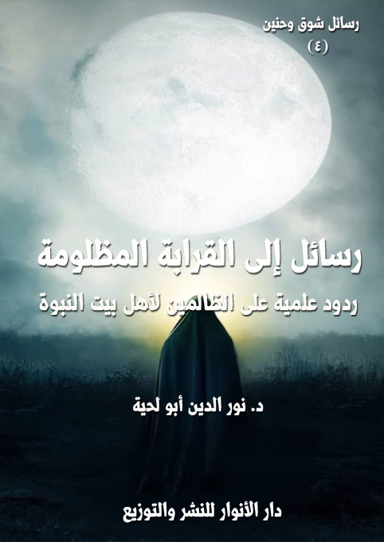

الكتاب: رسائل إلى القرابة المظلومة
الوصف: ردود علمية على الظالمين لأهل بيت النبوة
السلسلة: رسائل شوق وحنين
المؤلف: أ.د. نور الدين أبو لحية
الناشر: دار الأنوار للنشر والتوزيع
الطبعة: الأولى، 1440 هـ
عدد الصفحات: 180
ISBN: 978-620-3-85926-3
لمطالعة الكتاب من تطبيق مؤلفاتي المجاني وهو أحسن وأيسر: هنا

التعريف بالكتاب
هذا الكتاب زفرات ألم على المظالم التي تعرض لها أقارب رسول الله صلى الله عليه وآله وسلم ابتداء من أمه وأبيه، واللذين رميا بالشرك، وحكم عليهما بأنهما من أهل النار، بينما اعتبر جميع المشركين بمنجاة منها، لأنهم من من أهل الفترة.
وهو زفرات ألم في حق أبي طالب عم رسول الله صلى الله عليه وآله وسلم ذلك الذي فداه بكل شيء، وضحى في سبيله بكل ما يملك، لكنهم يذكرون أنه مات على الشرك، مع أنه لم يعرف الشرك في حياته، وآمن برسول الله صلى الله عليه وآله وسلم قبل أن يتنزل عليه ملاك الوحي.
وهو زفرات ألم في حق خديجة سيدة نساء العالمين تلك الطاهرة التي وضعها رسول الله صلى الله عليه وآله وسلم مع مريم وآسية وفاطمة في محل واحد.. والتي أخبر رسول الله صلى الله عليه وآله وسلم أنه لم يعوض بمثلها، ولا بمن يدانيها، ولكنا لا نكاد نسمع بها.
وهو زفرات ألم في حق الإمام الحسين وأصحابه في الطفوف.. والذي صار ذكرهم بدعة، والبكاء عليهم هرطقة.. والتغني بأعدائهم سنة.
وهو زفرات ألم في حق أولئك الأبطال المنسيين الذين كانوا أكبر من نصر الإسلام، وفدوه بأنفسهم، لكنهم أهملوا، ونسب الفضل لغيرهم.
وهو زفرات ألم في حق أولئك الثوار المضطهدين الذين قاموا لمواجهة الاستبداد والظلم وتحريف الدين، فقمعوا وقتلوا وعلقوا في الصلبان وامتلأت بهم السجون.
رسائل إلى القرابة المظلومة (3)
هذا الكتاب محاولة لتعميق المحبة الحقيقية لأهل بيت النبوة، وإخراجها من السطحية والسذاجة والتناقض إلى المعاني الحقيقية المرادة منها، والتي تنسجم مع العقل والفطرة والدين.
ذلك أن كل تلك الأحاديث النبوية الكثيرة المتفق عليها، والتي تعتبر حبهم والولاء لهم ركنا من أركان الدين، وشعبة من شعب الإيمان، في نفس الوقت الذي تعتبر فيه بغضهم نفاقا، لم تكن تقصد ذلك الحب السطحي الذي يتغني فيه المرء بمن يحب من دون أن يكون له أي آثار عملية.
فذلك غير صحيح، لأن محبة أهل البيت تندرج ضمن محبة المسلمين جميعا، ولا يصح لأحد أن يفاضل في ذلك.. لكن المراد منها ما هو أعمق منها.
فقد كان رسول الله صلى الله عليه وآله وسلم ـ بما أعطاه الله من علم بما سيحصل لأمته من تحريف وتبديل ـ يعلم جيدا حاجة الأمة إلى البوصلة التي تحدد لها الاتجاه الصحيح، والسفينة التي تحتاج إلى ركوبها، حتى لا تغرق في بحر الفتن..
وكان أولى الناس بذلك ـ لا بسبب نسبهم فقط ـ أهل البيت، لا بذلك المعنى الساذج الذي يتصوره البعض، ويفاخر به، ويطلب من الناس أن يحسنوا إليه، ويقفوا تعظيما له بسبب ذلك النسب الذي يحمله.. فذلك لا يتناسب مع الدين، ولا مع قيم الدين، بل هو يتناقض معها، وقد ورد في الحديث الصحيح: (من أبطأ به عمله، لم يسرع به نسبه) (1)
ولكن أهل البيت الموصى بهم هم أولئك الذين وقفوا في وجه الطغيان، وبذلوا دماءهم في سبيل الحفاظ على الدين الأصيل، وقد كان رسول الله صلى الله عليه وآله وسلم بما آتاه الله من نور النبوة
__________
(1) رواه مسلم (2699)، وأبو داود (1455) و(4946)، وابن ماجه (225)
رسائل إلى القرابة المظلومة (4)
يدعو إلى الانضمام إلى صفوفهم، وترك صفوف أعدائهم..
كان صلى الله عليه وآله وسلم بتلك الأحاديث يدعو إلى الانضمام إلى الإمام علي عند خلافه مع أهل الجمل أو أهل صفين أو أهل النهراوين.. أو غيرهم.. وليس الوقوف مع أعدائه، أو الوقوف موقف الحياد.. سواء في ذلك الزمن الذي جرت فيه تلك المعارك، أم في سائر الأزمنة، لأن الدين أسس في ذلك الوقت، وآثار ما حصل بقيت إلى اليوم.
وكان صلى الله عليه وآله وسلم يدعو إلى الانضمام للإمام الحسن حتى لا يضطر إلى عقد ذلك الصلح الذي يتنازل فيه عن ولاية المسلمين، ويتركها للبغاة الذين استطاعوا أن يشتروا الذمم التي لم تفقه جيدا معنى الولاء والمحبة لأهل بيت النبوة.
وكان صلى الله عليه وآله وسلم يدعو إلى الانضمام للإمام الحسين، وعدم تركه وحيدا، بين رمال الطفوف، ثم يتهم أهل الكوفة وحدهم بالخيانة، مع أن كل من لم يتحرك لمساعدته كان خائنا، ومخالفا لتلك الوصايا التي تدعو إلى حبه.. فهل يمكن أن يحب شخص شخصا، ثم يتركه أحوج ما يكون إليه؟
وكان صلى الله عليه وآله وسلم يدعو إلى الانضمام إلى صف زيد بن علي بن الحسين في مواجهة هشام والأمويين.. وإلى الانضمام إلى صف محمد ذي النفس الزكية وإبراهيم في مواجهة المنصور.. وإلى الانضمام إلى إدريس وغيره في مواجهة هارون..
وإلى الذهاب إلى تلك السجون والزنازن التي امتلأت بالعلويين والحسنيين والحسينيين وكل أهل بيت النبوة، بسبب اعتراضهم على تحريف دين جدهم، لإخراجهم منها، لا الوقوف موقف المتفرج، بل المثني على المستبدين الذين ملأوا بهم السجون، ثم التغني بعد ذلك كذبا وزورا بحب أهل البيت.
هذا هو الولاء الحقيقي لأهل بيت النبوة، وهذه هي المحبة الحقيقية التي مثلها عمار
رسائل إلى القرابة المظلومة (5)
بن ياسر الذي لم يترك سيفه في الوقوف مع الإمام علي، كما لم يتركه في وقوفه مع رسول الله صلى الله عليه وآله وسلم.. فكلاهما واحد، والوقوف مع أحدهما، سببه ربط الدين بالبشر لا بالله..
ذلك أن دعوة الإمام علي لم تكن سوى دعوة رسول الله صلى الله عليه وآله وسلم.. والرسول صلى الله عليه وآله وسلم نبه إلى ذلك في كل تلك الأحاديث التي تذكره.. فهو لم يذكره لأجل قرابته، ولا كونه صهره، وإنما للمسؤولية المناطة به.. فهو تلميذه الأول والأكبر.
ولكن كل هذه المفاهيم عراها ما عرى غيرها من سطحية، حيث صارت المحبة لهم لا تختلف عن ذلك الغزل الرقيق الذي لا أثر له في الواقع.
بل عراها التناقض العجيب الذي تصرخ منه الفطرة والعقول السليمة ألما.. فمن العجيب أن ينادي المتناقضون بحبهم للإمام علي، وحبهم لأعدائه في وقت واحد.. ولست أدري كيف يجتمع هذان المتناقضان في قلب واحد؟
ولو أننا حللنا حقيقة ذلك القلب لوجدنا حبه الحقيقي لمعاوية، وليس للإمام علي، ذلك أنهم يفرحون لكل حديث مكذوب في حق معاوية، ويحزنون لكل حديث صحيح في حق الإمام علي، ويحاولون أن يسدلوا عليه كثبانا من رمال النسيان..
وهكذا تجدهم يرمون بالبدعة من يحب الإمام علي، ويدعو إليه وإلى القيم التي جاء بها، ويرمونه بالرفض والمجوسية والشرك وكل أنواع الكفر، في نفس الوقت الذي يعتبرون فيه محب معاوية والمدافع عنه سنيا وسلفيا وصحيح العقيدة، حتى لو جاءت كل الأحاديث تذمه، وتدعو إلى ذمه، وتدعو إلى مواجهة التحريفات التي جاء بها.
بل إن النسائي ـ صاحب السنن ـ قُتل بسبب تأليفه لكتاب في خصائص الإمام علي، وقد طلب منه حينها أن يكتب مثله في فضائل معاوية فقال: ما أعرف له فضيلة إلا: (لا
رسائل إلى القرابة المظلومة (6)
أشبع الله بطنه!)، فضربوه حتى قتلوه (1).
وهكذا نجد المعاصرين لنا يطلبون منا ألا نكتفي بذكر فضائل أهل البيت، بل علينا إذا أردنا أن ندخل رياض أهل السنة أن نكتب في فضل أعدائهم الذين حاربوهم وقتلوهم وشردوهم.. ثم يصخون آذاننا كل حين بأنهم يحبون أهل بيت النبوة.. ولست أدري كيف تجمع قلوبهم كل هذه التناقضات.
لذلك كان هذا الكتاب زفرات ألم على المظالم التي تعرض لها أقارب رسول الله صلى الله عليه وآله وسلم ابتداء من أمه وأبيه، واللذين رميا بالشرك، وحكم عليهما بأنهما من أهل النار، بينما اعتبر جميع المشركين بمنجاة منها، لأنهم من من أهل الفترة.
وهو زفرات ألم في حق عم رسول الله صلى الله عليه وآله وسلم ذلك الذي فداه بكل شيء، وضحى في سبيله بكل ما يملك، لكنهم يذكرون أنه مات على الشرك، مع أنه لم يعرف الشرك في حياته، وآمن برسول الله صلى الله عليه وآله وسلم قبل أن يتنزل عليه ملاك الوحي.
وهو زفرات ألم في حق خديجة سيدة نساء العالمين تلك الطاهرة التي وضعها رسول الله صلى الله عليه وآله وسلم مع مريم وآسية وفاطمة في محل واحد.. والتي أخبر رسول الله صلى الله عليه وآله وسلم أنه لم يعوض بمثلها، ولا بمن يدانيها، ولكنا لا نكاد نسمع بها.
وهو زفرات ألم في حق الإمام الحسين وأصحابه في الطفوف.. والذي صار ذكرهم بدعة، والبكاء عليهم هرطقة.. والتغني بأعدائهم سنة.
وهو زفرات ألم في حق أولئك الأبطال المنسيين الذين كانوا أكبر من نصر الإسلام، وفدوه بأنفسهم، لكنهم أهملوا، ونسب الفضل لغيرهم.
وهو زفرات ألم في حق أولئك الثوار المضطهدين الذين قاموا لمواجهة الاستبداد
__________
(1) سير أعلام النبلاء 14: 125، وفيات الأعيان 1: 77.
رسائل إلى القرابة المظلومة (7)
والظلم وتحريف الدين، فقمعوا وقتلوا وعلقوا في الصلبان وامتلأت بهم السجون.
وقد كنا نود أن نذكر زفرات أخرى أكثر ألما وحزنا.. لكنا أمسكنا عن ذلك.. ونستغفر الله تعالى من التقصير..
وقد حاولنا قدر المستطاع ألا نترك للعاطفة وحدها حق الكلام، بل خلطنا كلامنا بالحجاج الذي تقتنع بها العقول السليمة.. فالعاطفة المجردة عن العقل هوى مجرد.. ولذلك كان كمال العاطفة انسجامها مع العقل.
لذلك كانت هذه الخطابات خطابات عقلية مصاغة بصياغة عاطفية، ذلك أنه لا يملك أحد من الناس مهما أوتي من قوة، أن يتكلم عن مظالم قرابة رسول الله صلى الله عليه وآله وسلم دون أن تهزه العاطفة، وتتغلب عليه المشاعر الجياشة.
وكيف لا يفعل ذلك، وهو يقرأ بأم عينينه ومن كل المصادر، ذلك التنكيل والتشريد والتقتيل والعزل الذي أصابهم، وكأنهم أبناء أبي جهل، لا أبناء رسول الله صلى الله عليه وآله وسلم.. وقرابة أبي سفيان لا قرابة رسول رب العالمين.
مع أن الله تعالى في القرآن الكريم عند حديثه عن الأنبياء عليهم الصلاة والسلام يعطي أهمية خاصة لذريتهم، ويبين أن لهم مكانة كبيرة، لا من الجانب العاطفي فقط، وإنما من جانب العملي أيضا، باعتبار أن لهم اصطفاء خاصا، ودورا مهما في الرسالة وحفظها والوفاء بمقتضياتها.
ومن الأمثلة الواضحة على ذلك قوله تعالى: {إِنَّ اللَّهَ اصْطَفَى آدَمَ وَنُوحًا وَآلَ إِبْرَاهِيمَ وَآلَ عِمْرَانَ عَلَى الْعَالَمِينَ (33) ذُرِّيَّةً بَعْضُهَا مِنْ بَعْضٍ وَاللَّهُ سَمِيعٌ عَلِيمٌ} [آل عمران: 33، 34]، فمن العجيب أن يطالب عشاق آل بيت النبوة بالدليل بعد هذه الآية الكريمة، وهي أوضح الواضحات.. فإن كان الله تعالى قد اصطفى آل إبراهيم وآل
رسائل إلى القرابة المظلومة (8)
عمران.. وهما أدنى من رسول الله صلى الله عليه وآله وسلم بكثير.. فكيف لا يصطفى آل بيت رسول الله صلى الله عليه وآله وسلم؟
ولذلك قرأ الإمام الحسين على ابن الأشعث تلك الآية عندما قال له: (يا حسين بن فاطمة، أيّ حرمة لك من رسول الله صلى الله عليه وآله وسلم ليست لغيرك؟)، ثمّ قال له: (والله إنّ محمداً لمن آل إبراهيم، وإنّ العترة الهادية لمن آل محمد) (1)
ولم يكتف القرآن الكريم بتلك الإشارة الصريحة التي تضمنتها تلك الآية الكريمة، بل ورد في ذلك نصوص أخرى كثيرة، كقوله تعالى: {وَتِلْكَ حُجَّتُنَا آتَيْنَاهَا إِبْرَاهِيمَ عَلَى قَوْمِهِ نَرْفَعُ دَرَجَاتٍ مَنْ نَشَاءُ إِنَّ رَبَّكَ حَكِيمٌ عَلِيمٌ (83) وَوَهَبْنَا لَهُ إِسْحَاقَ وَيَعْقُوبَ كُلًّا هَدَيْنَا وَنُوحًا هَدَيْنَا مِنْ قَبْلُ وَمِنْ ذُرِّيَّتِهِ دَاوُودَ وَسُلَيْمَانَ وَأَيُّوبَ وَيُوسُفَ وَمُوسَى وَهَارُونَ وَكَذَلِكَ نَجْزِي الْمُحْسِنِينَ (84) وَزَكَرِيَّا وَيَحْيَى وَعِيسَى وَإِلْيَاسَ كُلٌّ مِنَ الصَّالِحِينَ (85) وَإِسْمَاعِيلَ وَالْيَسَعَ وَيُونُسَ وَلُوطًا وَكُلًّا فَضَّلْنَا عَلَى الْعَالَمِينَ (86) وَمِنْ آبَائِهِمْ وَذُرِّيَّاتِهِمْ وَإِخْوَانِهِمْ وَاجْتَبَيْنَاهُمْ وَهَدَيْنَاهُمْ إِلَى صِرَاطٍ مُسْتَقِيمٍ (87)} [الأنعام: 83 - 87]، فهذه الآيات الكريمة توضح الصلات النبسية بين الأنبياء جميعا، وتبين أن الاجتباء الإلهي شملهم بهذا الشكل، ولا راد لاجتباء الله.
ولم يكتف القرآن الكريم بهذا التعميم، بل ذكر تفاصيل كثيرة تدل عليه، حتى يترسخ في الأذهان أن اصطفاء الأنبياء فضل إلهي باعتباره استمرارا للنهج الرسالي وتوحيدا لمسيرته حتى لا تنحرف به الطرق والمناهج، ومن الأمثلة على ذلك ما ذكره الله تعالى من اصطفائه لآل إبراهيم عليهم السلام في آيات متعددة، كقوله تعالى عن إبراهيم عليه السلام: {وَوَهَبْنَا لَهُ إِسْحَاقَ وَيَعْقُوبَ وَجَعَلْنَا فِي ذُرِّيَّتِهِ النُّبُوَّةَ وَالْكِتَابَ وَآتَيْنَاهُ أَجْرَهُ فِي الدُّنْيَا وَإِنَّهُ فِي الْآخِرَةِ لَمِنَ الصَّالِحِينَ} [العنكبوت: 27]
__________
(1) الأمالي، الشيخ الصدوق، ص 222..
رسائل إلى القرابة المظلومة (9)
ومنها ما ذكره من أن إبراهيم عليه السلام نفسه دعا الله أن يكون الخط الرسالي ممتدا في ذريته، فقال: {وَإِذِ ابْتَلَى إِبْرَاهِيمَ رَبُّهُ بِكَلِمَاتٍ فَأَتَمَّهُنَّ قَالَ إِنِّي جَاعِلُكَ لِلنَّاسِ إِمَامًا قَالَ وَمِنْ ذُرِّيَّتِي قَالَ لَا يَنَالُ عَهْدِي الظَّالِمِينَ} [البقرة: 124]
بل إن الله تعالى صرح بأن الأمر باق في عقبه، فقال: {وَجَعَلَهَا كَلِمَةً بَاقِيَةً فِي عَقِبِهِ لَعَلَّهُمْ يَرْجِعُونَ} [الزخرف: 28]
بل إن الله تعالى ذكر أن إبراهيم عليه السلام – كما سأل ربه أن يجعل ذريته أئمة للناس - سأله أيضا أن يوفق الناس لمودتهم والاقتداء بهم، فقال – على لسان إبراهيم عليه السلام -: {رَبَّنَا إِنِّي أَسْكَنْتُ مِنْ ذُرِّيَّتِي بِوَادٍ غَيْرِ ذِي زَرْعٍ عِنْدَ بَيْتِكَ الْمُحَرَّمِ رَبَّنَا لِيُقِيمُوا الصَّلَاةَ فَاجْعَلْ أَفْئِدَةً مِنَ النَّاسِ تَهْوِي إِلَيْهِمْ وَارْزُقْهُمْ مِنَ الثَّمَرَاتِ لَعَلَّهُمْ يَشْكُرُونَ} [إبراهيم: 37]
ومن الأمثلة على ذلك ما ذكره الله تعالى من اصطفائه لآل موسى وآل هارون عليهم السلام، كما يشير إلى ذلك قوله تعالى في قصة طالوت: {وَقَالَ لَهُمْ نَبِيُّهُمْ إِنَّ آيَةَ مُلْكِهِ أَنْ يَأْتِيَكُمُ التَّابُوتُ فِيهِ سَكِينَةٌ مِنْ رَبِّكُمْ وَبَقِيَّةٌ مِمَّا تَرَكَ آلُ مُوسَى وَآلُ هَارُونَ تَحْمِلُهُ الْمَلَائِكَةُ إِنَّ فِي ذَلِكَ لَآيَةً لَكُمْ إِنْ كُنْتُمْ مُؤْمِنِينَ} [البقرة: 248]
بل إننا نجد أن الله تعالى اختار هارون أخا موسى عليه السلام ليكون معينا له ووزيرا بناء على طلب موسى، فقال: {وَلَقَدْ آتَيْنَا مُوسَى الْكِتَابَ وَجَعَلْنَا مَعَهُ أَخَاهُ هَارُونَ وَزِيرًا} [الفرقان: 35]
ومن الأمثلة على ذلك ما ذكره الله تعالى من اصطفائه لآل يعقوب عليهم السلام، وهم وإن كانوا جزءا من آل إبراهيم، لكن القرآن خصهم بالذكر عند الحديث عن يوسف بن يعقوب عليهما السلام في قوله تعالى: {وَكَذَلِكَ يَجْتَبِيكَ رَبُّكَ وَيُعَلِّمُكَ مِنْ تَأْوِيلِ
رسائل إلى القرابة المظلومة (10)
الْأَحَادِيثِ وَيُتِمُّ نِعْمَتَهُ عَلَيْكَ وَعَلَى آلِ يَعْقُوبَ كَمَا أَتَمَّهَا عَلَى أَبَوَيْكَ مِنْ قَبْلُ إِبْرَاهِيمَ وَإِسْحَاقَ إِنَّ رَبَّكَ عَلِيمٌ حَكِيمٌ} [يوسف: 6]
وذكرهم عند الحديث عن زكريا عليه السلام حينما دعا الله عز وجل وطلب الذرية الصالحة، فقال: {فَهَبْ لِي مِنْ لَدُنْكَ وَلِيًّا (5) يَرِثُنِي وَيَرِثُ مِنْ آلِ يَعْقُوبَ وَاجْعَلْهُ رَبِّ رَضِيًّا} [مريم: 5، 6]
ومن الأمثلة على ذلك ما ذكره الله تعالى من اصطفائه لآل داود عليهم السلام، والذين ورد ذكرهم في قوله تعالى: {اعْمَلُوا آلَ دَاوُودَ شُكْرًا وَقَلِيلٌ مِنْ عِبَادِيَ الشَّكُورُ} [سبأ: 13]، وقد بين القرآن الكريم أن سليمان ورث داود، فقال: {وَوَرِثَ سُلَيْمَانُ دَاوُودَ} [النمل: 16]
لكن كل ذلك لم يلتفت إليه، وكأن الله تعالى بين اصطفاءه الخاص لذريات الأنبياء، وأقاربهم إلا رسول الله صلى الله عليه وآله وسلم.. فهو وحده المخالف لهم، مع أن الأصل أن يكون أولى بذلك منهم، إن لم يكن نظيرا لهم فيه، وقد قال تعالى عنه: {قُلْ مَا كُنْتُ بِدْعًا مِنَ الرُّسُلِ وَمَا أَدْرِي مَا يُفْعَلُ بِي وَلَا بِكُمْ إِنْ أَتَّبِعُ إِلَّا مَا يُوحَى إِلَيَّ وَمَا أَنَا إِلَّا نَذِيرٌ مُبِينٌ} [الأحقاف: 9]
لهذا نجد ابن تيمية ـ وهو من أكبر المنظرين للنصب والعداوة لأهل البيت في هذه الأمة ـ يعتبر تقديم آل الرسول صلى الله عليه وآله وسلم على غيرهم أثر من آثار الجاهلية في تقديم أهل بيت الرؤساء، كما نص على ذلك في (منهاج السنة) – على طريقته الخاصة في التحايل - بقوله: (وإنما قال من فيه أثر جاهلية عربية أو فارسية: إن بيت الرسول أحق بالولاية. لكون العرب كانت في جاهليتها تقدم أهل بيت الرؤساء، وكذلك الفرس يقدمون أهل بيت الملك، فنقل عمن نقل عنه كلام يشير به إلى هذا، كما نقل عن أبي سفيان، وصاحب هذا الرأي لم يكن له غرض في علي، بل كان العباس عنده بحكم رأيه أولى من علي، وإن قدر أنه رجح عليا،
رسائل إلى القرابة المظلومة (11)
فلعلمه بأن الإسلام يقدم الإيمان والتقوى على النسب، فأراد أن يجمع بين حكم الجاهلية والإسلام) (1)
وابن تيمية ـ وكل من وافقه على هذا القول وغيره من الأقوال الشنيعة ـ يرمي كما كبير من النصوص التي يوصي فيها رسول الله صلى الله عليه وآله وسلم بآل بيته، ويعتبرهم مراجع الأمة من بعده، بل يعتبرهم صمام أمنها، وسفينة نجاتها كما قال صلى الله عليه وآله وسلم: (مثل أهل بيتي مثل سفينة نوح، من ركب فيها نجا، ومن تخلف عنها غرق) (2)
وفي الحديث المتواتر في كتب السنة، قال صلى الله عليه وآله وسلم: (إني تركت فيكم ما إن تمسكتم بهما لن تضلوا بعدي، الثقلين وأحدهما أكبر من الآخر: كتاب الله حبل ممدود من السماء إلى الأرض، وعترتي أهل بيتي. ألا وإنهما لن يفترقا حتى يردا علي الحوض) (3)
وفي رواية: (أيها الناس. إنما أنا بشر يوشك أن يأتيني رسول من ربي فأجيب. وإني تارك فيكم الثقلين. أولهما كتاب الله فيه الهدى والنور فخذوا بكتاب الله واستمسكوا به. فحث على كتاب الله ورغب فيه. ثم قال: وأهل بيتي. أذكركم الله في أهل بيتي. أذكركم الله في أهل بيتي. أذكركم الله في أهل بيتي) (4)
وللأسف فإن هذا الحديث مع وروده بلفظ (كتاب الله وعترتي) ومع كثرة الروايات الواردة فيه بهذا المعنى استبدل بحديث آخر، وصار هو المعروف عند الناس، وهو استبدال (عترتي) بلفظ (سنتي) مع أنه لم يرد في أي من الصحاح الست، وقد أخرج الحديث بهذا
__________
(1) منهاج السنة النبوية (6/ 455)
(2) رواه الفاكهي في أخبار مكة (3/رقم 1904)، وأبو يعلى في مسنده الكبير [كما في تفسير ابن كثير 4/ 115]، والقطيعي في زوائده على فضائل الصحابة (2/ 785/1402)، والحاكم في المستدرك (2/ 343) و(3/ 150) وصحّحه على شرط مسلم.
(3) رواه أبو داود (السنن 5/ 5/ 13/ رقم 4607) واللفظ له، والترمذي (العلم 16/ رقم 2676) وابن ماجه (المقدمة 6/ 42 و43 و44) والحاكم (العلم 1/ 175/ 329) وصححه، ووافقه الذهبي والألباني، وقال الترمذي: حسن صحيح..
(4) رواه مسلم ح / 2408، سنن الترمذي: ح / 3788، مسند أحمد 3/ 17، المستدرك 3/ 148 وغيرها.
رسائل إلى القرابة المظلومة (12)
اللفظ مالك بن أنس في موطئه ونقله مرسلا غير مسند، وأخذ عنه بعد ذلك البعض كالطبري وابن هشام ونقلوه مرسلا كما ورد عن مالك.
مع العلم أنه في قانون المحدثين لا يروى الحديث إلا بأصح صيغه، هذا في حال كون الصيغة المروية عن مالك صحيحة باعتبار المحدثين لأنها مرسلة، ولكنه للأسف صار الحديث المرسل هو الأصل، وصار الحديث المتواتر في حكم المكتوم، بل لو أن شخصا حدث به لاتهم في دينه.
بالإضافة إلى هذا، فقد وردت الأدلة الكثيرة التي تدل على وجوب الرجوع إلى آل البيت لتلقي الدين، وهي لا تعد ولا تحصى، فقد ورد في الحديث الصحيح المعروف: (علي مني وأنا منه. ولا يؤدي عني إلا أنا أو علي) (1)
وقال صلى الله عليه وآله وسلم: (ومن أحبّ أن يحيا حياتي، ويموت ميتتي، ويدخل الجنّة التي وعدني بها ربّي، وهي جنّة الخلد، فليتوّلَ عليّاً وذرّيته من بعدي؛ فإنّهم لن يخرجوكم من هدى، ولن يدخلوكم باب ضلالة) (2)
وقال صلى الله عليه وآله وسلم: (إن منكم من يقاتل على تأويل القرآن كما قاتلت على تنزيله. فقال أبو بكر: أنا هو يا رسول الله؟ قال: لا. قال عمر: أنا هو يا رسول الله؟ قال: لا. ولكنه خاصف النعل وكان علي يخصف نعل رسول الله في الحجرة عند فاطمة) (3)
وفي رواية أخرى: قال رسول الله صلى الله عليه وآله وسلم: (لتنتهن معشر قريش، أو ليبعثن الله عليكم رجلا مني امتحن الله قلبه للإيمان، يضرب أعناقكم على الدين. قيل يا رسول الله أبو بكر؟
__________
(1) رواه أحمد 4/ 164، وفي (4/ 164 و165، والنسائى في فضائل الصحابة (44)، وابن ماجة (119).
(2) رواه الحاكم مستدرك الحاكم ج 3 ص 128.
(3) رواه أحمد (1/ 155) (1335) وأبو داود (2700)، والترمذي (3715).
رسائل إلى القرابة المظلومة (13)
قال: لا. قيل: عمر. قال: لا. ولكن خاصف النعل في الحجرة) (1)
لكن ـ للأسف ـ حصل الإعراض الكبير عن كل هذا، حيث قدم الطلقاء واليهود على آل بيت النبوة، حتى أن مرويات كعب الأحبار في تفسير القرآن الكريم وفي كتب العقيدة أكبر بكثير من المرويات التي رووها عن أهل البيت.. بل إننا نجد الجماهير تعظم السنة التي حصل فيها المأساة الكبرى حين حصل الصلح بين الحسن بن علي مع معاوية، ويسمون تلك السنة سنة الجماعة.. ويعتبرون معاوية بموجبها خليفة للمسلمين مع تلك النصوص الكثيرة التي تعتبر الحسن بن علي سيد شباب أهل الجنة.. وأن له مكانة عظيمة في الدين..
ولكن مع ذلك يعتبرون ذلك الموقف إقرارا منه بحقانية معاوية، وهم ينسون أن يقرؤوا قوله تعالى في وصف وضع قريب من الوضع الذي كان فيه الحسن بن علي: {قَالَ يَاهَارُونُ مَا مَنَعَكَ إِذْ رَأَيْتَهُمْ ضَلُّوا (92) أَلَّا تَتَّبِعَنِ أَفَعَصَيْتَ أَمْرِي (93) قَالَ يَبْنَؤُمَّ لَا تَأْخُذْ بِلِحْيَتِي وَلَا بِرَأْسِي إِنِّي خَشِيتُ أَنْ تَقُولَ فَرَّقْتَ بَيْنَ بَنِي إِسْرَائِيلَ وَلَمْ تَرْقُبْ قَوْلِي} [طه: 92 - 94]
فهذه الآيات توضح سنة من سنن الغواية التي يتلاعب بها الشيطان بأتباع الأنبياء حين يسول لهم أن يأخذوا دينهم من السامري، ويتركوا النبي وآل بيت النبي.
ومثلما حصل للحسن بن علي حصل لأخيه الحسين بن علي الذي ورد في الأحاديث الكثيرة بيان فضله ومرتبته من الدين، وأنه نفس رسول الله صلى الله عليه وآله وسلم، ومع ذلك نجد أصحاب السنة المذهبية حين يذكرون تلك التضحية العظيمة التي قام بها الحسين للحفاظ على الدين في وجه من يريد تحريفه، يحتقرون ما فعله، بل يعتبرونه من الأخطاء الكبرى التي لا منفعة
__________
(1) المصادر السابقة.
رسائل إلى القرابة المظلومة (14)
فيها.. ويقدمون عليه مواقف ابن عمر وغيره من الصحابة، كما قال ابن تيمية: (ولم يكن في الخروج لا مصلحة دين ولا مصلحة دنيا بل تمكن أولئك الظلمة الطغاة من سبط رسول الله صلى الله عليه وآله وسلم حتى قتلوه مظلوماً شهيداً وكان في خروجه وقتله من الفساد ما لم يكن حصل لو قعد في بلده. فإن ما قصده من تحصيل الخير ودفع الشر لم يحصل منه شيء، بل زاد الشر بخروجه وقتله ونقص الخير بذلك وصار ذلك سبباً لشر عظيم) (1)
وهكذا أصبح ابن تيمية وغيره أساتذة وأئمة وناصحين لذلك الذي قال فيه رسول الله صلى الله عليه وآله وسلم: (حسين مني وأنا من حسين، أحب الله من أحب حسيناً، حسين سِبْطٌ من الأسباط) (2)
بل أعلن صلى الله عليه وآله وسلم، وهو في حياته الشريفة أنه سلم لمن سالم وحرب لمن حارب، ففي الحديث أن رسول الله صلى الله عليه وآله وسلم نظر إلى ابنته فاطمة وإلى علي ومعهما الحسن والحسين وقال لهم: (أنا حرب لمن حاربكم، وسِلْمٌ لمن سالمكم) (3)، وقال: (من أحب الحسن والحسين أحببته، ومن أحببته أحبه الله، ومن أحبه الله أدخله جنات النعيم، ومن أبغضهما أو بغى عليهما أبغضته ومن أبغضته أبغضه الله، ومن أبغضه الله أدخله جهنم وله عذاب مقيم) (4)
هذه دوافعنا من هذه الكتاب، وأغراضنا منه، ونحن نعلم أنه لن يستفيد منه إلا أولئك الذين تحرروا من ربقة التقليد، وخرجوا من السجون التي وضعهم فيها أصحاب الملك العضوض، وسدنة الدين المزيف الممتلئ بالتحريفات..
أولئك فقط من يمكنهم الاستفادة من هذا الكتاب لإقامة علاقة محبة حقيقية
__________
(1) منهاج السنة ج 4 ص 530 - 531.
(2) رواه أحمد (4/ 172) وابن ماجة (144) والترمذي (3775).
(3) قال في مجمع الزوائد ومنبع الفوائد (9/ 169): رواه أحمد والطبراني.
(4) رواه الطبراني في الكبير: 6/ 296.
رسائل إلى القرابة المظلومة (15)
بأولئك الذين أمرنا بحبهم ومودتهم والولاء لهم ونصرتهم والعيش في ظلال القيم التي كانوا يمثلون، وضحوا بأنفسهم في سبيلها.
رسائل إلى القرابة المظلومة (16)
سيدي أبا طالب.. يا عم رسول اللهصلى الله عليه وآله وسلم وحاميه وناصره..
يا من جعلك الله كفيلا لنبيه وسندا له منذ ولادته إلى آخر يوم من حياتك.. يا من رأيت المعجزات الباهرات.. وتشرفت برؤية الأنوار الساطعات.. وسمعت من فم الحبيب الكلمات النيرات..
ماذا عساي أقول لك.. لقد عدت خاوي الوفاض.. فلم ينفعهم ما ذكرته لهم من فضلك وجهدك في خدمة الإسلام ونبيه.. ولم ينفعهم ما ذكرته لهم من عقلك وطهارتك وإيمانك.. ولم ينفعهم ذلك الجدل الذي استعملته معهم لأخاطب عقولهم.. ولم تنفعهم تلك الخطب الحزينة التي خاطبت بها عواطفهم..
لقد رفضوا كل ذلك.. ولو كنتُ معهم حين أوردت عليهم ما أوردت لأوسعوني ضربا، أو لرموني بالحجارة، أو لحاصروني في الشعب كما حاصروك مع ابنك وابن أخيك محمد صلى الله عليه وآله وسلم.
وأنا لا أبالي في سبيلك سيدي كل ما يقولون.. لأني أعلم أن القلوب إذا طبعت، والعقول إذا ختمت، لا تكاد تبصر أو تسمع، {أُولَئِكَ كَالْأَنْعَامِ بَلْ هُمْ أَضَلُّ أُولَئِكَ هُمُ الْغَافِلُونَ} [الأعراف: 179]
لقد قلت لهم بكل صدق وإخلاص: يا قوم.. أين عقولكم؟.. هل تتصورون هذا الرجل العظيم الذي قدم كل هذه الخدمات، والذي عاش كل هذا العمر مع رسول الله صلى الله عليه وآله وسلم يبخل الله عليه بهداية قلبه..
ألم ترووا في كتبكم أن رسول الله صلى الله عليه وآله وسلم كان يضع يده على صدر المنافق، فيسلم، وكان لا يراه أحد ـ وكان صادقاـ إلا أحبه وآمن به.. أفيكون كل الناس مرحومين برسول الله صلى الله عليه وآله وسلم،
رسائل إلى القرابة المظلومة (17)
تتنزل عليهم بركاته ـ حتى أعداؤه الذين قاتلوه ـ إلا أبا طالب؟
ألم ترووا بأسانيدكم التي تعتبرونها أن رسول الله صلى الله عليه وآله وسلم دعا لأم أبي هريرة التي لم تكتف بشركها بالله فقط، وإنما أضافت إليه سب رسول الله صلى الله عليه وآله وسلم، ومع ذلك، بمجرد أن طلب أبا هريرة من رسول الله صلى الله عليه وآله وسلم أن يدعو لأمه، تحولت من النقيض إلى النقيض.. لقد رويتم أن أبا هريرة قال: كنت أدعو أمي إلى الإسلام وهي مشركة، فدعوتها يوما.. فأتيت رسول الله صلى الله عليه وآله وسلم وأنا أبكي قلت: يا رسول الله، إنى كنت أدعو أمي إلى الإسلام فتأبى على فدعوتها اليوم فأسمعتنى فيك ما أكره، فادع الله أن يهدي أم أبي هريرة، فقال رسول الله صلى الله عليه وآله وسلم: (اللهم اهد أم أبي هريرة).. ففتحت الباب ثم قالت: يا أبا هريرة: أشهد أن لا إله إلا الله، وأشهد أن محمدا عبده ورسوله) (1)
أنا لا أنكر الحديث، فأنا أعلم أن رسول الله صلى الله عليه وآله وسلم مستجاب الدعوة، ولكني أعجب من عقولكم التي قبلت أن يدعو رسول الله صلى الله عليه وآله وسلم بالهداية لأم أبي هريرة التي كانت تسبه، فتحولت مباشرة إلى الإيمان، ثم يسكت عن الدعاء لعمه، أو يدعو ولا يستجاب له، مع أنه قضى حياته كلها في مدحه ونصرته، على خلاف أم أبي هريرة التي لم تكن تكتفي بالشرك بل أضافت إليه سب رسول الله صلى الله عليه وآله وسلم.
ولم تكتفوا بأم أبي هريرة، بل أدخلتم قوم أبي هريرة جميعا إلى الإسلام بدعوة واحدة من رسول الله صلى الله عليه وآله وسلم، فقد حدث أبو هريرة نفسه، قال: (جاء الطفيل بن عمرو إلى النبي صلى الله عليه وآله وسلم، فقال: إن دوسا قد عصت وأبت، فادع الله عليهم، فقال: (اللهم اهد دوسا، وأت بهم) (2)
بل رويتم أن المنافقين الذين وصفهم الله بما وصفهم به في القرآن الكريم من الخداع
__________
(1) رواه مسلم (2491)
(2) رواه البخاري (2937) ومسلم (2524)
رسائل إلى القرابة المظلومة (18)
والمكر والتذبذب، ومع ذلك استطاعت دعوة رسول الله صلى الله عليه وآله وسلم أن تدركهم، فقد حدثتم عن ابن عمر. قال: (كنت عند رسول الله صلى الله عليه وآله وسلم إذ جاءه حرملة بن زيد، فجلس بين يديه، فقال: يا رسول الله الإيمان هاهنا، وأشار بيده إلى لسانه، والنفاق هاهنا، وأشار بيده إلى قلبه، فسكت عنه رسول الله صلى الله عليه وآله وسلم، فردد عليه مرارا، فأخذ رسول الله صلى الله عليه وآله وسلم بطرف لسان حرملة، وقال: (اللهم ارزقه لسانا صادقا، وقلبا شاكرا، وارزقه حبي وحب من يحبني وصير أمره إلى الخير، فقال: يارسول الله إن لي إخوانا منافقين كنت رأسا فيهم أفلا أدذلك عليهم؟ فقال: من جاءنا منهم استغفرنا له كما استغفرنا لك، ومن مات منهم على دينه فالله أولى به، ولا تخرق على أحد سترا) (1)
هكذا رويتم أن هذا المنافق تحول إلى الإيمان بدعوة واحدة، بل تحول مباشرة من منافق في الدرك الأسفل من النار إلى أحد الصحابة الذين تجلونهم (2)، وتعتقدون أنه لا يمكن لأحد من الناس أن يدرك عملهم حتى لو قام فلم يفتر، وصام ولم يفطر.. بل حتى لو قضى حياته جميعا في سجدة واحدة.
بل رويتم أن رسول الله صلى الله عليه وآله وسلم أخبر أن أي منافق يأتيه يمكنه أن يتحول إلى الإيمان في لحظة واحدة.. فهل كان جدار الهداية التي حجب عنها أبو طالب ـ كما تذكرون ـ أسمك من جدار المنافقين، وهو الذي عاش حياته كلها مع رسول الله صلى الله عليه وآله وسلم.
لقد قلت لهم كل ذلك.. وقلت لهم: ألم ترووا في سيركم ما يدل على أن أبا طالب آمن بنبوة رسول الله صلى الله عليه وآله وسلم قبل مبعثه الشريف، بل آمن به، وهو غلام صغير..
ألم ترووا فيها أن أبا طالب أراد المسير في ركب إلى الشام فقال له رسول الله صلى الله عليه وآله وسلم: أي
__________
(1) المعجم الكبير للطبراني: 4/ 5، وقال ابن حجر في الإصابة: إسناده لا بأس به، وأخرجه ابن منده أيضاً. وقال الهيثمي: رجاله رجال الصحيح ولم يذكر من أخرج الخبر. مجمع الزوائد: 9/ 410..
(2) انظر: أسد الغابة: 1/ 475؛ والإصابة: 1/ 330..
رسائل إلى القرابة المظلومة (19)
عم إلى من تخلفني ها هنا؟ وصب به رسول الله صلى الله عليه وآله وسلم فرق له أبو طالب، فلما سارا أردفه خلفه، فخرج به فنزلوا على صاحب دير فقال صاحب الدير: ما هذا الغلام منك؟ قال: ابني. قال: ما هو بابنك وما ينبغي أن يكون له أب حي. قال: ولم؟ قال: لأن وجهه وجه نبي وعينه عين نبي. قال: وما النبي؟ قال: الذي يوحى إليه من السماء فينبئ أهل الأرض (1).. وقال له: (ارجع بابن أخيك إلى بلدك واحذر عليه اليهود فوالله لئن رأوه وعرفوا منه ما عرفت ليبغنه شرا فإنه كائن لابن أخيك شأن. فأسرع به إلى بلاده ولا تذهب به إلى الروم فإن الروم إذا رأوه عرفوه بالصفة فيقتلونه) (2)
وقلت لهم: تأملوا في هذه النصوص التي تروونها جيدا، واقرأوا بعقولكم لا بألسنتكم فقط لتروا فيها الدلائل الواضحات على إيمانك العظيم برسول الله صلى الله عليه وآله وسلم.
فمن الدلائل البينات على إيمانك سيدي بنبوة رسول الله صلى الله عليه وآله وسلم وهو فتى صغير تصديقك للراهب، وعودتك بابن أخيك إلى بلده، بعد أن قطعت كل تلك المسافة..
في ذلك الوقت الذي عدت فيه مصدقا الراهب لم ينزل القرآن بعد.. ولم ينشق القمر بعد.. ولم تر تلك المعجزات الباهرات بعد.. أفيمكن أن تؤمن به صغيرا، وتجحده كبيرا؟.. أو تؤمن به وأنت لم تر منه ما يستدعي الإيمان، وتجحد به، وأنت ترى كل شيء يدل عليه؟
لقد قلت لهم: اقرأوا الرواية جيدا.. وانظروا فيها إلى تلك الرحمة والشفقة التي كان تملأ قلب أبي طالب على ابن أخيه محمد صلى الله عليه وآله وسلم.. ألم تروا كيف كان يدعوه ابني؟
ولم يكن ذلك إلا تعبيرا عن حقيقة مشاعره.. والتي كان يبادله رسول الله صلى الله عليه وآله وسلم مثلها مثلما يبادل زوجه فاطمة بنت أسد التي كانت بمثابة أم رسول الله صلى الله عليه وآله وسلم.. فقد رويتم في كتبكم
__________
(1) سبل الهدى والرشاد في سيرة خير العباد (2/ 140)
(2) المرجع السابق، (2/ 141)
رسائل إلى القرابة المظلومة (20)
التي تقدسونها أن رسول الله صلى الله عليه وآله وسلم قال عندما دفنها: (يرحمك الله يا أمّي، كنت أمّي بعد أمّي، تجوعين وتشبعيني وتعرين وتكسيني، وتمنعين نفسك طيبا، وتطعميني، تريدين بذلك وجه الله تعالى والدّار الآخرة) (1)
وقلت لهم: ارجعوا إلى كتب السنة والسيرة، وستجدون الأشعار الرقيقة التي قالها أبو طالب، والتي جمعها بعض محققيكم.. اقرأوها بتدبر، وسترون روح الإيمان الصادق تنبعث من كل كلمة من كلماتها.
وقلت لهم: لا بأس.. لعلكم لا تجدون الوقت الذي تبحثون عنها.. ولهذا سأرتل عليكم بعض آياتها (2) والتي قالها ورسول الله صلى الله عليه وآله وسلم صبي صغير بعد أن رجع به من الشام.. لقد ذكرت لهم من قصائدك قولك (3):
إن ابن آمنة الأمين محمدا... عندي بمثل منازل الأولاد
لما تعلق بالزمام رحمته... والعيس قد قلصن بالأزواد
وفيها تقول:
حتى إذا ما القوم بصرى عاينوا... لاقوا على شرك من المرصاد
حبرا فأخبرهم حديثاً صادقا... عنه ورد معاشر الحساد
قوما يهودا قد رأوا ما قد رأى... ظل الغمامة ثاغري الأكباد
ساروا لفتك محمد فنهاهم... عنه وأجهد أحسن الإجهاد
فثنى زبيراء بحير فانثنى... في القوم بعد تجادل وتعاد
ونهى دريسا فانتهى لما نهي... عن قول حبر ناطق بسداد
وأنشدتهم بعدها قصائدك الكثيرة في مساندة رسول الله صلى الله عليه وآله وسلم والذب عنه، والتي رواها المحققون من المحدثين الذين يعتبرونهم، ويرجعون إليهم، كالحافظ ابن حجر العسقلاني الذي يسمونه خاتمة الحفاظ، والذي قال مخبرا عنك: (وأخباره في حياطته والذب عنه صلى الله عليه وآله وسلم معروفة مشهورة، ومما اشتهر من شعره في ذلك قوله: والله لن يصلوا إليك بجمعهم حتى أوسد في التراب دفينا وقوله: كذبتم وبيت الله نبزي محمداً ولما نقاتل حوله ونناضل) (4)
وأنشدتهم قولك:
والله لن يصلوا إليك بجمعهم... حتى أوسد في التراب دفينا
فاصدع بأمرك ما عليك غضاضة... وابشر بذاك وقر منك عيونا
ودعوتني وعلمت أنك صادق... ولقد صدقت وكنت ثَمَّ أمينا
ولقد علمت بأن دين محمد... من خير أديان البرية دينا (5)
وأنشدتهم قولك:
لعمري لقد كلّفت وجدا بأحمد... وإخوته دأب المحبّ المواصل
فلا زال في الدّنيا جمالا بأحمد... وإخوته دأب المحبّ المواصل
فلا زال في الدّنيا جمالا لأهلها... وزينا على رغم العدو المخاتل
فمن مثله في النّاس أيّ مؤمّل... إذا قاسه الحكّام عند التّفاضل
حليمٌ رشيدٌ عادلٌ غير طائش... يوالي إلهاً ليس عنه بغافل
فأيّده ربّ العباد بنصره... وأظهر دينا حقّه غير ناصل (6)
وأنشدتهم ذلك البيت المعروف الذي لا يزالون ينشدونه من غير أن يعرفوا أن قائله هو أنت:
وأبيض يستسقي الغمام بوجهه... ثمال اليتامى عصمة للأرامل
يلوذ به الهلاك من آل هاشمٍ... فهم عنده في نعمة وفواضل
ثم قصصت لهم ما رواه علماء السيرة عن سبب قولك له، فذكرت لهم أن ابن عساكر حدث عن جلهمة بن عرفطة قال: قدمت مكة وقريش في قحط، فقائل منهم يقول: اعتمدوا واللات والعزى. وقائل منهم يقول: اعتمدوا مناة الثالثة الأخرى فقال شيخ وسيم حسن الوجه جيد الرأي: أنى تؤفكون وفيكم بقية إبراهيم وسلالة إسماعيل. قالوا: كأنك عنيت أبا طالب؟ قال: إيها. فقاموا بأجمعهم وقمت معهم فدققنا عليه بابه فخرج إلينا رجل حسن الوجه عليه إزار قد اتشح به فثاروا إليه فقالوا: يا أبا طالب أقحط الوادي وأجدب العيال فهلم فاستسق لنا فخرج أبو طالب ومعه غلام كأنه شمس دجنة تجلت عليه سحابة قتماء وحوله أغيلمة فأخذه أبو طالب فألصق ظهره بالكعبة ولاذ بإصبعه الغلام وما في السماء قزعة فأقبل السحاب من هاهنا وها هنا وأغدق واغدودق وانفجر له الوادي وأخصب النادي والبادي (7).
وقلت لهم، وأنا متعجب من عقولهم وانسدادها: هل تتصورون أن الذي توسل برسول الله صلى الله عليه وآله وسلم وهو صبي صغير، لا يتوسل به وهو كهل كبير..
وهل تتصورون أن الذي توسل به للسقيا، لا يتوسل به للحياة الأبدية؟
بل رويت لهم ما هو أخطر من ذلك مما يدل على معرفتك به وبنبوته منذ ولد إلى أن
__________
(1) رواه الطبراني في الكبير والأوسط برجال الصحيح وفي الأوسط، انظر: سبل الهدى والرشاد في سيرة خير العباد (11/ 287)
(2) سبل الهدى والرشاد في سيرة خير العباد (2/ 142)
(3) دلائل النبوة للبيهقي (2/ 29)
(4) فتح الباري، (7/ 194)
(5) هذه الأبيات ذكرها القرطبي في (تفسيره) (6/ 406)، وأورد الحافظ ابن حجر البيتين الأخيرين في (الإصابة) (7/ 236)، وانظر: دلائل النبوة للبيهقي (2/ 188)
(6) سبل الهدى والرشاد في سيرة خير العباد (2/ 381)
(7) المرجع السابق، (2/ 137)
رسائل إلى القرابة المظلومة (21)
توفاك الله.. لقد حكيت لهم ما رواه ابن سعد والخطيب وابن عساكر: عن عمرو بن سعيد أن أبا طالب قال: كنت بذي المجاز مع ابن أخي، يعني النبي صلى الله عليه وآله وسلم، فأدركني العطش فشكوت إليه فقلت: يا ابن أخي قد عطشت. وما قلت له ذلك وأنا أرى عنده شيئاً إلا الجزع قال: فثنى وركه ثم قال: يا عم عطشت؟ قلت: نعم. فأهوى بعقبه إلى الأرض فإذا أنا بالماء فقال: اشرب فشربت (1).
وقلت لهم بعد أن رويت لهم هذه الرواية وغيرها: هل ترون أن الذي عاين هذه المعجزة سيكون جاهلا كافرا من أجل حرصه على إرضاء أبي جهل وأبي لهب؟
وهكذا ذكرت لهم سيدي أن رسول الله صلى الله عليه وآله وسلم كان متعلقا بك إلى درجة لا يمكن تصورها حتى أنه سمى عاما كاملا عام الحزن حدادا عليك، وعلى السيدة العظيمة المظلومة خديجة..
تصور سيدي أني بعد أن ذكرت لهم هذا راحوا يسخرون مني، ويقولون: ما دمت قد أثبت لنا أن أبا طالب مؤمن، وأنه من أهل الجنة.. فاذهب وابحث لعلك تجد ما يدلك على أن أبا جهل وأبا لهب مؤمنان وفي الجنة.
تصور سيدي كيف يضعانك مع أعدائك وأعداء نبيك في خندق واحد.. لقد أعماهم التعصب عن إدراك الحق.. فتصوروا أننا ندافع عنك فقط لكونك عما لرسول الله صلى الله عليه وآله وسلم.. ونسوا أننا ندافع عن الجبل الذي واجه كل المعتدين.. وعن السيد الذي حمى ذمامه من كل المنحرفين.. في نفس الوقت الذي لا يستحيون فيه عن الدفاع عن كل أعداء رسول الله صلى الله عليه وآله وسلم وأعداء دينه، وأعداء أمته.
لقد راحوا ـ سيدي ـ يواجهونني ببعض الروايات التي رواها البخاري ومسلم.. وهم
__________
(1) المرجع السابق، (2/ 137)
رسائل إلى القرابة المظلومة (22)
في نفوسهم ينتقدون الكثير من أحاديث البخاري ومسلم، بل لا يقبلون منهما إلا ما يتناسب مع أهوائهم.. ولو كانوا يقبلون بهما لكانوا قد وجدوا فيهما ما يدلهم على ضلالة الفئة الباغية التي ينتصرون لها، ويعلنون ولاءهم كل حين لمن يواليها.. ولو بحثوا فيهما لوجدوا من أخبر رسول الله صلى الله عليه وآله وسلم أنهم سيغيرون السنن، ويحرفون الدين، وينحرفون بالأمة نحو الهاوية السحيقة التي وقعت فيها.
سأذكر لك سيدي بعض ما راحوا يستدلون به زورا وبهتانا..
لقد نقلوا ما رواه البخاري ومسلم أن عمك العباس سأل النبي صلى الله عليه وآله وسلم: هل أغنيت عن عمك شيئا؟، فقال: (لعله تنفعه شفاعتي يوم القيامة فيجعل في ضحضاح من النار يبلغ كعبيه يغلي منه دماغه) (1)
انظر إلى لغة الحقد التي عبروا بها عن العذاب الذي أوهمتهم شياطينهم أنه ينزل بك.. ولو أنهم عرضوا هذا الحديث على القرآن الكريم لوجدوا فيه الدلالة الصريحة القاطعة على عدم جواز الشفاعة في الكفار.. فقد أخبر الله تعالى عن الكفار بأنهم {لَا يُخَفَّفُ عَنْهُمْ مِنْ عَذَابِهَا} [فاطر: 36]، وأنهم لا {تَنْفَعُهُمْ شَفَاعَةُ الشَّافِعِينَ} [المدثر: 48]
ولو أنهم عرضوا هذه الرواية على روايات أخرى أكثر عقلانية وانسجاما مع الواقع والقرآن لحلوا المعضلة بكل سهولة، فقد روى هذا الحديث ابن سعد عن العباس أنه سأل رسول الله صلى الله عليه وآله وسلم: ما ترجو لأبي طالب؟ قال: (كل الخير أرجو من ربي) (2)
وهذا اللفظ يعكر على اللفظ السابق، ويجعل الحديث مضطربا على حسب القواعد التي يعتمدون عليها في الحديث.
__________
(1) رواه البخاري 7/ 149، ومسلم رقم (210)
(2) طبقات ابن سعد:1/ 125.
رسائل إلى القرابة المظلومة (23)
ولو أنهم راجعوا سند الحديث لوجدوا العجب العجاب.. لو راجعوه لوجدوا في سنده (عبد الله بن الحارث بن نوفل)، وهو أموي المشرب، أمه هند بنت أبي سفيان أخت معاوية، وقد اصطلح عليه أهل البصرة حين مات يزيد بن معاوية.. وقد روى هذا الأموي الكثير من الروايات المنكرة الممتلئة بالتجسيم، وكان من أساتذته في التجسيم كعب الأحبار اليهودي (1).
لكنهم سيدي لا يقرؤون إلا ما يتناسب مع أمزجتهم.. بل إنهم سيدي راحوا يؤولون القرآن الكريم، ويفسرونه بغير ما أنزل الله بغية مواجهتك وإعلان الحرب عليك..
لقد رووا أن رسول الله صلى الله عليه وآله وسلم دخل عليك لما حضرتك الوفاة، وعندك أبو جهل، فقال لك: (أي عم قل لا إله إلا الله كلمة أحاج لك بها عند الله).. فقال أبو جهل وعبدالله بن أبي أمية لك: (يا أبا طالب ترغب عن ملة عبدالمطلب)، وأنهما لم يزالا يكلمانك حتى كان آخر شيء كلمتهم به، هو (على ملة عبدالمطلب)، وأن النبي صلى الله عليه وآله وسلم قال لك: (لاستغفرن لك ما لم أنه عنه) (2)، وأنه نزل فيك قوله تعالى: {مَا كَانَ لِلنَّبِيِّ وَالَّذِينَ آمَنُوا أَنْ يَسْتَغْفِرُوا لِلْمُشْرِكِينَ وَلَوْ كَانُوا أُولِي قُرْبَى مِنْ بَعْدِ مَا تَبَيَّنَ لَهُمْ أَنَّهُمْ أَصْحَابُ الْجَحِيمِ} [التوبة: 113]، ونزل فيك: {إِنَّكَ لَا تَهْدِي مَنْ أَحْبَبْتَ وَلَكِنَّ الله يَهْدِي مَنْ يَشَاءُ وَهُوَ أَعْلَمُ بِالْمُهْتَدِينَ} [القصص: 56]
ومن العجب أن يوردوا مثل هذا البهتان العظيم.. ومن العجب أن يذكروا أن أولئك الطغاة الظلمة المشركين ينالون في آخر لحظة من الحظوة عندك ما لا ينالها ابن أخيك الذي عشت حياتك كلها من أجله، وضحيت بكل شيء في سبيله..
__________
(1) تهذيب الكمال: 14/ 396.
(2) البخاري (3884) ومسلم (24)
رسائل إلى القرابة المظلومة (24)
وهل يمكن لعاقل أن يصدق خضوع شيخ كبير للذين وحاصروه واستحلوا كل الحرمات في حقه؟.. هل يمكن أن يخضع لهم ويرضيهم؟.. أليست الفطرة السليمة تدعو لمواجهة أمثال هؤلاء بما يكرهونه حتى بما لا نعتقده؟
لكن حديث الفطرة والعقل لم يقنعهم، فرحت أخاطبهم بما تعودوا.. لقد ذكرت لهم أن المحققين من المحدثين ـ كابن حجر ـ رأوا أن في نزولها فيك نظر، وهذا طعن صريح في هذا الحديث المروي في الصحيحين، فقد قال في معلقا على هذا: (هذا فيه إشكال، لأن وفاة أبي طالب كانت بمكة قبل الهجرة اتفاقاً، وقد ثبت أن النبي صلى الله عليه وآله وسلم أتى قبر أمه لما اعتمر فاستأذن ربه أن يستغفر لها فنزلت هذه الآية، والأصل عدم تكرر النزول) (1) بل روي في سبب نزول الآية أن رجلاً استغفر لوالديه وهما مشركان فذكر ذلك للنبي صلى الله عليه وآله وسلم فأنزل الله الآية (2).
وهذه الروايات تدل على الاضطراب في سبب نزول الآية، وعدم صحة الاستدلال بها على أنها نزلت فيك أو في والدة النبي آمنة بنت وهب عليها السلام.
ثم إن من العجيب أنهم يروون عن رسول الله صلى الله عليه وآله وسلم أنه صلى على أبي بن سلول المنافق مع أن الله تعالى قال في شأنهم: {إِنَّ الْمُنَافِقِينَ فِي الدَّرْكِ الْأَسْفَلِ مِنَ النَّارِ وَلَنْ تَجِدَ لَهُمْ نَصِيرًا} [النساء: 145]، بل يروون أن النبي صلى الله عليه وآله وسلم استغفر له، وكفنه بقميصه، وقد رووا ذلك في الصحيحين وغيرهما، فإذا كان الله قد نهى نبيه صلى الله عليه وآله وسلم قبل ذلك بسنين عن أن يستغفر للكفار ـ الذين يعتبرونك منهم ـ فكيف يستغفر بعد ذلك لأبي بن سلول، ويخالف ما أمره الله تعالى به؟!
__________
(1) فتح الباري (8/ 508)
(2) رواه أحمد (1/ 99 و130)
رسائل إلى القرابة المظلومة (25)
وفي الأخير سيدي بعد أن خاطبت عقولهم وقلوبهم ودينهم.. لم يجدوا إلا أن يواجهوني بالحقيقة التي تختفي وراء كل ذلك الحقد الذي يكنونه لك.. وكل ذلك الولاء الذي يهدونه لأعدائك.. إنه حقدهم على الشيعة.. ولأن الشيعة يدافعون عنك ويحترمونك ويقدرون جهودك العظيمة، ويعتبرونك من الصحابة الكبار المنتجبين، فإن ذلك لا يرضيهم.. لأن مبدأهم ليس الحقيقة مهما كان القائل بها، وإنما الحقيقة التي تأتي من طرفهم.. وطرف الجماعة التي يعطونها كل ولائهم.
لقد راح بعضهم يقول لي، وكأنه يهددني: لقد ذكر المحققون كابن كثير وغيره أن القول بهذا هو قول الشيعة.. وأنني إن لم أكف عن الدفاع عنك، فسأرمى بالرفض والتشيع..
فقلت لهم: ارموني بما شئتم.. ليس بالرفض والتشيع فقط.. بل بالزندقة والكفر والضلالة.. وارموني في أي جحيم يحلو لكم.. لأني أعلم أن الجنة بيد الله.. والنار بيد الله.. وأعلم أن قلبي الذي يحبك سيدي سيشفع لي عند ربي..
ولو أنهم تخلوا عن غرورهم، ودرسوا العلم عن أهله لعرفوا أن الصالحين من هذه الأمة كلهم يحترمونك ويعظمونك مهما اختلفت مذاهبهم.
فهل كان مفتي الشافعية في مكة المكرمة في وقته السيد أحمد زيني دحلان الذي آلمته الأحقاد الموجهة لك. فكتب كتابا في نصرتك سماه (أسنى المطالب في نجاة أبي طالب) شيعيا.. وهل الشافعية شيعة.. وهل مفتيهم يقول بقول الشيعة؟
وهل كان العلامة البرزنجي الذي تألم هو الآخر لما قيل فيك، فكتب كتابا في نصرتك سماه (بغية الطالب لإيمان أبي طالب وحسن خاتمته) هو الآخر شيعيا؟
وهل كان مولانا محمد معين الهندي السندي التتوي الحنفي الذي كتب كتابا في
رسائل إلى القرابة المظلومة (26)
نصرتك سماه (إثبات إسلام أبي طالب) شيعيا.. وهل الحنفية شيعة؟
وهل كان أبو الهدى محمد أفندي بن حسن الصيادي الرفاعي، الذي ألف كتابا في نصرتك سماه (السهم الصائب لكبد من آذى أبا طالب) شيعا.. وهل رجال الطريقة الرفاعية الصوفية شيعة؟
وهل كان السيد علي كبير بن علي جعفر الحسيني الهندي الإله أبادي الذي ألف كتابا في نصرتك سماه (غاية المطالب في بحث إيمان أبي طالب) شيعيا؟
وهل كان الشيخ أحمد فيضي بن علي عارف الجورومي الخالدي الرومي الحنفي الذي ألف في الانتصار لك (فيض الواهب في نجاة أبي طالب) شيعيا؟
وهل كان القاضي الفاضل السيد حيدر ابن العلامة السيد محمد سعيد العرفي الذي ألف في نصرتك كتابا سماه (أبو طالب بطل الإسلام) شيعيا؟
ليس هؤلاء فقط من قالوا هذا، بل المفتون والعلماء من جميع المذاهب الإسلامية ذكروا فضلك وحرمتك، لأن حرمتك من حرمة أعظم إنسان في التاريخ، بل أعظم مخلوق على الإطلاق محمد صلى الله عليه وآله وسلم.. لقد قال بهذا: الأجهوري، والتلمساني، والحافظ السيوطي، وأحمد بن الحسين الموصلي الحنفي، ومحمد بن سلامة القضاعي، والقرطبي، والسبكي، والشعراني.. وغيرهم كثير.
بعد هذا سيدي ما عساي أقول لك.. أعلم أني أضعف من أن أؤدي الرسالة التي تطلبها الحقيقة مني.. ولكني مع ذلك موقن أن الحق سيظهر لا محالة، وأن هؤلاء الذين يجادلون عن أبي سفيان وهند ومعاوية وكل الطلقاء الذين حبسوك وحبسوا ابن أخيك في الشعب سيدركون الحقيقة التي يحاولون الهروب منها.
إن الحقائق تحاصرهم من كل ناحية.. وهم يواجهونها بمثل ما كانوا يواجهونك به
رسائل إلى القرابة المظلومة (27)
من الحصار والتضييق والتكفير والرمي بالعذاب الشديد.. وينسون أن نور الله لا تطفئه أفواه البشر، {يُرِيدُونَ لِيُطْفِئُوا نُورَ الله بِأَفْوَاهِهِمْ وَاللَّهُ مُتِمُّ نُورِهِ وَلَوْ كَرِهَ الْكَافِرُونَ} [الصف: 8]
رسائل إلى القرابة المظلومة (28)
إلى الأم لمظلومة
سيدتي الفاضلة الكبيرة.. يا أشرف أم في الدنيا.. ماذا عساي أقول لك.. وكيف أعتذر لك عن نفسي، وعن أولئك الذين لا يزالون يخطئون في حقك..
لقد كنت أذكر جيدا في صباي الباكر ـ قبل أن تتدنس فطرتي، وينتكس عقلي ـ كيف كنا في باديتنا الجميلة نتغنى بك، وبجمالك، وبأخلاقك، وبأنوارك العظيمة..
كنا نحفظ عن ظهر قلب قولك، وأنت على فراش الموت تخاطبين ابنك الصغير محمد صلى الله عليه وآله وسلم وأنت تنظرين إلى وجهه الجميل البريء الممتلئ بالقداسة (1):
بارك فيك الله من غلام... يا ابن الذي من حومة الحمام
نجا بعون الملك المنعام... فودي غداة الضرب بالسهام
بمائة من إبل سوام... إن صح ما أبصرت في منامي
فأنت مبعوث إلى الأنام... من عند ذي الجلال والإكرام
تبعث في الحل وفي الحرام... تبعث بالتحقيق والإسلام
دين أبيك البر إبراهام... تبعث بالتخفيف والإسلام
أن لا تواليها مع الأقوام... فالله أنهاك عن الأصنام
ثم قولك بعدها: (كل حي ميت، وكل جديد بال، وكل كبير يفنى، وأنا ميتة وذكري باق، وقد تركت خيرا، وولدت طهرا)
وكنا نردد ما قيل حينها فيك من أشعار لم يعرف أصحابها، فنسبت إلى الجن (2):
نبكي الفتاة البرة الأمينة... ذات الجمال العفة الرزينة
زوجة عبد الله والقرينة... أم نبي الله ذي السكينه
وصاحب المنبر بالمدينة... صارت لدى حفرتها رهينه
لو فوديت لفوديت ثمينه... وللمنايا شفرة سنينه
لا تبقي ظعانا ولا ظعينة... إلا أتت وقطعت وتينه
أما هلكت أيها الحزينة... عن الذي ذو العرش يعلي دينه
فكلنا والهة حزينه... نبكيك للعطلة أو للزينه
وكنا نردد في الموالد قول البوصيري في همزيته:
فهنيئًا به لآمنة الفضل... الذي شرفت به حواء
من لحواء أنها حملت... أحمد أو أنها به نفساء
يوم نالت بوضعه ابنة وهبٍ... من فخارٍ مالم تنله النساء
وأتت قومها بأفضل مما... حملت قبلُ مريم العذراء
وكنا كلما قرأنا قوله تعالى: {قَدْ جَاءَكُم مِّنَ الله نُورٌ وَكِتَابٌ مُّبِينٌ} (المائدة: 15)، تذكرنا قولك: (ما شعرت أني حملت به، ولا وجدت ثقله كما تجد النساء.. وأتاني آت وأنا بين النائم واليقظان فقال لي: هل شعرت أنك حملت؟ فأقول: ما أدري فقال: إنك حملت بسيد هذه الأمة ونبيها.. وآية ذلك أنه يخرج معه نور يملأ قصور بصرى من أرض الشام، فإذا وضع فسميه محمدا) (3)
وتذكرنا أنك حين حملت برسول الله صلى الله عليه وآله وسلم أتاك آت من ربك، فقال: إنك قد حملت بسيد هذه الأمة، فإذا وقع إلى الأرض فقولي: (أعيذه بالواحد، من شر كل حاسد، من كل بر عاهد وكل عبد رائد، يذود عنى ذائد، فإنه عند الحميد الماجد، حتى أراه قد أتى
__________
(1) رواه أبو نعيم عن أم سماعة بنت أبي رهم عن أمها، انظر: سبل الهدى والرشاد في سيرة خير العباد (2/ 121)
(2) المرجع السابق.
(3) رواه ابن سعد، والبيهقي وغيرهما، انظر: سبل الهدى والرشاد في سيرة خير العباد (1/ 328)
رسائل إلى القرابة المظلومة (29)
المشاهد) (1)
لقد ذكر رسول الله صلى الله عليه وآله وسلم بعض ذلك، فقال مجيبا لمن سأله عن نفسه: (أنا دعوة أبي إبراهيم، وبشرى عيسى، ورأت أمي حين حملت بي كأنه خرج منها نور أضاءت له قصور بصرى من أرض الشام) (2)
وذكر ذلك بعض النسوة اللاتي تشرفن بالحضور يوم مولده صلى الله عليه وآله وسلم، فقد ذكرت بعضهن: أنها شهدت ولادة آمنة بنت وهب رسول الله صلى الله عليه وآله وسلم ليلة ولدته، قالت: فما شئ أنظره في البيت إلا نور، وإنى أنظر إلى النجوم تدنو حتى إنى لأقول: لتقعن على (3).
وقد اشتهر هذا النور الذي ظهر وقت ولادته صلى الله عليه وآله وسلم في قريش كلها، وكثر ذكره فيهم، حتى أن العباس عم رسول الله صلى الله عليه وآله وسلم قال (4):
وأنت لما ولدت أشرقت الأر... ض وضاءت بنورك الأفق
فنحن في ذلك الضّياء وفي النّو... ر وسبل الرشاد نخترق
وقال آخر (5):
لمّا استهلّ المصطفى طالعاً... أضاء الفضا من نوره السّاطع
وعطّر الكون شذا عطره الطّ... يّب من دانٍ ومن شاسع
ونادت الأكوان من فرحة... يا مرحباً بالقمر الطالع
لكنا عندما كبرنا، ودخلنا الجامعات.. وأخذنا الشهادات.. بدأت صورتك تبهت
__________
(1) السيرة النبوية لابن هشام (1/ 293)
(2) رواه الحاكم وصححه والبيهقي، سبل الهدى والرشاد في سيرة خير العباد (1/ 329)
(3) رواه البيهقى، سبل الهدى والرشاد في سيرة خير العباد (1/ 341)
(4) سبل الهدى والرشاد في سيرة خير العباد (1/ 342)
(5) المرجع السابق، (1/ 343)
رسائل إلى القرابة المظلومة (30)
وتبهت إلى أن زالت.. وحلت مكانها صورة لامرأة أخرى كانت تبغض ابنك بغضا شديدا..
لاشك أنك تعرفينها.. إنها هند بنت عتبة. تلك التي كنا في صغرنا نبغضها لبغضها لرسول الله صلى الله عليه وآله وسلم.. وكنا لا ننسى أبدا موقفها يوم أحد، يوم أخذت الدف هي ونسوة قريش، تضرب عليه خلف الرجال، وتحرض على القتال، وهي تقول بكل وقاحة (1):
إن تقبلوا نعانق... ونفرش النمارق
أو تدبروا نفارق... فراق غير وامق
ولا ننسى صورتها أبدا وهي تبقر بطن حمزة، وتلوكها، ثم تلفظها، وهي تصرخ بأعلى صوتها (2):
نحن جزيناكم بيوم بدر... والحرب بعد الحرب ذات سعر
ما كان عن عتبة لي من صبر... ولا أخي وعمه وبكري
شفيت نفسي وقضيت نذري... شفيت وحشي غليل صدري
فشكر وحشي على عمري... حتى ترم أعظمي في قبري
لكنا عندما كبرنا وتعلمنا، ونلنا الشهادات الجوفاء الممتلئة بالغرور والكبرياء نسينا كل ذلك.. وملأنا قلوبنا بهند وبعلها وبنيها.. وصرنا نبشر بأن هندا وذويها كلهم في الجنة.. أما أنت يا أطهر أم في الدنيا.. فصرنا نعتبرك من أهل النار.. وصرنا نحذر كل من يخالف هذا المعتقد بعذاب الله الشديد..
صرنا ــ بسبب ذلك التعليم المحشو بالحقد ـ نرميك يا سيدة الموحدين بأنك مشركة، وكأن الله أعمى قلوبنا عن أن نقرأ قوله تعالى: {يَاأَيُّهَا الَّذِينَ آمَنُوا إِنَّمَا الْمُشْرِكُونَ نَجَسٌ فَلَا
__________
(1) السيرة النبوية لابن هشام (4/ 14)
(2) السيرة النبوية لابن هشام (4/ 40)
رسائل إلى القرابة المظلومة (31)
يَقْرَبُوا الْمَسْجِدَ الْحَرَامَ بَعْدَ عَامِهِمْ هَذَا} [التوبة: 28]، فإذا كانت نجاسة المشركين تحول بينهم وبين القرب من المسجد الحرام، فكيف تقبل العقول أن يكون الرحم الذي آوى رسول الله صلى الله عليه وآله وسلم أشهرا معدودات نجسا..
وكيف تقبل العقول أن يكون أول لبن تغذى به رسول الله صلى الله عليه وآله وسلم نجسا؟
ليتنا في ذلك الحين جمعنا بين الآية الكريمة وقوله صلى الله عليه وآله وسلم: (ما ولدني من سفاح الجاهلية شيء وما ولدني الا نكاح كنكاح الإسلام) (1).. فهذا الحديث لا يكرمك فقط، بل يكرم كل آبائك وأجداك، وكل آبائه صلى الله عليه وآله وسلم من أبيه وأجداده.. فكلهم كانوا على الطهارة والصفاء والإسلام.
لقد كان في إمكاننا أن نجد الأدلة الكثيرة التي تحافظ على تلك المكانة في قلوبنا نحوك.. وكنا نتقن أن نجمع بين جميع الأدلة حتى لو شئنا أن نحول الذئب خروفا لحولناه إلا عند الحديث عنك.. فقد كانت قلوبنا تعمى أن تبصر الحقائق.
لقد استطعنا بذكائنا، وقدرتنا على التلفيق والجمع أن نجعل من أبي سفيان بطلا من أبطال الإسلام، لا عدوا من أعدائه..
وقد استطعنا أن نحول من الجيش الذي لا يعدو بضعة آلاف يوم فتح مكة، والذي بسبب رؤيته أسلم أبو سفيان كما حفظنا. لقد جعلنا من ذلك الجيش معجزة أعظم من كل تلك المعجزات التي أظهرها رسول الله صلى الله عليه وآله وسلم لقومه لكي يؤمنوا.. أعظم من معجزة شق القمر التي ذكر الله موقف المشركين منها، وكان أولهم أبو سفيان، فقال: {اقْتَرَبَتِ السَّاعَةُ وَانْشَقَّ الْقَمَرُ (1) وَإِنْ يَرَوْا آيَةً يُعْرِضُوا وَيَقُولُوا سِحْرٌ مُسْتَمِرٌّ} [القمر: 1، 2] وأعظم من معجزة القرآن نفسه الذي ذكر الله تعالى موقف هند وأبي سفيان منه، فقال: {وَإِذَا تُتْلَى
__________
(1) رواه الطبراني، مجمع الزوائد ومنبع الفوائد (8/ 214)
رسائل إلى القرابة المظلومة (32)
عَلَيْهِمْ آيَاتُنَا قَالُوا قَدْ سَمِعْنَا لَوْ نَشَاءُ لَقُلْنَا مِثْلَ هَذَا إِنْ هَذَا إِلَّا أَسَاطِيرُ الْأَوَّلِينَ وَإِذْ قَالُوا اللَّهُمَّ إِنْ كَانَ هَذَا هُوَ الْحَقَّ مِنْ عِنْدِكَ فَأَمْطِرْ عَلَيْنَا حِجَارَةً مِنَ السَّمَاءِ أَوِ ائْتِنَا بِعَذَابٍ أَلِيمٍ} [الأنفال: 30 ـ 32]
بل أعرضنا عن تدبر القرآن الكريم حين يخبر رسول الله صلى الله عليه وآله وسلم بأنه لا أمل له في أولئك المشركين الكبار الذين أخرجوه، وظاهروا على إخراجه، قال تعالى: {إِنَّ الَّذِينَ كَفَرُوا سَوَاءٌ عَلَيْهِمْ أَأَنْذَرْتَهُمْ أَمْ لَمْ تُنْذِرْهُمْ لَا يُؤْمِنُونَ (6) خَتَمَ الله عَلَى قُلُوبِهِمْ وَعَلَى سَمْعِهِمْ وَعَلَى أَبْصَارِهِمْ غِشَاوَةٌ وَلَهُمْ عَذَابٌ عَظِيمٌ (7)} [البقرة: 6، 7]
لقد استطعنا أن نحول من كل أولئك المشركين أناسا طيبين، بل مسلمين مخلصين، بل صحابة أجلاء لا يجوز تخطئتهم، ولا الكلام فيهم..
بل جعلناهم أولياء وقديسين حتى أنه لو صام أحدنا طول عمره، فلم يفطر، وقام فلم يفتر، فإنه لا يمكنه أبدا أن يصل إلى المكانة التي حلها أبو سفيان أو زوجه هند.
هكذا عُلمنا يا أشرف النساء وأطيبهم وأكرمهم.. فلا تلومينا.. وسامحينا.. واشفعي لنا عند ربك.. فلا شك عندنا أن الذي اختارك لتكوني أما لخير خلقه، قد جعل لك مكانة عالية، وجاها عريضا..
واشفعي لنا ـ سيدتي ـ عند ابنك رسول الله صلى الله عليه وآله وسلم الذي آذيناه بإيذائنا لك.. ولم نراع حرمته.. ولم نراع تحذير الله من إذيته، حيث قال: {إِنَّ الَّذِينَ يُؤْذُونَ الله وَرَسُولَهُ لَعَنَهُمُ الله فِي الدُّنْيَا وَالْآخِرَةِ وَأَعَدَّ لَهُمْ عَذَابًا مُهِينًا} [الأحزاب: 57]
لقد تشبهنا ببني إسرائيل في إذيتهم لموسى عليه السلام، ولأنبيائهم، مع أن الله حذرنا من التشبه بهم، فقال: {يَاأَيُّهَا الَّذِينَ آمَنُوا لَا تَكُونُوا كَالَّذِينَ آذَوْا مُوسَى فَبَرَّأَهُ الله مِمَّا قَالُوا وَكَانَ عِنْدَ الله وَجِيهًا} [الأحزاب: 69]
رسائل إلى القرابة المظلومة (33)
سيدتي الطاهرة.. سأذكر لك بعض أعذاري.. فاسمعيها مني، ولا تلوميني.. فقد كنت غضا طريا.. وكان عقلي فارغا.. وكان للذين يلقونني تلك التعاليم، مع أترابي في الجامعة والمسجد، من السلطان ما لا طاقة لنا بمقاومته..
كانوا يقولون لنا: هذه هي السنة شئتم أو أبيتم.. فإن رفضتم فأنتم رافضة، أو أنتم قبورية، أو أنتم ملاحدة.. إن رفضتم فأنتم مشركون في كل الأحوال.
أذكر أن بعض مشايخنا.. كان صعيديا.. كان اسمه.. دعنا من اسمه، فلعله هو الآخر يتوب.. ويكتب رسالة باكية لك، يترجاك فيها أن تسامحيه.
لقد تنكر لحب أهله من الصعايدة لك، فلم يكفه أن يعتقد ما اعتقد المبغضون لك.. بل راح يبشر بذلك، ويكتب رسالة عنك وعن زوجك الطاهر عبد الله سماها (التعبد المرضي بإثبات كفر والدي النبي كما نطقت بذا الآثار، وجاءت به صحيح الأخبار، مخالفين بذا كل غبيٍّ أبيّ) (1)
ليس هو فقط من تكلم عنك.. لقد تفرغ رجال كثيرون لإخراجك من مقعد الصدق الذي أعده الله لك في الجنة بجوار حبيبك وابنك رسول الله صلى الله عليه وآله وسلم.. وكأن الجنة التي وسعوها لهند وبعلها وبنيها ضاقت عنك.
لقد راحوا جميعا بكل ما أوتوا من قوة وحيلة يحاولون أن يثبتوا أنك لست من الذين لا نعلم مصيرهم عند الله.. ولست من أهل الفترة الذين نكل أمرهم إلى الله.. وإنما أنت من دونهم جميعا من أهل جهنم.. ومن المعذبين فيها.
ويلهم.. كيف يتجرؤون على قول هذا.. بل على كتابته؟
هل تسمحين لي سيدتي أن أدوس على مشاعر الغيظ في قلبي.. وأذكر لك ما نشروه
__________
(1) هي لمحمد بن عبدالحميد حسونة.
رسائل إلى القرابة المظلومة (34)
عنك.. وعن مصيرك..
لقد أوردوا في ذلك أحاديث لست أدري من حدثهم بها يخبر فيها ابنك رسول الله صلى الله عليه وآله وسلم بأنك وزوجك عبد الله كلاكما في النار..
فقط أنت وعبد الله أوردوا فيك مثل هذه الأحاديث.. أما أجداد هند وأبي سفيان وأبي جهل والوليد بن المغيرة.. فلم يرووا فيهم حديثا واحدا.. لقد اكتفوا في جواب من يسألهم عنهم أن يقرأوا قوله تعالى: {وَمَا كُنَّا مُعَذِّبِينَ حَتَّى نَبْعَثَ رَسُولًا} [الإسراء: 15]، ثم يعقبوا على الآية الكريمة بأن أولئك جميعا كانوا من أهل الفترة.. ولم يكن هناك نبي..
بل ذهب بعضهم إلى أنهم حتى لو كانوا مشركين.. فقد كان شركم أفضل بكثير من شرك الذين أحبوك أو دافعوا عنك، أو كتبوا القصائد في مديحك.
لقد كانوا يجيبون من يسألهم عن أم أبي سفيان من القرآن بتلك الآية، أما أذا سئلوا عنك أيتها الطاهرة النقية فقد كانوا يقرؤون عليه قوله تعالى: {وَلَا تُسْأَلُ عَنْ أَصْحَابِ الْجَحِيمِ} [البقرة: 119]، ثم يذكرون له أن الآية نزلت فيك وفي زوجك عبد الله.. وأن ابنك رسول الله صلى الله عليه وآله وسلم كان يقول كل حين حزنا عليك: (ليت شعري ما فعل أبواي، ليت شعري ما فعل أبواي، ليت شعري ما فعل أبواي؟)، فنزلت الآية لتملأ عليه حياته حزنا، وتنسخ معها قوله تعالى: {وَلَسَوْفَ يُعْطِيكَ رَبُّكَ فَتَرْضَى} [الضحى: 5]، فلا يملك رسول الله صلى الله عليه وآله وسلم إلا أن يكف عن ذكرهما حتى توفاه الله، عز وجل (1).
هكذا استبدلوك بهند وبأبي سفيان وبغيرهم ممن تعلمين.. وكأن الله عوض رسوله صلى الله عليه وآله وسلم عنك وعن أبيه بأولئك الذين لم يتركوا سبيلا لحربه وعداوته إلا فعلوه.
ويستدلون لذلك بحديث يروونه من أن ابنك محمدا صلى الله عليه وآله وسلم لما قدم مكة، أتى رسم قبر،
__________
(1) تفسير عبد الرزاق (2/ 78) وتفسير الطبري (2/ 558).
رسائل إلى القرابة المظلومة (35)
فجلس إليه، فجعل يخاطب، ثم قام مستعبراً، فقيل له: يا رسول الله! إنا رأينا ما صنعت.. فقال: (إني استأذنت ربي في زيارة قبر أمي فأذن لي، واستأذنته في الاستغفار لها، فلم يأذن لي).. وأنه ما رؤي باكياً أكثر من يومئذ (1).
وليتهم إذ رووه بكوا.. لا.. لقد كانوا مسرورين جذلين لأنهم وجدوا ما يؤكد لهم اعتقادهم.. أنا لا أكذب هذا الحديث.. فقد يكون صحيحا.. ولكني لا أرى فيه إلا نورا آخر من أنوار جمالك وكمالك.. فالاستغفار يكون للمذنبين، أما أنت فمن المصطفين الأخيار الذين نكتفي بالسلام عليهم، كما قال تعالى: {قُلِ الْحَمْدُ لِلَّهِ وَسَلَامٌ عَلَى عِبَادِهِ الَّذِينَ اصْطَفَى} [النمل: 59] ولذلك فأنت يقال لك: آمنة عليها السلام.. لا آمنة غفر الله لها. لكنهم للأسف لم يلاحظوا هذا.. بل راحوا ينقلون عن بعضهم قوله ـ بعد ذكر الحديثـ: (فيه جواز زيارة المشركين في الحياة وقبورهم بعد الوفاة؛ لأنه إذا جازت زيارتهم بعد الوفاة ففي الحياة أولى.. وفيه النهي عن الاستغفار للكفار)
بل إن بعضهم تجرأ فراح يزعم أن ابنك رسول الله صلى الله عليه وآله وسلم لم يزرك قاصدا لزيارتك، وإنما زارك قصد قوة الموعضة والذكرى بمشاهدة قبرك..
لم يكتفوا بهذا ـ سيدتي ـ بل راحوا ينقلون الإجماع.. وكأن الأمة اختصرت فيهم.. فقد ذكروا عن بعضهم (إجماع السلف والخلف على عدم نجاة أبوي النبي صلى الله عليه وآله وسلم..) ونقلوا عنه قوله: (اتفق السلف والخلف من الصحابة والتابعين والأئمة الأربعة وسائر المجتهدين على ذلك من غير خلاف لما هنالك) (2)
لا تحزني أيتها الطاهرة النبيلة، فليس هناك إجماع ولا هم يحزنون.. كل ما في الأمر
__________
(1) رواه مسلم، صحيح مسلم بشرح النووي، ج 7 ص 46..
(2) أدلة معتقد أبي حنيفة الأعظم في أبوي الرسول (لعلي بن سلطان محمد القاري تحقيق: مشهور بن حسن بن سلمان - مكتبة الغرباء الأثرية - الطبعة الأولى 1413 هـ، ص (7 - 8)
رسائل إلى القرابة المظلومة (36)
أنهم ثلة من الناس رفعت الحياء عن وجهها، فراحت تصحح كل ضعيف، وتحيي كل ميت في سبيل أن تنال منك..
لكن الكثير من محبيك قاموا ليدافعوا عنك وعن زوجك عبد الله، وألفوا في ذلك رسائل وكتبا.. كان منها (الانتصار لوالدي النبي المختار صلى الله عليه وآله وسلم) للسيد مرتضى الزبيدي.. ومنها (تحقيق آمال الراجين في أن والدي المصطفى من الناجين) لابن الجزاز.. ومنها (التعظيم والمنة في أن أبوي المصطفى في الجنة)، و(مسالك الحنفا في والدي المصطفى) للسيوطي.. ومنها (ذخائر العابدين في نجاة والد المكرم سيد المرسلين صلى الله عليه وآله وسلم) للأسبيري.. ومنها (مرشد الهدى في نجاة أبوي المصطفى صلى الله عليه وآله وسلم) للرومي.. ومنها (مطلع النيرين في إثبات نجاة أبوي سيد الكونين صلى الله عليه وآله وسلم) للمنيني.. ومنها (هدايا الكرام في تنزيه آباء النبي صلى الله عليه وآله وسلم) للبديعي.. ومنها (أمهات النبي صلى الله عليه وآله وسلم) للمدائني.. ومنها (تأديب المتمردين في حق الأبوين) لعبد الأحد بن مصطفى الكتاهي السيواسي.. ومنها (قرة العين في إيمان الوالدين) للدويخي.. وغيرها كثير.
هل أخبرك ـ سيدتي ـ بشيء قد يثير عجبك.. ولكن لا تتعجبي، فأمثال هذه العقول يمكنها أن تجمع المتناقضات، ولا تضيق بها..
إنهم يروون عن بعضهم قوله: (وفُضلت اليهود والنصارى على الرافضة بخصلتين: سئلت اليهود: من خير أهل ملتكم؟ قالوا: أصحاب موسى، وسئلت النصارى: من خير أهل ملتكم؟ قالوا: حواري عيسى، وسئلت الرافضة: من شر أهل ملتكم؟ قالوا: أصحاب محمد صلى الله عليه وآله وسلم) (1)
كان في إمكانهم لو طبقوا هذا على أنفسهم.. لا بسؤال اليهود والنصاري.. فقد
__________
(1) منهاج السنة: ج/1 - ص/27.
رسائل إلى القرابة المظلومة (37)
يكذبون.. وإنما بسؤال القرآن نفسه.. لا عن أصحاب موسى، فقد أخبر الله عما فعلوه به.. ولا عن أصحاب المسيح، فقد أخبر القرآن عن انحرافهم عنه.. وإنما يسألوا القرآن الكريم نفسه عن أم موسى وعيسى.. فإذا سألوه فسيجيبهم بأن أم موسى أوحى لها الله: {أَنْ أَرْضِعِيهِ فَإِذَا خِفْتِ عَلَيْهِ فَأَلْقِيهِ فِي الْيَمِّ وَلَا تَخَافِي وَلَا تَحْزَنِي إِنَّا رَادُّوهُ إِلَيْكِ وَجَاعِلُوهُ مِنَ الْمُرْسَلِينَ} [القصص: 7] وأما أم المسيح، فقد أوحى لها الله: {يَامَرْيَمُ إِنَّ الله يُبَشِّرُكِ بِكَلِمَةٍ مِنْهُ اسْمُهُ الْمَسِيحُ عِيسَى ابْنُ مَرْيَمَ وَجِيهًا فِي الدُّنْيَا وَالْآخِرَةِ وَمِنَ الْمُقَرَّبِينَ} [آل عمران: 45] ونحسب أن ما رأيته وما سمعته لا يقل عما رأته أم موسى أو أم المسيح.. لأن محمد صلى الله عليه وآله وسلم هو سيد موسى والمسيح.
ليتهم يعملون القياس الذي تعودوا أن يعملوه في كل شيء، ليروا أنفسهم أسوأ من اليهود والنصارى في موقفهم من أم نبيهم.. مع العلم أن أم أي شخص في الدنيا أقرب إليه وأعز من كل أصحابه..
أمر أخير ـ سيدتي ـ أريد أن أبثه لك.. ولست أدري هل يحق لي ذلك أم لا.. فاعذريني فأنا عبد بسيط حقير.. معارفه محدودة.. وقد أكون مخطئا فيما سأذكره لك.
لقد كان المدافعون عنك.. وكأنك مذنبة أو ظالمة.. يلتمسون كل السبل، ليثبتوا إيمانك.. حتى أنهم ذكروا حديثا بأن الله أحياك لرسوله صلى الله عليه وآله وسلم لتؤمني به.. ولست أدري كيف أني من غير قصد لم أصدق ذلك.. ووقعت عند عدم تصديقي مع الفريق الذي أعلن عليك الحرب.. طبعا أنا لم أصدق ذلك لا لكونه غريبا.. فالله قادر على كل شيء، والذي أحيا الموتى للمسيح عليه السلام، لا يعجز عن إحياء الموتى لرسول الله صلى الله عليه وآله وسلم..
ولكني لم أصدقه لأجل الغاية التي وردت في الحديث.. وهي أنك حييت لأجل أن تؤمني به.. لأني أعلم أنك كنت مؤمنة به قبل أن يولد.. وبعد أن ولد.. ومت وأنت من
رسائل إلى القرابة المظلومة (38)
أكثر خلق الله عشقا له.
وحتى بعد موتك.. أنا أعتقد أن الله القادر على كل شيء، والذي جعل الشهداء أحياء عنده.. ويستبشرون بما يروه من أعمال من لم يلحق بهم.. أعتقد جازما ـ ولا يهمني أن أرمى بالخرافة أو الضلالة أو البدعةـ أنك كنت حية تتابعين كل حركة وسكنة من حركات ابنك وسكناته.. وتستبشرين بذلك.. ولذلك لم تكوني بحاجة إلى إحياء..
لكن ذلك الصعيدي الجافي الغليظ وأصحابه تصوروا أنهم بمجرد الحكم على وضع الحديث وكذبه يكونون قد قضوا على الدليل الوحيد الذي يحميك من نار جهنم..
لقد نقل هذا الصعيدي، وغيره من الذين امتلأت قلوبهم قسوة وغلظة قول ابن الجوزي في ذلك الحديث: (هذا حديث موضوع لا يشك فيه، والذي وضعه قليل الفهم، عديم العلم، إذ لو كان له علم لعلم أن من مات كافرا لا ينفعه أن يؤمن بعد الرجعة، لا بل لو آمن بعد المعاينة، ويكفي في رد هذا الحديث قوله تعالى: {فَيَمُتْ وَهُوَ كَافِرٌ فَأُولَئِكَ حَبِطَتْ أَعْمَالُهُمْ فِي الدُّنْيَا وَالْآخِرَةِ وَأُولَئِكَ أَصْحَابُ النَّارِ هُمْ فِيهَا خَالِدُونَ} [البقرة: 217]) (1)
هل سمعت ما قال؟.. إنه يقول بأنك حتى لو حييت من جديد، فإن ذلك لن ينفعك.. وكأن الله قدر لك العذاب لا محالة..
ولست أدري هل ذلك كان عقوبة لك لكونك حملت بخير خلق الله.. أم لأي شيء آخر.
أما من يسمونه شيخ الإسلام، الذي هو أستاذ كل من تكلم فيك.. فقد علق على ذلك الحديث بقوله، وهو في غاية الغبطة والسرور: (لا نزاع بين أهل المعرفة أنه من أظهر
__________
(1) الموضوعات، (1: 284).
رسائل إلى القرابة المظلومة (39)
الموضوعات كذباً، كما نص عليه أهل العلم، وليس ذلك في الكتب المعتمدة في الحديث، لا في الصحيح ولا في السنن ولا في المسانيد، ونحو ذلك من كتب الحديث المعروفة، ولا ذكره أهل كتب المغازي والتفسير، وإن كانوا قد يروون الضعيف مع الصحيح، لأن ظهور كذب ذلك لا يخفى على متدين، فإن مثل هذا لو وقع لكان مما تتوافر الهمم والدواعي في نقله، فإنه من أعظم الأمور خرقاً للعادة من وجهين: من جهة إحياء الموتى.. ومن جهة الإيمان بعد الموت.. فكان نقل مثل هذا أولى من غيره، فلما لم يروه أحد من الثقات علم أنه كذب) (1)
هل رأيت أيتها الطاهرة كيف يتكلمون عنك.. وكأنهم قطعوا كل حبال النجدة التي يمدها إليك محبوك من البسطاء والمتواضعين، والذين رضوا أن يصدقوا بالمعجزات والخوارق في سبيل أن يثبتوا نجاتك.
وقد غاب عنهم جميعا أنك لست ناجية فقط.. وأنك لست من أهل الجنة فقط.. بل أنت محل نظر الله.. ومحل اصطفائه.. فهو اختارك من بين نساء العالمين جميعا لتكوني أما لحبيبه الذي اصطفاه وارتضاه.. ومن كان محلا لهذا الاصطفاء لا يمكن أن يتخيل خيال، أو تدرك نفس ما أعد له من قرة أعين.
هذه رسالتي ـ سيدتي ـ مضمخة بدموعي.. وبحرارة الشوق لك، ولابنك.. ولأحفادك الطاهرين.. فتقبليها مني.. وكوني أنت وابنك وأحفادك شفعاء لي عند ربك.
__________
(1) مجموع الفتاوى (4/ 325)
رسائل إلى القرابة المظلومة (40)
سيدتي الطاهرة الوفية المظلومة خديجة..
يا أم كل الطاهرين الشهداء الذين تزينت بهم الأرض، وتضمخت بعطرهم السماء.. يا أم الزهراء، وجدة الحسن والحسين، وجدة كل أولئك الذين ملأوا الأرض سلاما وجمالا وطهرا.. يا زوجة رسول الله صلى الله عليه وآله وسلم.. يا من بشرك جبريل بالجنان.. وألقى إليك تحيات السماء..
يا من ملأت قلوبنا أشواقا ورقة.. فكلما نتذكرك، ونتذكر تضحياتك، تنهمر الدموع من مآقينا، لا نستطيع كفكفتها، وكيف نستطيع، ومشهدك وأنت تعانين في رمال الشعب، محاصرة جائعة ظمآنة، مثلما حوصر حفيدك الحسين، وأهل بيته الذين هم من نسلك الطاهر.. لا يغادر أبصارنا ولا بصائرنا.
اسمحي لي أيتها الزوجة الوفية.. والأم الغالية.. والشهيدة الصديقة.. أن أحدث قومي بشأنك، فقد رأيت فيهم من الغفلة عنك، ما جعلهم لا يكادون يذكرونك بين زوجات رسول الله صلى الله عليه وآله وسلم مع أنك كنت زوجته الوحيدة في أكثر سني عمره، وفي السنين التي لم يكن فيها إلا معك، قبل أن تزدحم عليه تكاليف الرسالة وأعباءها في المدينة المنورة؛ فلا يكاد يمكث في بيته إلا قليلا.
ومع ذلك، وبعد فراقك الحزين له، بقي يحن إليك، ويذكرك كل حين، لأنك لم تغادري قلبه، ولا حياته، بل كان يحن للأيام التي كنت فيها سنده، وكنت فيها المثال الأعلى للمرأة الصديقة الطاهرة المجاهدة التي لم يكن لأي امرأة غيرها، أن توضع معها، أو تقارن بها.
ولم يكن ذلك نتيجة عاطفة من عواطف البشر العاديين؛ فرسول الله صلى الله عليه وآله وسلم معصوم
رسائل إلى القرابة المظلومة (41)
العاطفة، فلم يكن ينظر إليك جسدا، وإنما كان ينظر إليك روحا شفافة مملوءة بقيم الجمال؛ فلذلك كان يحدث عنك أمته، لتجعلك رمزا من رموزها، وقيمة من قيمها، ومعنى من معانيها النبيلة.
لقد كان يقول عنك وعن فاطمة التي هي بضعة رسول الله صلى الله عليه وآله وسلم ابنتك، ومريم، وامرأة فرعون: (حسبك من نساء العالمين: مريم ابنة عمران وخديجة بنت خويلد. وفاطمة بنت محمد، وآسية امرأة فرعون) (1)
وكان يكرر ذلك لأمته لتملأ قلوبها بمحبتك، ومحبة القيم النبيلة التي تحملينها، والتي أهلتك لذلك الشريف الرفيع في مراتب الإنسانية، ومن الأمثلة على ذلك ما رواه ابن عباس قال: خط رسول الله صلى الله عليه وآله وسلم في الأرض أربعة خطوط. فقال: أتدرون ما هذا؟ فقالوا: الله ورسوله أعلم. فقال: (أفضل نساء أهل الجنة خديجة بنت خويلد وفاطمة ابنة محمد صلى الله عليه وآله وسلمومريم ابنة عمران وآسية ابنة مزاحم امرأة فرعون) (2)
وهذا الفضل ـ أيتها الوفية الصديقة ـ ليس فضلا اعتباطيا ـ كما يتوهم المغلفون ـ ولا عاطفيا، فرسول الله صلى الله عليه وآله وسلم أكبر من أن يحكم بعاطفته، وقد قال تعالى عنه: {وَمَا يَنْطِقُ عَنِ الْهَوَى (3) إِنْ هُوَ إِلَّا وَحْيٌ يُوحَى} [النجم: 3، 4]، وإنما كان صلى الله عليه وآله وسلم يعبر عن الحقائق الكبرى للوجود، ومنها وجودك الممتلئ بالطهر والقداسة، فأنت ركن من أركان الجمال الأنثوي في معانيه السامية التي لا تراها العيون المحبوسة في قيود الكثافة.
ولذلك لا نستطيع نحن ولا غيرنا أن نعرفك، أو نعرف معنى كونك أحد أولئك الأربع الذين تأسس عليهم الجمال الملكوتي للمرأة.. وإنما يمكننا أن نعرفك فقط من خلال
__________
(1) رواه الترمذي بسند صحيح والنسائي والحاكم (التاج الجامع للأصول 379/ 3)
(2) رواه أحمد وأبو يعلى والطبراني وقال الهيثمي رجاله رجال الصحيح (الزوائد 223/ 9)
رسائل إلى القرابة المظلومة (42)
ما روي عنك، وهو قليل جدا بجانب حقيقتك التي امتلأت بها جوانحك، حتى يختارك الله لنبيه، وفي أحرج الفترات التي تمر بحياته.
ونحن نحسب، بل نوقن أن تلك المعاني النبيلة التي كان قلب رسول الله صلى الله عليه وآله وسلم يمتلئ بها، حين يذهب إلى حراء أو قبلها أو بعدها، كان يبثها إليك، فيستحيل على الزوجة ألا تسأل زوجها، ويستحيل عليك وأنت من امتلأت بحب رسول الله صلى الله عليه وآله وسلم ألا تعرفيه، وتعرفي الأسرار التي كان يمتلئ بها، ولذلك كنت أول المؤمنين إيمانا.
ولم تكوني في حاجة للذهاب إلى ورقة بن نوفل أو غيره، ليثبت لك ذلك.. فكل ذلك من رواياة البغاة الذين أرادوا تشويهك وتشويه رسول الله صلى الله عليه وآله وسلم.. ومن العجيب أنهم يذكرون أن موسى عليه السلام عرف كونه نبيا، بل طلب النبوة لأخيه، عند كلام الله له، ثم يجعلون رسول الله صلى الله عليه وآله وسلم محتاجا إلى ورقة وغيره ليثبت له نبوته..
وكل ذلك تضليلات من الفئة الباغية لتصور رسول الله صلى الله عليه وآله وسلم بالصورة التي يرغبون فيها.. ولذلك نحن نوقن بأن معرفتك بشأن رسول الله صلى الله عليه وآله وسلم وكونه محلا للنظر الإلهي، ومحلا لارتباط الأرض بالسماء، لم يكن وليد بعثته فقط، وإنما كان قبل ذلك بكثير..
وقد روى الرواة أن سبب زواجك به، وتركك للزواج من غيره، رغم كثر من طلب يدك، هو انتظارك لذلك اليوم الذي تتحقق فيه أمنيتك، فقد روي أن نساء أهل مكة احتفلن في عيد كان لهن في رجب، فلم يتركن شيئا من إكبار ذلك العيد إلا أتينه، فبينما هن في عيدهن تمثل لهن رجل، فلما صار منهن قريبا نادى بأعلى صوته: (يا نساء مكة إنه سيكون في بلدكن نبي يقال له أحمد، يبعث برسالة الله، فأيما امرأة استطاعت أن تكون له زوجا فلتفعل؛ فحصبته النساء وقبحنه وأغلظن له، وأغضت خديجة على قوله، ولم تعرض له فيما عرض
رسائل إلى القرابة المظلومة (43)
فيه النساء) (1)
ومن ذلك اليوم، وأنت تبحثين عن ذلك الزوج الكريم.. وعندما علم الله صدقك، دلك عليه، فلم يكن حديث ذلك الرجل الذي سمعته كما سمعه النسوة معك سوى دعوة إلهية لك، لتلتحقي بقافلة الطهر، التي كانت تهيأ ذلك الحين.
ونحن لا نستغرب هذا، ولا نتعجب منه، فكما هيأ الله تعالى للمسيح أما من صغرها الباكر، فأنت أيضا قد هيئت لرسول الله صلى الله عليه وآله وسلم تهيئة خاصة، ولذلك كنت ومريم في درجة واحدة.
وقد أشار ابن عمك ورقة بن نوفل إلى كثرة ذكرك له صلى الله عليه وآله وسلم، وكثرة بحثك عنه، فقال بعد أن وصفت له ما ذكره لك ميسرة: (لئن كان هذا حقا يا خديجة، فإن محمدا لنبي هذه الأمة، وقد عرفت أنه كائن لهذه الأمة نبي ينتظر هذا زمانه) (2)
ثم أخذ أمامك يذكر أشواقه إلى هذا النبي الموعود، وكأنه يعبر عن أشواقك أنت أيضا؛ فقد قال:
لججت وكنت في الذكرى لجوجا... لهم طالما بعث النشيجا
ووصف من خديجة بعد وصف... فقد طال انتظاري يا خديجا
ببطن المكتين على رجائي... حديثك أن أرى منه خروجا
بما خبرتنا من قول قس... من الرهبان أكره أن يعوجا
بأن محمدا سيسود فينا... ويخصم من يكون له حجيجا
ويظهر في البلاد ضياء نور... يقيم به البرية أن تموجا
فيلقى من يحاربه خسارا... ويلقى من يسالمه فلوجا
فيا ليتي إذا ما كان ذاكم... شهدت فكنت أولهم ولوجا ولوجا
في الذي كرهت قريش... ولو عجت بمكتها عجيجا
أرجي بالذي كرهوا جميعا... إلى ذي العرش إن سفلوا عروجا
وهل أمر السفالة غير كفر... بمن يختار من سمك البروجا
فإن يبقوا وأبق تكن أمور... يضج الكافرون لها ضجيجا
وإن أهلك فكل فتى سيلقى... من الأقدار متلفة حروجا
وهكذا وردت الروايات الكثيرة تخبر عن علمك بالشأن الذي كان لرسول الله صلى الله عليه وآله وسلم مثلما كانت تعلم أمه وعمه وجده، والذين كانوا يحرصون عليه، ويعلمون أن له شأنا عظيما عند الله تعالى.
ولذلك نحن نكذب كل الروايات التي تسيء إليك، وتصورك بصورة المرأة الجاهلية العادية التي تعبد الأصنام، وتمارس ما يمارسه أهل الجاهلية من طقوس، ذلك أن تلك المنزلة الرفيعة التي أهلت لها، لم تكن لتسمح بذلك، فعقلك لم يكن أقل نضجا من عقل أولئك الحنفاء، ولا من عقل أولئك الموحدين المحافظين على دين إبراهيم..
وكيف يكون الأمر كذلك، وأنت لم تذكري زواجك لسدنة الأصنام المحيطة بالكعبة، وإنما ذكرتها لابن عمك لعلمك بتوحيده وإيمانه وانتظاره للنبي الموعود، والذي لم يكن يختلف عن انتظارك.
لكن المشاغبين من الفئة الباغية راحوا يصورونك بصورة أخرى، بل إنهم في بعض ما يروونه يذكرون أنك سقيت أباك أو عمك خمرا حتى يوافق على زواجك، بل إن بعضها يذكر أنه كان ثملا عندما حدثته عن ذلك.
وكل ذلك زور وبهتان وتلفيق من أعدائك الذين لم يجدوا في حياتك ما يمكن أن
__________
(1) رواه المدائني، عن ابن عباس، انظر: شرح الزرقاني على المواهب اللدنية بالمنح المحمدية (4/ 365)
(2) السيرة النبوية لابن كثير (1/ 268)
رسائل إلى القرابة المظلومة (44)
يسيء إليك، فراحوا ـ بعد وفاتك ـ يستحلون الكذب عليك، كما استحلوه على رسول الله صلى الله عليه وآله وسلم، وكل الأنبياء والصالحين.
لقد رووا عن الزهري، وأنت تعرفين تدليسه، وصلته بالفئة الباغية من بني أمية، أنه قال يحدث عن كيفية زواجك من رسول الله صلى الله عليه وآله وسلم: (.. فانطلقت إلى أبيها خويلد بن أسد، وهو ثمل من الشراب، فقالت: هذا ابن أخيك محمَّد بن عبد الله يخطب خديجة، وقد رضيت خديجة، فدعاه، فسأله عن ذلك، فخطب إليه، فأنكحه، قال: فخَلَّقته خديجة، وحَلَّت عليه حلة، فدخل رسول الله صلى الله عليه وآله وسلم بها، فلما أصبح، صحا الشيخ من سكره، فقال: ما هذا الخلوق، وما هذه الحُلَّة؟ قالت أخت خديجة: هذه حلَّة كساكها ابن أخيك محمد بن عبد الله أنكحته خديجة، وقد بنى بها، فأنكر الشيخ، ثم سلَّم إلى أن صار ذلك واستحيي، وطفقت رُجاز من رُجَّاز قريش تقول:
لا تزهدي خديجُ في محمَّد.. جلد يضيء كضياء الفرقد) (1)
ولم يكتفوا بذلك، بل راحوا يصورون أنك التي قمت بذلك، لأنك لم تستطيعي إقناعهم بالقبول بزواجك من رسول الله صلى الله عليه وآله وسلم؛ فرحت تحتالين عليهم بالخمر.. وكل ذلك ليشوهوك، ويشوهوا رسول الله صلى الله عليه وآله وسلم، ويذكروا أنه لم تكن له أي مكانة بين قومه على الرغم من كل الروايات التي تشيد به، وتذكر أن قومه جميعا كانوا يصفونه بأنه الصادق الأمين (2).
__________
(1) المغازي النبوية لابن شهاب الزهري ص 43..
(2) وقد كانت هذه الروايات التي لفقوها سببا في طعون المستشرقين، فقد قال دورمنغم: (ولم يتم لخديجة ما عزمت عليه بغير مقاومة، فلم يرق أسرتها وهي غنية حليفة لبني مخزوم، أن تتزوج يتيما فقيرا غامض الأمر دون بني مخزوم قدرا) [حياة محمد، ص 43]، وهذا غريب، فلم يكن بنو أسد حلفاء لبني مخزوم، وهكذا علق بودلي على هذا الأمر فقال: (لو أن محمدا كان من علية القوم الأربعمائة، ولو أنه كان من أعضاء الندوة الأغنياء أو بني المطلب، الذين عاشوا حول الكعبة.. بل كان نقيض ذلك) [الرسول، ص 46]، وقال: (وقامت خديجة في نفس الوقت، تمسح رأس عمها بالزعفران والعنبر، ودوت في أركان بيت خديجة أصوات التهليل، وصار زواج محمد من خديجة أمرا واقعا، وما كانت خديجة بالمندفعة في هذه الفرصة السانحة فقد تعلم فعل الخمر في النفوس، وحين كان كل يربت على كتف صاحبه ويتقارعون الكؤوس ويتفاخرون، جاء من يكتب العقد وفي هذا الجو الذي يغلب عليه الصفاء، أتفق على الصداق وتم عقد القران وانتهى الأمر، وصار محمد يعد بعلا لخديجة بحسب شريعة مكة) [الرسول، ص 35]
رسائل إلى القرابة المظلومة (45)
وهم يعلمون أن الخمر لم يكن يشربها في ذلك العصر إلا الصعاليك، أما أصحاب المروءات، فلم يكونوا يقربونها، بل كانوا يعتبرونها من الرجس الذي يسيء إليهم، وقد رووا أن العباس بن مرداس السلمي، والذي لم يكن أكثر مرؤة من والدك، قال: (لا أشرب شرابا أصبح سيد قومي، وأمسي سفيههم) (1)
وهكذا يذكرون أن الشاعر المعروف طرفة بن العبد تحاشاه قومه بسبب معاقرته الخمر، كما يفعلون بالبعير الأجرب، فراح يعبر عن ذلك بقوله (2):
ومازال تشرابي الخمور ولذتي... وبيعي وإنفاقي طريفي وملبدي
الى أن تحامتني العشيرة كلها... وأفردت أفراد البعير المبعد
ألا أيهذا الزاجري أحضر الوغى... وإن أشهد اللذات هل أنت مخلدي
فإن كنت لا تستطيع دفع منيتي... فدعني أبادرها بما ملكت يدي
والعجيب أن هؤلاء الذين يذكرون هذا، هم أنفسهم الذين يذكرون أنك كبيرة السن، وسبق لك الزواج قبل رسول الله صلى الله عليه وآله وسلم، وأنك لم تكتف قبله بزوج واحد، وإنما تزوجت بزوجين، وكل ذلك، حتى يثبتوا أنك لست أكثر شأنا من غيرك، ولا أفضل منهم.. وكل ذلك كذب وزور وبهتان ينفيه العقل والنقل.
أما العقل، فالكل، وفي جميع العالم يعلم أن الزواج الأول لأي شخص، وخاصة في مرحلة الشباب، يكون من البكر، لا من الثيب، ويكون من المرأة التي تدانيه في السن، لا
__________
(1) أبو علي القالي، الأمالي، 1/ 205.
(2) الزوزني، شرح المعلقات السبع، ص 86 ـ.
رسائل إلى القرابة المظلومة (46)
التي تكبر عليه.. وهذا من المتفق عليه بين طباع البشر جميعا، وخصوصا بين العرب الذين كان رسول الله صلى الله عليه وآله وسلم واحدا منهم.
ولم يدر هؤلاء أن ذلك التبرير الخطير الذي وضعوه، وهو كونك غنية مع فقر رسول الله صلى الله عليه وآله وسلم، يسيء لا لك فقط، وإنما يسيء إليه أيضا، لأن العادة جارية على أن الشخص لا يتزوج المرأة التي تكبره سنا إلا لطمعه في مالها، أو في بعض المصالح التي يقضيها من وراء زواجه منها.
ولو أن هؤلاء الذين أشاعوا هذا راحوا يستعملون عقولهم في الروايات التي تؤرخ لعمرك، لعرفوا أنك لم تكوني إلا تربا لرسول الله صلى الله عليه وآله وسلم، وفي نفس عمره، وقد ذكر البيهقي ذلك، وصححه، وأورد غيره الأدلة عليه (1).
لكنهم أبوا إلا أن يجعلوك ـ حين تقدم رسول الله صلى الله عليه وآله وسلم لخطبتك ـ بنت ست وأربعين سنة، أو في سنّ الأربعين (2)، ومن العجيب أنهم يذكرون أن أهلك مع ذلك كانوا مترددين في زواجك من رسول الله صلى الله عليه وآله وسلم الذي كان حينها لا يزال شابا يافعا لا يجاوز الإحدى وعشرين سنة (3).
ولو أنهم رجعوا لما ذكروه في تاريخ وفاتك، وعمرك حينها، لعرفوا ذلك، فقد ذكر البيهقي في دلائل النبوة أن عمرك حين الوفاة كان خمسين سنة، فقال: (لقد بلغت خديجة
__________
(1) انظر: دلائل النبوة للبيهقي ج 2 ص 71 والبداية والنهاية ج 2 ص 294 و295، السيرة النبوية لابن كثير ج 1 ص 265.
(2) انظر: ابن اثير، الكامل، ج 2، ص 39؛ ابن سعد، الطبقات الكبرى، ج 8،ص 174؛ ابن اثير الجزري، أسد الغابة في معرفة الصحابة، ج 1، ص 23.
(3) هكذا روى الزهري، فقد روي عنه أنه قال: كان عمر رسول الله (إحدى وعشرين سنة، وهو يتناسب مع عمر الزواج في ذلك الوقت، وقيل: خمساًوعشرين سنة، زمان بنيت الكعبة، وفي الاستيعاب لابن عبد البر أنّ عمر النبي (عند الزواج بخديجة خمس وعشرون سنة، ونقل ابن الأثير أقوالاً مختلفة في ذلك وهي: (??، ??، ??، ??، ??، ??) سنة [انظر: ابن کثير، البداية والنهاية، ج 5، ص 314، ابن عبدالبر، الاستيعاب، ج ?، ص?5].
رسائل إلى القرابة المظلومة (47)
خمساً وستين سنة، ويقال خمسين وهو أصح) (1)، وهكذا اعتمد ابن كثير على رواية البيهقي، فذهب إلى أن عمرك حين الوفاة كان خمسين سنة (2).
وهم يتفقون على أن زواجك برسول الله صلى الله عليه وآله وسلم كان قبل البعثة بخمس عشرة سنة، وأنك مكثت معه في بيته زوجة له خمسا وعشرين سنة.. وهذه الحسابات وحدها كافية لرد تلك الأباطيل التي يشيعونها عنك قصد تشويهك، وتشويه النبوة معك.
ولم يكتفوا بذلك، بل راحوا يذكرون زواجك قبل رسول الله صلى الله عليه وآله وسلم، حتى يهونوا من شأنك، وقد كان الكذب واضحا في تلك الروايات، فبينما هم يذكرون تنافس أشراف قريش على طلب يدك، بل يذكرون تردد أهلك في رسول الله صلى الله عليه وآله وسلم حين طلبك، إذا بهم يذكرون أن الذي تزوجك لم يكن سوى شخصين عاديين لم يكن لهما أي قيمة اجتماعية، وقد تناقضوا فيهما كما تناقضوا في كل ما يدلسونه عليك (3)، لأنهم يعرفون أن هناك الكثير ممن لا يقرأ، ولا يحقق، بل يكتفي فقط بأن يستمع، ويردد ما يقال له.
لم تقتصر إساءاتهم إليك على ذلك فقط، بل إنهم راحوا يتلاعبون بتلك النصوص المقدسة الكثيرة التي وردت في فضلك، يؤولونها ليصرفوا عنك الأفضلية لتصبح لغيرك، مع أن رسول الله صلى الله عليه وآله وسلم كان يخبر كل حين أنك أنت الأفضل، لا باعتبارك جسدا، وإنما باعتبارك ممثلة لكل القيم النبيلة التي لم تجتمع إلا في النساء الأربع.
ومن ذلك ما حدثت به عائشة قالت: كان رسول الله صلى الله عليه وآله وسلم لا يكاد يخرج من البيت
__________
(1) دلائل النبوة: ج 2، ص 71.
(2) سيرة ابن كثير: ج 1 ص 264.
(3) بعض المصادر تسمي أحدهما أبا شهاب عمرو الکندي، وتسميه اُخري مالک بن النباش بن زرارة التميمي، واُخري تسميه هند بن النباش، واُخري تسميه النباش بن زرارة، وأما من دعي بعتيق بن عائذ المخزومي، وهو الزوج الثاني المفترض، فقد سمته بعض المصادر عتيق بن عابد التميمي إلي غيرذلک..
رسائل إلى القرابة المظلومة (48)
حتى يذكر خديجة؛ فيحسن الثناء عليها، فذكرها يوماً من الأيام فأدركتني الغيرة، فقلت: هل كانت إلا عجوزاً، فقد أبدلك الله خيراً منها، فغضب، ثم قال: (لا والله ما أبدلني الله خيراً منها، آمنت بي إذ كفر الناس، وصدقتني إذ كذبني الناس، وواستني في مالها إذ حرمني الناس، ورزقني الله منها أولاداً إذ حرمني أولاد النساء)، قالت عائشة: (فقلت في نفسي لا أذكرها بسيئة أبداً) (1)
فذكر رسول الله صلى الله عليه وآله وسلم لك بين الناس يدل على أنك من أولئك الذين أمرنا بذكرهم والثناء عليهم، لا لذواتهم، وإنما لتحولهم إلى قيم نبيلة، يمكن أن يتخذها الناس أسوة لهم في حياتهم.
وكيف لا يفعل ذلك، وقد أمره الله تعالى بذكر صاحبتك مريم عندما قال: {وَاذْكُرْ فِي الْكِتَابِ مَرْيَمَ إِذِ انْتَبَذَتْ مِنْ أَهْلِهَا مَكَانًا شَرْقِيًّا} [مريم: 16]، فأنت ومريم في مرتبة واحدة، وفي محل واحد، ولذلك كان ذكرك مطلوبا مثل ذكرها.. ذلك أنه بذكركما تذكر المعاني الطاهرة.
ولذلك كان صلى الله عليه وآله وسلم يذكرك أمام النساء، لا باعتبارك زوجة له، وإنما باعتبارك رمزا عمليا لكل القيم النبيلة التي تمثلت فيك.. وكيف لا تتمثلينها، وأنت التي أخرت زواجك حتى تلتقي به صلى الله عليه وآله وسلم، وبقيت أشواق قلبك معلقة إلى أن وصلت إليه، ثم ضحيت بعد ذلك بكل ما تملكين، وآثرت الحصار والجوع والآلام على تلك العزة التي كان يمكن لأموالك أن توفرها لك.
ولكن مع ذلك كله نظر الباغون إليك نظرة أخرى، غير تلك التي كنت عليها، والتي رسمها صلى الله عليه وآله وسلم عنك.. حيث تصوروا أن الأمر مرتبط بالأهواء لا بالدين.. فلذلك راحوا
__________
(1) رواه أحمد وإسناده حسن (مجمع الزوائد 224/ 9)
رسائل إلى القرابة المظلومة (49)
يستعملون كل الحيل التي تجعلهم يصورون أن الله تعالى أبدلك بمن هو خير منك.. مع أن رسول الله صلى الله عليه وآله وسلم كان يردد كل حين: (لا والله ما أبدلني الله خيراً منها)، وهي كلمة عظيمة من الذي لا ينطق عن الهوى، ومشفوعة بقسم.. وما كان رسول الله صلى الله عليه وآله وسلم يقسم عن هوى، أو يتحدث عن هوى.
والعاقلون يدركون ذلك، ولا يحتاجون لقسم من رسول الله صلى الله عليه وآله وسلم.. فالفطرة السليمة تدل على ذلك، فكيف يوضع معك غيرك، وأنت التي قدمت من الخدمات للإسلام في تلك الفترة الحرجة ما تنوء به الجبال.. ويكفي من ذلك أنك كنت أول النساء إسلاما، وبذلت كل مالك في سبيل الله إلى أن مت في الشعب فقيرة محاصرة لا تجدين شيئا تأكلينه.
وقد ذكر رسول الله صلى الله عليه وآله وسلم بركات مالك على الدعوة الإسلامية في مهدها، ففي الحديث، قال صلى الله عليه وآله وسلم: (ما نفعني مالٌ قطُّ، ما نفعني مالُ خديجة) (1)، وقد كنت تساهمين به في عتق الرقيق، وأداء الديون عن الغارمين، ومساعدة الفقراء، ومدّ يد العون إلى المحتاجين، وكنت أنت وأبو طالب مصدر الإنفاق في ذلك الحصار الجائر.
ومما روي في ذلك أن أبا جهل بن هشام كان قد لقي حكيم بن حزام بن خويلد بن أسد، ومعه غلام يحمل قمحاً، فتعلّق به وقال: أ تذهب بالطعام إلى بني هاشم؟ والله لا تبرح أنت وطعامك حتى أفضحك بمكة؛ فجاءه أبو البختري ابن هاشم بن الحارث بن أسد، فقال: مالك وله؟ فقال: يحمل الطعام إلى بني هاشم، فقال له أبو البختري: (طعام كان لعمّته ـ أي خديجة ـ عنده بعثت إليه فيه، أفتمنعه أن يأتيها بطعامها! خل سبيل الرجل) (2)
__________
(1) بحارالانوار، ج 19، ص 63..
(2) سيرة ابن هشام (2/ 5).
رسائل إلى القرابة المظلومة (50)
وكيف يوضع غيرك معك، وقد روي بالأسانيد الكثيرة المتواترة ما يدل على الصبر الذي أبديته في حياتك مع رسول الله صلى الله عليه وآله وسلم في مكة المكرمة، وفي أوقات الشدة العظيمة، وأنت التي كنت غنية عن ذلك.. في نفس الوقت الذي يذكر القرآن الكريم والسنة الصحيحة أن نساء النبي صلى الله عليه وآله وسلم في المدينة اشتكين حياة الشظف التي يعشنها مع رسول الله صلى الله عليه وآله وسلم إلى الدرجة التي نزل القرآن الكريم يخيرن فيها بين صحبة رسول الله صلى الله عليه وآله وسلم والصبر على حياته، أو أن يملكن أمرهن بالافتراق عن رسول الله صلى الله عليه وآله وسلم، كما قال تعالى يذكر ذلك: {يَاأَيُّهَا النَّبِيُّ قُلْ لِأَزْوَاجِكَ إِنْ كُنْتُنَّ تُرِدْنَ الْحَيَاةَ الدُّنْيَا وَزِينَتَهَا فَتَعَالَيْنَ أُمَتِّعْكُنَّ وَأُسَرِّحْكُنَّ سَرَاحًا جَمِيلًا (28) وَإِنْ كُنْتُنَّ تُرِدْنَ الله وَرَسُولَهُ وَالدَّارَ الْآخِرَةَ فَإِنَّ الله أَعَدَّ لِلْمُحْسِنَاتِ مِنْكُنَّ أَجْرًا عَظِيمًا} [الأحزاب: 28، 29]
وقد أورد المحدثون في سبب نزولها أن عائشة أخبرت: أن رسول الله صلى الله عليه وآله وسلمجاءها حين أمره الله أن يخير أزواجه، فبدأ بي رسول الله صلى الله عليه وآله وسلم، فقال: (إني ذاكر لك أمرا، فلا عليك أن لا تستعجلي حتى تستأمري أبويك)، وقد علم أن أبوي لم يكونا يأمراني بفراقه. قالت: ثم قال: (وإن الله قال: {يَاأَيُّهَا النَّبِيُّ قُلْ لِأَزْوَاجِكَ} إلى تمام الآيتين، فقلت له: ففي أي هذا أستأمر أبوي؟ فإني أريد الله ورسوله والدار الآخرة) (1)
نعم هذا موقف طيب من عائشة، والباغون يفخرون به كثيرا، وينسون أن يذكروا معه في غمرة فخرهم واستعلائهم أن كل ذلك لم يخطر على بالك أصلا.. وهل يمكن لمن هو في مرتبتك من الزهد والتقوى أن يطالب رسول الله صلى الله عليه وآله وسلم بمثل هذا أو غيره؟
لقد كنت ترين رسول الله صلى الله عليه وآله وسلم كل شيء.. فلم يكن يهمك سواه.. فلذلك ضحيت بمالك كله في سبيل الله.. ولم تشتكي أي شكوى.. بل بذلت ذلك برضا وطمأنينة وسعادة.
__________
(1) رواه البخاري برقم (4785)
رسائل إلى القرابة المظلومة (51)
لكن البغاة يأبون إلا أن يتلاعبون بكل ما ورد في حقك من فضل، باعتبارك المثال الأعلى للمرأة المسلمة، ليستبدلوا غيرك بصنوف الحيل التي تعلموها في تمييع النصوص المقدسة والتلاعب بها.
ومن الأمثلة على ذلك إيراد الخلاف في التفاضل بينك وبين عائشة، فقد قال بعضهم: (وفاطمة أفضل بناته على الإطلاق، وقيل إنها أفضل نساء العالمين، وقيل بل أمها خديجة، وقيل بل عائشة، وقيل بل بالوقف في ذلك) (1)
ولست أدري كيف يطرح هذا ورسول الله صلى الله عليه وآله وسلم ذكرك وابنتك فاطمة، ولم يذكر معك عائشة، ولكنهم أبوا إلا أن يدخلوها، وأبوا إلا أن يزيدوا فيفضلوها.. من غير دليل إلا الأهواء، ولم يعلموا أن الأمر مرتبط بالدين، لا بالأشخاص، وأن الله هو الذي يختار، لا رسوله، ولا غيره من البشر، وقد قال تعالى: {وَرَبُّكَ يَخْلُقُ مَا يَشَاءُ وَيَخْتَارُ مَا كَانَ لَهُمُ الْخِيَرَةُ سُبْحَانَ الله وَتَعَالَى عَمَّا يُشْرِكُونَ} [القصص: 68]، فقد اعتبر الله في الآية الكريمة الاختيار مع اختيار الله شرك، لأن المشرك هو الذي يجعل نفسه أو غيره ندا لله.
وهكذا قال آخر، لاشك أنك تعرفينه، إنه من يطلقون عليه كذبا وزورا [شيخ الإسلام]، ذلك الذي امتلأ نصبا وعداوة لكل من يمت لأهل النبوة بصلة، فقد قال تلميذه النجيب يذكر ذلك: (ومنها أنها خير نساء الأمة واختلف في تفضيلها على عائشة على ثلاثة أقوال، ثالثها الوقف، وسألت شيخنا ابن تيمية فقال: اختص كل واحدة منها بخاصة، فخديجة كان تأثيرها في أول الإسلام، وكانت تسلي رسول الله صلى الله عليه وآله وسلم وتثبته وتسكنه وتبذل دونه مالها فأدركت عزة الإسلام، واحتملت الأذى في الله وفي رسوله، وكانت نصرتها للرسول في أعظم أوقات الحاجة فلها من النصرة والبذل ما ليس لغيرها، وعائشة تأثيرها
__________
(1) زاد المعاد ج: 1 ص: 104.
رسائل إلى القرابة المظلومة (52)
في آخر الإسلام فلها من التفقه في الدين وتبليغه إلى الأمة وانتفاع نبيها بما أدت إليهم من العلم ما ليس لغيرها هذا معنى كلامه) (1)
ولو قرأ هذا الذي يسمونه شيخ الإسلام القرآن الكريم، وسلم لقوله تعالى: {لَا يَسْتَوِي مِنْكُمْ مَنْ أَنْفَقَ مِنْ قَبْلِ الْفَتْحِ وَقَاتَلَ أُولَئِكَ أَعْظَمُ دَرَجَةً مِنَ الَّذِينَ أَنْفَقُوا مِنْ بَعْدُ وَقَاتَلُوا} [الحديد: 10]، لعرف أن الفضل لا يرتبط بالرواية، وإنما يرتبط بالمواقف، وفي الأوقات الحرجة.
ولو كان الأمر مرتبطا بالرواية، لكان أبو هريرة أفضل الصحابة، فهم يروون عنه ما لا يروون عن غيره، مع العلم أنه أسلم بعد الفتح.. وهم لا يقولون بذلك.
ولو كان الأمر مرتبطا بالرواية، فإن جميع أمهات المؤمنين بلغن الإسلام بعد وفاة رسول الله صلى الله عليه وآله وسلم، وأدين ما رأينه واجبا عليهن، فلم تخص بذلك زوجة دون زوجة.
ولم يكتفوا بذلك حتى يصرفوا النظر عنك، وإنما راحوا يدرجون في النصوص المقدسة ما ليس منها، ثم يجعلون المدرج أصلا، ليلغوا به متن الحديث.. فقد زادوا في الحديث الذي ذكر فيه رسول الله صلى الله عليه وآله وسلم النسوة الأربع التي تمثلن بجميع القيم النبيلة حتى صرن نماذج صالحة للاقتداء هذه الزيادة: (وفضل عائشة على النساء كفضل الثريد على سائر الطعام) (2)
وقد رووا ذلك، وهم يعلمون أن رسول الله صلى الله عليه وآله وسلم أكرم من أن يشبه البشر بالطعام، ويشبه زوجته بالثريد.. وهذا لا يكون إلا من أولئك الذين يحتقرون المرأة، ويتصورون أنها مجرد متعة من المتع مثل الطعام الذي يستمتعون به، وليست إنسانا محترما له رسالته في الحياة
__________
(1) جلاء الأفهام ج: 1 ص: 234.
(2) رواه البخاري (3411)، ومسلم (2431)
رسائل إلى القرابة المظلومة (53)
الدنيا مثله مثل الرجل تماما.
ورووه، وهم يعلمون أن الثريد لم يكن في يوم من الأيام سيد الطعام، بل قد ورد في النصوص ما يبين فضل اللبن والتمر والعسل، وغيرها، والتي لا يساوي الثريد أمامها شيئا، حتى أن بعض المحدثين راح يبرر الحديث بطريقته الخاصة في التبرير الذي يتنافى مع جلال النبوة، فقال: (والظاهر أن فضل الثريد على سائر الطعام إنما كان في زمنهم لأنهم قلما كانوا يجدون الطبيخ، ولا سيما إذا كان باللحم، وأما في هذا الزمان فأطعمة معمولة من أشياء كثيرة متنوعة فيها من أنواع اللحوم ومعها أنواع من الخبز الحواري، فلا يقال: إن مجرد اللحم مع الخبز المكسور أفضل من هذه الأطعمة المختلفة الأجناس والأنواع، وهذا ظاهر لا يخفى) (1)، ولو أنه رفض الحديث لتنافيه مع بلاغة النبوة، لكان أسهل عليه وأجمل من ذلك التعليل.
وهكذا راح آخر يحتال لذلك بقوله: (فضل عائشة على النساء كفضل الثريد على سائر الطعام.. ضرب به مثلا ليؤذن بأنها أعطيت مع حسن الخلق والخلق وحلاوة النطق وفصاحة اللهجة وجودة القريحة ورزانة الرأي ورصانة العقل والتحبب إلى البعل، فهي تصلح للتبعل والتحدث والاستئناس بها والإصغاء إليها وحسبك أنها عقلت عن النبي صلى الله عليه وآله وسلم ما لم تعقل غيرها من النساء وروت ما لم يرو مثلها من الرجال) (2)
وكل ذلك تكلف ممقوت تأباه لغة العرب، فالكريم لا يوصف بكونه ثريدا، ولا أي طعام من الأطعمة، بل يوصف بما يتناسب مع إنسانيته وكرامتها.
ولذلك أنكر ابن حجر كل هذه التعليلات التي لم تكتف بتفضيل عائشة على النساء،
__________
(1) عمدة القاري ج 16 ص 251.
(2) تحفة الأحوذي ج 10 ص 260.
رسائل إلى القرابة المظلومة (54)
وإنما راحت تفضل الثريد على سائر الطعام، فقال: (وكل هذه الخصال لا تستلزم ثبوت الأفضلية له من كل جهة فقد يكون مفضولاً بالنسبة لغيره من جهات أخرى) (1)
لكن من يسمونه شيخ الإسلام.. راح يستعمل ذلك النص ليلغي كل تلك الأحاديث التي وردت في فضلك.. وليكون ذلك مقدمة لتنساك الأمة.. ولهذا صرنا إذا سألنا أي عامي عن زوجة رسول الله صلى الله عليه وآله وسلم يذكر عائشة، ولا يذكرك.. وكأن كل تلك المناقب التي وردت في حقك لم تصدر من رسول الله صلى الله عليه وآله وسلم.
لقد قال ابن تيمية عند بيانه لتفضيل عائشة في كتابه (منهاج السنة النبوية)، الذي حشاه بكل ألوان التعصب على أهل بيت النبوة: (والجواب أولا أن يقال إن أهل السنة ليسوا مجمعين على أن عائشة أفضل نسائه، بل قد ذهب إلى ذلك كثير من أهل السنة، واحتجوا بما في الصحيحين عن أبي موسى وعن أنس أن النبي صلى الله عليه وآله وسلمقال: (فضل عائشة على النساء كفضل الثريد على سائر الطعام)، والثريد هو أفضل الأطعمة لأنه خبز ولحم.. وذلك أن البر أفضل الأقوات، واللحم أفضل الإدام.. فإذا كان اللحم سيد الإدام، والبر سيد الأقوات، ومجموعهما الثريد، كان الثريد أفضل الطعام. وقد صح من غير وجه عن الصادق المصدوق أنه قال: (فضل عائشة على النساء كفضل الثريد على سائر الطعام) (2)
وقد تبعه على هذا الاستدلالات العجيبة تلاميذه من المعاصرين لنا، والذين أنسوا الأجيال ذكرك، وكلما ذكرت ذكر معك الثريد، وبما أنك لست ثريدا فأنت لست سيدة النساء، ولا النموذج المثالي للمرأة المسلمة.
وكل ذلك إعراض عن النصوص الواضحة الكثيرة التي تحدد مكانتك ومنزلتك
__________
(1) فتح الباري ج 6 ص 321.
(2) منهاج السنة النبوية ج: 4 ص: 301.
رسائل إلى القرابة المظلومة (55)
وفضلك على نساء العالمين.. وهي نصوص صريحة لا تحتاج أي تأويل أو تكلف في الشرح والتوضيح، وتتناسب فوق ذلك مع بلاغة النبوة، وكرامة الإنسان.. فلم يكن رسول الله صلى الله عليه وآله وسلم ليثبت فضل شيء أن يدخل أي واسطة لذلك الفضل.
بالإضافة إلى ذلك، فقد ذكر رسول الله صلى الله عليه وآله وسلم لعائشة عندما ذكرت له أن الله أبدله خيرا من خديجة: (لا والله ما أبدلني الله خيرا منها؟)، وهو دليل واضح قطعي في فضل خديجة.. لكن مع ذلك ما أسهل أن تؤول النصوص ويتلاعب بها، وقد سمعت بعضهم يقول في هذا الحديث بعد محاولة التشكيك في سنده: (حتى لو صحت فهي ليست نصاً، لأن من الممكن أن يكون المعنى: أن الله ما أبدلني خيراً منها، لكن أبدلني مثلها)
وهكذا الأمر في الاحتيال على الأحاديث الصحيحة الكثيرة التي تدل على فضل ابنتك فاطمة الزهراء على نساء العالمين، ففي كتب أولئك الذين يحاولون تغييبك وتغييبها نجد تفضيلا لعائشة على فاطمة مع أن البخاري روى في صحيحه قوله صلى الله عليه وآله وسلم في حق فاطمة الزهراء: (أما ترضين أن تكوني سيدة نساء أهل الجنة أو نساء المؤمنين) (1)، وروى قوله صلى الله عليه وآله وسلم: (فاطمة سيدة نساء أهل الجنة) (2)، وروى في باب مناقب فاطمة قوله صلى الله عليه وآله وسلم: (فاطمة سيدة نساء أهل الجنة) (3)، وروى عن رسول الله صلى الله عليه وآله وسلمقوله: (يا فاطمة أما ترضين أن تكوني سيدة نساء المؤمنين أو سيدة نساء هذه الأمة) (4)
لكن أولئك الذين يقدسون البخاري ويجلونه يشترطون عليه ألا يعارض الأصول التي يعتمدون عليها، فهم يقيمون الدنيا ولا يقعدوها لمن نقد حديثا في البخاري.. لكنهم
__________
(1) البخاري (4/ 183)
(2) البخاري (4/ 209)
(3) البخاري (4/ 219)
(4) البخاري (7/ 142)
رسائل إلى القرابة المظلومة (56)
يعطون لأنفسهم الحرية المطلقة في إنكار ما يشاءون إذا تعارض ذلك مع الأصول التي تعتمد عليها سنتهم.
اعذريني أيتها الأم الطاهرة، والزوجة الوفية أن ذكرت لك كيف يتعاملون معك.. فهم لم يقصدوا فقط إنزالك من مرتبتك التي أنزلك فيها ربك، وإنما يقصدون إلغاءك تماما، لهذا لا نراهم يذكرونك إلا قليلا، مع أن رسول الله صلى الله عليه وآله وسلم كان يذكرك كثيرا.
ولذلك كانت السنة أن نذكرك ونشيد بك، لتكوني النموذج المثالي أنت والنساء الأربع.. هكذا ورد النص المقدس، وما كان لنا أن نختار مع النص المقدس، أو نذكر آراءنا أو نحتال بما نشاء من حيل.
بعد هذا اسمحي لي أن أردد على مسامعك في ختام هذه الرسالة تلك الكلمات العذبة التي قيلت لك، وقلتها في خاتمة حياتك المملوءة بالتضحية والوفاء وكل قيم الجمال..
لقد ورد في الحديث أن الملاك العظيم روح الله جبريل أتى النبي صلى الله عليه وآله وسلم، فقال: (يا رسول الله، هذه خديجة قد أتت معها إناء فيه إدام، فإذا هي أتتك فاقرأ عليها السلام من ربها، ومني، وبشرها ببيت في الجنة من قصب.. لا صخب فيه ولا نصب) (1)
وقد روى المحدثون أن رسول الله صلى الله عليه وآله وسلم عندما بلغ هذه التحيات الزكيات الطاهرات، قلت كلمات تنبئ عما في قلبك من معان نبيلة رقيقة: (هو السلام، ومنه السلام، وعلى جبريل السلام، وعليك يا رسول الله السلام ورحمة الله وبركاته)
لله ما أجمل هذه الكلمات وأعظمها.. إنها تختصر حياتك اختصارا.. فأنت وفي ظل تلك الظروف الشديدة القاسية، وبعد ثلاث سنوات من الجوع والحصار.. لم تتأثر علاقتك بربك، ولا اهتزت، ولا بلغ قلبك الحناجر، مع أن الكل كان يتربص بك وبزوجك
__________
(1) رواه البخاري 7/ 104، ومسلم رقم (2433).
رسائل إلى القرابة المظلومة (57)
العظيم.. ولكنك مع كل تلك الزلازل التي عشت فيها واقعة الأحزاب كل يوم، كنت تشعرين بالسلام.. السلام الذي لا يشعر به إلا القديسون.. وأنت سيدة القديسين.
ولذلك حزن رسول الله صلى الله عليه وآله وسلم على فراقك حزنا شديدا، بل سمى العام الذي فارقته فيه عام الحزن، وبقي ذلك الحزن يتابعه إلى أن لحق بك.. وقد كان من محبته لك في الله.. أنه كان يكرم كل من له صلة بك، وقد ورد في الحديث عن عائشة قالت: ما غرت على نساء النبي صلى الله عليه وآله وسلم، إلا على خديجة، وإني لم أدركها.. وكان رسول الله - صلى الله عليه وسلم -، إذا ذبح الشاة يقول: (أرسلوا بها إلى صدائق خديجة)، قالت: فأغضبته يوما، فقلت: خديجة، فقال رسول الله - صلى الله عليه وسلم -: (إني رزقت حبها) (1)
وقالت: استأذنت هالة بنت خويلد أخت خديجة على رسول الله - صلى الله عليه وسلم -، فعرف استئذان خديجة وتذكره، فارتاع لذلك، فقال: (اللهم هالة بنت خويلد)، فغرت، فقلت: وما تذكر من عجوز من عجائز قريش حمراء الشدقين (2) هلكت في الدهر، فأبدلك الله خيرا منها، فغضب النبي - صلى الله عليه وسلم - حتى قالت له: لا أذكرها بعد هذا إلا بخير (3).
وفي حديث آخر روته عائشة، قالت: جاءت عجوز إلى النبي صلى الله عليه وآله وسلم، وهو عندي، فقال لها رسول الله صلى الله عليه وآله وسلم: من أنت؟ قالت: أنا جثامة المزنية فقال: بل أنت حسانة المزنية، كيف كنتم؟ كيف حالكم؟ كيف أنتم بعدنا؟ قالت: بخير بأبي أنت وأمي يا رسول الله، فلما خرجت قلت: يا رسول الله تقبل على هذه العجوز هذا الإقبال فقال: (إنها كانت تأتينا زمن
__________
(1) رواه مسلم: 6431..
(2) حمراء الشدقين: أي سقطت أسنانها وبقيت حمرة اللثاث.
(3) رواه البخاري: 3821، ومسلم: 6435.
رسائل إلى القرابة المظلومة (58)
خديجة، وإن حسن العهد من الإيمان) (1)
هل رأيت وفاء رسول الله صلى الله عليه وآله وسلم لك أيتها الصديقة الوفية.. فرسول صلى الله عليه وآله وسلم يعبر بكل رقة عن حبه لك، وأنت ميتة.. ولا ينسى ـ وفاء لك ـ أن يحسن لكل من له علاقة بك، بل يغضب زوجه لأجلك.
هذه كلماتي لك سيدتي مضمخة بدموعي التي لا أستطيع كفكفتها، وكيف أستطيع وأنا أراك كل حين في تلك الشعاب محاصرة جائعة ظمآنة.. لم تشهدي ذلك العز الذي آل إليه المسلمون، ولا تلك الذلة التي نزلت بمن ناوأك..
لكن حسبي أن أعلم أنك لم تغادري رسول الله صلى الله عليه وآله وسلم لحظة واحدة.. فأنت كنت معه في كل المحال.. والله تعالى الذي أكرم الشهداء بالحياة، وبمعرفة إخوانهم من المؤمنين أكرمك أنت أيضا.. فأنت كنت رمزا للتضحية والفداء.. ولذلك لم تكن خاتمتك المباركة أقل من خاتمة الشهداء، يا من ارتوت الأرض بدم أحفادها من الشهداء.
__________
(1) رواه أحمد: 1/ 134، المعجم الكبير:23/ 14، شعب الإيمان:6/ 517، وقال الحاكم: هذا حديث صحيح على شرط الشيخين على الاحتجاج برواته في أحاديث كثيرة وليس له علة، الحاكم:1/ 62.
رسائل إلى القرابة المظلومة (59)
يا رمال الطفوف الطاهرة..
جئت إليك من بلاد بعيدة لأسألك عن أولئك الذين اختلطت دماؤهم الزكية بذراتك؛ فحولوها إلى مغناطيس تنجذب إليه الأفئدة، وتحن إليه القلوب.. فهلا حدثتني عنهم..
هلا حدثتني.. وأجريت من مآقي الدموع التي تغسل عن قلبي تلك القسوة التي بثها قومي في قلبي حين جعلوني أتوهّم أن الحديث عنك وعن تلك الدماء الطاهرة التي سقت أرضك بدعة وهرطقة وزندقة ورفضا وفتنة..
حدثيني لأمتلأ بغضا وحربا لأولئك المجرمين المستبدين الذين راح قومي يضعون كل ألوان الطلاء ليزينوهم، ويمسحوا عنهم تلك الجرائم العظيمة.. وكان من جملة ذلك الطلاء تحريم الحديث عنك، وعن الطاهرين الذين سقوا أرضك.
حدثيني، فأنا أصبحت لا أبالي أن يسموني مهرطقا أو زنديقا أو مبتدعا.. فما أجمل أن أكون في أعينهم بتلك الصورة، ما دام المجرمون عندهم أولياء، والمستبدون عندهم صالحين، والمفسدون مصلحين.. وما دامت قد انتكست في أعينهم الأشياء، فصار الباطل عندهم حقا، والحق عندهم باطلا.
حدثيني، حتى أخرج من حزب يزيد ومعاوية والفئة الباغية، وأنضم إلى حزب رسول الله صلى الله عليه وآله وسلم الذي خاطب أهل بيته، عليا وفاطمة والحسن والحسين، وقال: (أنا حرب لمن حاربتم، وسلم لمن سالمتم) (1)، وقال: (أنا حرب لمن حاربكم، سلم لمن سالمكم) (2)
__________
(1) رواه الترمذي ج 2 ص 319، الحاكم فى المستدرك: 3/ 149.
(2) قال في مجمع الزوائد ومنبع الفوائد (9/ 169): رواه أحمد والطبراني، وفيه تليد بن سليمان، وفيه خلاف، وبقية رجاله رجال الصحيح.
رسائل إلى القرابة المظلومة (60)
حدثيني.. فنحن الآن في زمنك أيتها الرمال الطاهرة، بعد أن كشفت الحقائق، وظهر المستور، وبرز ما حاول كل الطغاة ستره.
حدثيني فأحفاد يزيد وعمر بن سعد وحرملة والشمر كلهم قد عادوا من جديد، وصاروا علماء ومفتين، ومحدثين وفقهاء، وأرسلوا بكل سراياهم وكتائبهم ليعثوا في الأرض فسادا باسم الإسلام.. ولم يعد الإسلام بسببهم ذلك الدين الجميل الذي ضحى الإمام الحسين من أجله، وإنما صار دينا للقتل والسلب والنهب وكل أنواع الجرائم.
حدثيني ليسمع قومي الدين الصحيح الذي لم تمسه أيدي المجرمين الظالمين.. فلا يمكن لهم أن يميزوا بين دين الله ودين البشر قبل أن يميزوا بين أولياء الله، وأعدائه.
حدثيني.. فأنا لا أحب أن أخرج من هذه الدنيا قبل أن أشم عطر أولئك الصادقين المخلصين الذين أخبر عنهم رسول الله صلى الله عليه وآله وسلم.. بل أخبرت عنهم كل المصادر المقدسة.. واعتبرت حبهم ولاية، وبغضهم فجورا.
حدثيني.. حتى أعيش بكل كياني ذلك المشهد الذي صوره أنس بن مالك، فقال: (استأذن مَلَكُ القَطْرِ ربه أن يزور النبي صلى الله عليه وآله وسلم، فأذن له، فكان في يوم أم سلمة، فقال النبي صلى الله عليه وآله وسلم: (احْفَظِي علينا البابَ لا يَدْخُلُ علينا أحَدٌ)، فبينا هي على الباب إذ جاء الحسين بن علي، فظفر فاقتحم ففتح الباب فدخل فجعل يتوثب على ظهر النبي صلى الله عليه وآله وسلم، وجعل النبي يتلثَّمه ويقبِّله، فقال له المَلَك: أتحبه؟ قال: نعم، قال: أما إن أمتك ستقتله، إن شئت أريتك المكان الذي يقتل فيه. قال: نعم. فقبض قبضة من المكان الذي يقتل فيه فأراه إياه فجاءه بسهلة أو تراب أحمر فأخذته أم سلمة فجعلته في ثوبها. قال ثابت: كنا نقول: إنها كربلاء) (1)
__________
(1) ابن حبان في صحيحه (6742)، وقال عنه الشيخ شعيب الأرناؤوط: حديث حسن، أحمد في مسنده (13539)، أبو يعلى (363).
رسائل إلى القرابة المظلومة (61)
ورسمته أم سلمة، فقالت: (كان الحسن والحسين يلعبان بين يدي النبي صلى الله عليه وآله وسلم في بيتي، فنزل جبريل فقال: يا محمد، إن أمتك تقتل ابنك هذا من بعدك. فأوما بيده إلى الحسين، فبكى رسول الله صلى الله عليه وآله وسلم، وضمه إلى صدره، ثم قال رسول الله صلى الله عليه وآله وسلم: (وديعة عندك هذه التربة)، فشمها رسول الله صلى الله عليه وآله وسلم وقال: (ويح كرب وبلاء) قالت: وقال رسول الله صلى الله عليه وآله وسلم: (يا أم سلمة، إذا تحولت هذه التربة دما فاعلمي أن ابني قد قتل)، قال: فجعلتها أم سلمة في قارورة، ثم جعلت تنظر إليها كل يوم وتقول: (إن يوما تحولين دما ليوم عظيم) (1)
وغيرها من الأحاديث الكثيرة التي كنا نقرؤها في مصادر الحديث، ثم لا يُسمح لنا بالتفكير في معانيها.. ويحذروننا أننا إذا فكرنا في معانيها، فسنقع في الزندقة.. لذلك كنا نفعل مثلما كان يفعل اليهود، حين يرون وصف رسول الله صلى الله عليه وآله وسلم في كتبهم، لكنهم يسارعون إلى طمسه وتأويله خشية أن يتسرب إليهم اعتقاد نبوته.
حدثيني عن الإمام الحسين سيد شباب الأهل الجنة وبضعة رسول الله صلى الله عليه وآله وسلم وسبطه وريحانته.. ذلك الذي نكثت ذمته، وهتكت حرمته، وأريق بالظلم دمه..
حدثيني عن ذلك الشيب الخضيب، والخد التريب، والبدن السليب، والثغر المقروع بالقضيب، والودج المقطوع، والرأس المرفوع (2).
حدثيني عن ذلك الذي قتلوا بقتله الإسلام، وعطلوا الصلاة والصيام، ونقضوا السنن والأحكام، وهدموا قواعد الإيمان، وهملجوا في البغي والعدوان.. حتى أصبح رسول الله صلى الله عليه وآله وسلم بقتله موتورا، وعاد كتاب الله مهجورا، وغودر الحق مقهورا.. وظهر بعده
__________
(1) المعجم الكبير، سليمان بن أحمد بن أيوب بن مطير اللخمي الشامي، أبو القاسم الطبراني، المحقق: حمدي بن عبد المجيد السلفي، مكتبة ابن تيمية – القاهرة، الطبعة: الثانية، 3/ 108.
(2) المزار الكبير، أبو عبدالله محمد بن جعفر بن المشهدي، ص 221.
رسائل إلى القرابة المظلومة (62)
التغيير والتبديل، والإلحاد والتعطيل، والأهواء والأضاليل (1).
حدثيني عن الصبر والثبات حين تجلى في شخصه الكريم، فصار مثاله الصادق، وأسوته الحسنة.. فكان يردد في يوم عاشوراء بعد أن صبت عليه كل أنواع المآسي، وكل ألوان البلاء مخاطبا ربه عز وجل، قائلا له: (صبرا على قضائك يا رب، لاإله سواك، يا غياث المستغيثين، مالي رب سواك ولا معبود غيرك، صبرا على حكمك يا غياث من لا غياث له، يا دائما لا نفاد له، يا محيى الموتى، يا قائما على كل نفس بما كسبت احكم بينى وبينهم وأنت خير الحاكمين) (2)
حدثيني عن تلك الليلة التي جمع فيها الإمام الحسين أهله وأصحابه، فقال لهم: (إني لا أعلم أصحابا أصح منكم ولا أعدل ولا أفضل أهل بيت، فجزاكم الله عني خيرا، فهذا الليل قد أقبل فقوموا واتخذوا جملا، وليأخذ كل رجل منكم بيد صاحبه أو رجل من إخوتي وتفرقوا في سواد هذا الليل وذروني وهؤلاء القوم، فإنهم لا يطلبون غيري، ولو أصابوني وقدروا على قتلي لما طلبوكم) (3)
حينها قام أخوه العباس وغيره من أقاربه ليعبروا عن ذلك الصدق والثبات الذي نتج عن ولائهم لأهل بيت النبوة، فقالوا: (لم نفعل ذلك؟ لنبقى بعدك؟ لا أرانا الله ذلك أبدا)
فقال لهم الإمام الحسين: (يا بني عقيل حسبكم من القتل بمسلم بن عقيل فاذهبوا أنتم فقد أذنت لكم)
فقالوا: (سبحان الله.. ما نقول للناس؟ نقول: إنا تركنا شيخنا وسيدنا وبني عمومتنا
__________
(1) المرجع السابق.
(2) مقتل الحسين للمقرم: 357، ينابيع المودة: 418.
(3) الفتوح 5: 105، تاريخ الطبري 3: 315، الكامل في التاريخ 2: 559، اعيان الشيعة 1: 600، وقعة الطف: 197.
رسائل إلى القرابة المظلومة (63)
خير الاعمام، ولم نرم معهم بسهم ولم نطعن معهم برمح، ولم نضرب معهم بسيف، ولا ندري ما صنعوا، لا والله ما نفعل ذلك، ولكن نفديك بأنفسنا وأموالنا وأهلنا، ونقاتل معك حتى نرد موردك، فقبح الله العيش بعدك) (1)
حينها قام مسلم بن عوسجة، فقال: (أنحن نخلي عنك، بم نعتذر إلى الله في أداء حقك؟ لا والله حتى أطعن في صدورهم برمحي، وأضربهم بسيفي ما ثبت قائمه في يدي، ولو لم يكن معي سلاح أقاتلهم به لقذفتهم بالحجارة، لا والله لا نخليك حتى يعلم الله أنا قد حفظنا غيبة رسول الله صلى الله عليه وآله وسلم فيك، أما والله لو علمت أني أقتل ثم أحيا ثم أحرق ثم أحيا ثم أذرى، يفعل بي ذلك سبعين مرة، ما فارقتك حتى ألقى حمامي دونك، فكيف لا أفعل ذلك وإنما هي قتلة واحدة، ثم هي الكرامة التي لا انقضاء لها أبدا) (2)
وقام زهير بن القين، وقال: (والله لوددت أني قتلت ثم نشرت ثم قتلت، حتى أقتل هكذا ألف مرة، وإن الله يدفع بذلك القتل عن نفسك وعن أنفس هؤلاء الفتيان من أهل بيتك) (3)
لقد سمعت كل هذه الكلمات الطاهرة يا رمال الطفوف.. وستشهدين بها عند الله.. وتشهدين معها على تلك التضحيات التي قدمها ذلك الإمام العظيم وأهل بيته الطاهرين، وأصحابه الأوفياء الصادقين.
لكنك لم تسمعي ما يردده قومي الذي تتلمذوا على عمر بن سعد وابن زياد وشمر بن ذي الجوشن.. والذي راحوا يتناسون كل تلك الأحاديث النبوية التي تشير إلى الحركة الحسينية وأهميتها ودورها في حفظ الدين.. ويذكرون بدلها ما ردده ابن تيمية من أن تلك
__________
(1) الارشاد: 231، تاريخ الطبري 3: 315، الكامل في التاريخ 2: 559، العوالم 17: 244، وقعة الطف: 198..
(2) المراجع السابقة.
(3) المراجع السابقة.
رسائل إلى القرابة المظلومة (64)
الحركة لم تكن سوى حركة عشوائية فوضوية لا قيمة لها..
لم تسمعي لابن خلدون الذي راح يرمي الإمام الحسين بعدم قبول النصيحة، وبالجهل بالواقع؛ فيردد بكل جرأة: (فتبين بذلك غلط الحسين، إلا أنه في أمر دنيوي لا يضره الغلط فيه، وأما الحكم الشرعي فلم يغلط فيه، لأنه منوط بظنه، وكان ظنه القدرة على ذلك، وأما الصحابة الذين كانوا بالحجاز ومصر والعراق والشام والذين لم يتابعوا الحسين، فلم ينكروا عليه ولا أثمّوه، لأنه مجتهد وهو أسوة للمجتهدين به) (1)
ولم تسمعي له وهو يصور الأمر مثل غيره بحسابات الربح والخسارة، لا بحساب التكاليف الشرعية، وما تحمله من معان قد لا يمكن فهمها، مثلما حصل مع إبراهيم وابنه إسماعيل عليهما السلام؛ فيقول: (إنّ هزيمة الحُسين كانت أمراً محتّماً؛ لأنّ الحُسين لمْ تكن له الشوكة التي تمكّنه مِنْ هزيمة الاُمويِّين؛ لأنّ عصبية مضر في قريش، وعصبية قريش في عبد مناف، وعصبية عبد مناف في بني أُميّة، فعرف ذلك لهم قريش وسائر الناس لا ينكرونه) (2)
ولم تسمعي لكل أولئك المتأثرين بابن تيمية وابن خلدون وغيرهما من أصحاب الهوى والأموي، والذين راحوا يرددون مقالتهما، ويهونون من شأن الإمام الحسين الذي يصورونه بصور لا تليق بأبسط الناس وأجهلهم؛ فكيف بسيد شباب أهل الجنة؟
لم تسمعي للشيخ محمد الخضري بك الذي تجرأ على أن يقول: (إن الحسين أخطأ خطأ عظيما في خروجه هذا الذي جرّ للأمة وبال الفرقة والاختلاف: وزعزع عماد ألفتها إلى
__________
(1) ديوان المبتدأ والخبر في تاريخ العرب والبربر ومن عاصرهم من ذوي الشأن الأكبر، عبد الرحمن بن محمد بن محمد، ابن خلدون أبو زيد، ولي الدين الحضرمي الإشبيلي، المحقق: خليل شحادة، دار الفكر، بيروت، الطبعة: الثانية، 1408 هـ - 1988 م، 1/ 270.
(2) المرجع السابق، 1/ 152.
رسائل إلى القرابة المظلومة (65)
يومنا هذا) (1)
ولم تسمعي للدكتور أحمد شبلي الذي راح يردد من غير أن يعقل ما يقول: (نجيء إلى الحسين لنقر ـ مع الأسف ـ أن تصرفاته كانت في بعض نواحي هذه المشكلة غير مقبولة فهو ـ أولا ـ لم يقبل نصح الناصحين وخاصة عبد الله بن عباس، واستبد برأيه، وثانيا ـ نسي أو تجاهل خلق أهل الكوفة وما فعلوه مع أبيه وأخيه وهو ـ ثالثا ـ يخرج بنسائه وأطفاله كأنه ذاهب إلى نزهة خاوية أو زيارة قريب ويعرف في الطريق غدر أهل الكوفة ومع هذا يواصل السير إليهم وينقاد لرأي بني عقيل ويذهب بجماعة من الأطفال والنساء وقليل من الرجال ليأخذ بثأر مسلم يا لله قد تكون ولاية يزيد العهد عملا خاطئا، ولكن هل هذا هو الطريق لمحاربة الخطأ والعودة إلى الصواب؟) (2)
ولم تسمعي لمحمد النجار، وهو يردد: (أما أحقية الحسين بالخلافة فهي فكرة تنطوي عليها قلوب الغالبية من الناس، ولكن ما قيمة هذه القلوب اذا لم تؤيدها السيوف وهي مع ذلك لا تقتضي الخروج، فان امامة المفضول مع وجود الأفضل جائزة، وقد كان علي بن أبي طالب يعتقد أحقيته بالخلافة ولم يخرج على أحد) (3)
ولم تسمعي لكل تلك الخطب والدروس التي تعج بها مساجد قومي ومدارسهم، والتي تنهل من أمثال أولئك الأساتذة والمشايخ، والتي تلوم الإمام الحسين، وتعتب عليه، لكونه لم يسمع نصيحة ابن عمر.
__________
(1) محاضرات تاريخ الأمم الإسلامية، محمد الخضري بك، المحقق: محمد العثماني، دار القلم، 1406 – 1986، 1/ 517.
(2) موسوعة التاريخ الإسلامي والحضارة الإسلامية، أحمد شلبي، مكتبة النهضة، 2/ 201.
(3) الدولة الأموية فى الشرق بين عوامل البناء ومعاول الفناء، محمد الطيب النجار، دار الاعتصام للطباعة والنشر والتوزيع، 1977، ص 102.
رسائل إلى القرابة المظلومة (66)
ويا لله.. منذ متى صار ابن عمر أستاذا للإمام الحسين؟.. وهل يمكن لابن عمر أو غيره أن يدعي ذلك؟.. وهل يمكن أن يوازى أو يساوى أحد مع ذلك الذي أخبر رسول الله صلى الله عليه وآله وسلم أنه الإمام القدوة الذي جعله الله رمزا للحق، ولأهل الحق؟
ويا لله.. ألم يقرؤوا تلك الأحاديث الكثيرة التي يخبر فيها رسول الله صلى الله عليه وآله وسلم عن الإمام الحسين، ومكانته في الدين؟
ألم يقرؤوا قوله صلى الله عليه وآله وسلم، وهو يخبر عن الدور الكبير الذي أنيط بالإمام الحسين، والذي لا يمكن فهم الدين فهما صحيحا من دون التعرف عليه، فقد قال في الحديث الذي اتفق على روايته الأمة جميعا: (حسين مني، وأنا من حسين، أحب الله من أحب حسينا، حسين سبط من الأسباط) (1)
أيوجد في اللغة حروف أبلغ من هذه الحروف في الدلالة على مكانة الإمام الحسين.. إنها تعبر بصراحة لا صراحة بعدها بأن الإمام الحسين لم يكن سوى تجسيد لرسول الله صلى الله عليه وآله وسلم.. فهو من رسول الله صلى الله عليه وآله وسلم.. ورسول الله منه.. ولذلك فإن المجرمين لم يقتلوا فقط الإمام الحسين، وإنما قتلوا رسول الله صلى الله عليه وآله وسلم نفسه.
هل تجدون في جميع مصادركم حديثا مثل ذلك الحديث في حق ابن عمر أو غيره،
__________
(1) رواه جمع كبير من المحدثين، منهم: 15 - الأدب المفرد، محمد بن إسماعيل بن إبراهيم بن المغيرة البخاري، أبو عبد الله (المتوفى: 256 ه)، حققه محمد فؤاد عبد الباقي، دار البشائر الإسلامية - بيروت، الطبعة الثالثة، 1409 - 1989، (ص 133، رقم 364)، وسنن الترمذي، محمّد بن سورة الترمذي، بيروت: دار إحياء التراث العربي، (5/ 658، رقم 3775) وقال: حسن، وابن ماجه (1/ 51، رقم 144)، المستدرك على الصحيحين، الحاكم النيسابوري، دار الفكر، 1398 ه، بيروت (3/ 194، رقم 4820)، وقال: صحيح الإسناد، مسند أحمد بن حنبل، أحمد بن حنبل، دار الفكر، بيروت، (4/ 172، رقم 17597)، المصنف في الأحاديث والآثار، ابن أبي شيبة، تقديم كمال يوسف الحوت، 7 مجلدات، دار التاريخ، الطبعة الأولى، بيروت (6/ 380، رقم 32196)، وانظر: بحار الأنوار، محمّد باقر المجلسيّ، بيروت، مؤسّسة الوفاء، 1403 ق: (43/ 261 / 1 وص 264/ 16)
رسائل إلى القرابة المظلومة (67)
وهل ترون أن رسول الله صلى الله عليه وآله وسلم قال ذلك من باب المجاملة، وكيف يقوله وهو من لا ينطق عن الهوى، ولا يجري عليه ما يجري علينا من العواطف الأهواء؟
ولم يكتف رسول الله صلى الله عليه وآله وسلم بذلك، بل كان يردد كل حين تلك المكانة العظيمة للإمام الحسين عند الله.. وأنه الإمام.. وأن على ابن عمر وغيره.. بل على جميع الأمة أن تسير خلفه.
لقد كان يقول لهم: (الحسن والحسين سيدا شباب أهل الجنة) (1).. ولو أنهم تأملوا في هذا الحديث، وتجاوزوا به البشارة الغيبية المرتبطة بالآخرة، لعرفوا أن الإمام الحسين وأخاه سيدان أي مُتبعان، يتبعهما شباب أهل الجنة.. وهو دعوة من رسول الله صلى الله عليه وآله وسلم لمن يريد الجنة أن يتخذ هذين الإمامين الجليلين إمامين له، يسير خلفهما مسلما لكل ما يفعلونه، فلا يصح للمأموم أن يقترح على الإمام.
وقد كان من واجب ابن عمر وغيره، أن يسيروا خلف الإمام الحسين، وأن يشجعوا الأمة جميعا على ذلك السير لتحصل الانتفاضة العظمى التي تحمي الأمة من أن تتحول إلى كسروية وقيصرية.. لكن الأمة لم تفعل.. لأن ابن عمر وأمثاله بدل أن يتحركوا مع إمام زمانهم صاروا ينصحونه، ويوجهونه، ويقترحون عليه.
والعجب العجاب أن هؤلاء الذين قعدوا عن نصرته.. كما قعدوا عن نصرة أبيه، حتى تمكن الطلقاء من أن يستلموا زمام الأمة.. هم أنفسهم الذين راحوا يبايعون أصحاب الملك العضوض، ويدعون إلى بيعتهم..
لقد ذكر المؤرخون أنه عندما ثار ابن الزبير، واستقرت له السيطرة على العراق عدا الكوفة والحجاز والمشرق توقف ابن عمر عن بيعة ابن الزبير، وكان يحرض الناس على
__________
(1) رواه أحمد في المسند، (3/ 62، 82) وفي (3/ 64) وفي (3/ 80) والترمذي (3768)، انظر: تحفة الأشراف بمعرفة الأطراف، جمال الدين أبو الحجاج يوسف بن عبد الرحمن المزي، المحقق: عبد الصمد شرف الدين، طبعة: المكتب الإسلامي، والدار القيّمة، الطبعة 2، 1403 هـ، 1983 م، (4134)
رسائل إلى القرابة المظلومة (68)
الوقوف إلى جانب بني أمية، فقد روى البخاري عن نافع قال: (لما خلع أهل المدينة يزيد بن معاوية جمع ابن عمر حشمه وولده فقال: إني سمعت النبي صلى الله عليه وآله وسلم يقول: (ينصب لكل غادر لواء يوم القيامة، وإنا قد بايعنا هذا الرجل على بيع الله ورسوله، وإني لا أعلم غدراً أعظم من أن يبايع رجل على بيع الله ورسوله ثم ينصب له القتال، وإني لا أعلم أحداً منكم خلعه ولا بايع في هذا الأمر إلا كانت الفيصل بيني وبينه) (1)
لقد ورد هذا الحديث في صحيح البخاري، وأصحاب الملك العضوض يستدلون به على صحة بيعة أولئك الفسقة والمجرمين والمحرفين للدين، في نفس الوقت الذي يروون فيه أحاديث عن مناقب أهل البيت، وعن ظلم الأمة لهم، ومع ذلك يعتبرونها من الفضائل التي لا ينجر عنها أي عمل.
وهكذا عندما قامت دولة بني مروان والتي كان على رأسها عبد الملك بن مروان كان ابن عمر من المسارعين إلى بيعتهم، ومد يد الطاعة لهم، وقد روى البخاري بإسناده عن عبد الله بن دينار قال: (لما بايع الناس عبد الملك كتب إليه عبد الله بن عمر: إلى عبد الله عبد الملك أمير المؤمنين، إني أقر بالسمع والطاعة لعبد الله عبد الملك أمير المؤمنين على سنة الله وسنة رسوله ما استطعت، وإن بني قد أقروا بمثل ذلك) (2)
وقد بقي ملتزما بتلك البيعة والطاعة المطلقة لبني مروان حتى بعد تلك الجرائم العظيمة التي قاموا بها، من رمي الكعبة الشريفة بالمنجنيق وغيرها، ولذلك كان مقربا من عبد الملك بن مروان، وأمر الحجاج بأن يصلي خلفه (3).
اعذريني أيتها الرمال الطاهرة.. فقد جعلني التعجب من تلك العقول أغفل عنك
__________
(1) صحيح البخاري (9/ 57)
(2) المرجع السابق (9/ 77)
(3) البداية والنهاية: 8/ 334.
رسائل إلى القرابة المظلومة (69)
وعن تلك الدماء الزكية التي روت ترابك الطاهر.. فنحن صرنا كلما ذكرت وذكرت معك تلك المأساة العظيمة نغفل عن كل تلك التضحيات بالجدل.
ولهذا كلما حلت عاشوراء راح قومي يستعملون كل الوسائل ليسدوا الآذان عن ذكرك.. وذكر كل ما جرى على حباتك الطاهرة، ويفعلون ما كان يفعله المشركون عندما كانوا يرددون: {لَا تَسْمَعُوا لِهَذَا الْقُرْآنِ وَالْغَوْا فِيهِ لَعَلَّكُمْ تَغْلِبُونَ} [فصلت: 26]
ما عساي أقول لك.. وأنا الذي أعيش كل حين تلك المشاهد المأساوية التي لم ير التاريخ مثلها مرسومة على مرائي حباتك الطاهرة.
وهل رأى التاريخ مثل أبي الفضل العباس.. قمر بني هاشم.. ذلك الأخ البطل المواسي لأخيه في أحلك الظروف.. ذلك الذي جاءه شمر بن ذي الجوشن بكتاب الأمان عصر التاسع من المحرم، فقال له العباس: (تبت يداك ولعن ما جئت به من أمانك يا عدو الله! أتامرنا أن نترك أخانا وسيدنا الحسين بن فاطمة، وندخل في طاعة اللعناء وأولاد اللعناء؟! أتؤمننا وابن رسول الله صلى الله عليه وآله وسلم لا أمان له؟!) (1)
وقبل ذلك، وعندما نفذ ما عندهم من الماء، ذهب ليسقي لهم، فحمل عليه الجبناء، وحمل عليهم حتى ضعف بدنه، فكمن له بعضهم، فضربه على يمينه، فأخذ السيف بشماله، وحمل وهو يرتجز:
يا نفس لا تخشي من الكفار... وأبشري برحمة الجبار
مع النبي السيد المختار... قد قطعوا ببغيهم يساري
__________
(1) كتاب الفتوح، الكوفي، أحمد بن أعثم، تحقيق: علي شيري، بيروت، لبنان، الناشر: دار الأضواء للطباعة والنشر والتوزيع، 1411 هـ، ج 5، ص 94. الحائري، معالي السبطين، محمّد مهديّ الحائريّ المازندرانيّ، قم، منشورات الشريف الرضيّ، ج 1، ص 433. أبي مخنف، وقعة الطفّ، لوط بن يحيى الأزديّ، (أبو مخنف) تحقيق محمّد هادي اليوسفيّ، قم، انتشارات جامعة المدرّسين، 1367 ش، ص 219 - 220.
رسائل إلى القرابة المظلومة (70)
فأصلهم يا رب حر النار
فضربه اللعين بعمود من حديد فقتله (1).
حدثيني عنه أيتها الرمال الطاهرة.. فقد صار ساقيا للعطاشى.. ونحن كلما عطشنا تذكرناه.. وطلبنا منه أن يسقينا من بحر الإيثار والتضحية والبذل وجميع القيم الرفيعة.. وهو لا يزال يسقينا منها جميعا.. ولا نزال نحنّ كل يوم لشرب ذلك الماء الطاهر الذي اختلط بدمائه.
حدثينا عنه.. ولا تنسي أن تحدثينا عن علي الأكبر.. ذلك الذي تحول إلى إسماعيل المذبوح، بعد أن أحيا الإمام الحسين قيم التضيحة والتسليم لله.. ذلك الذي كان أشبه الناس بجدّه المصطفى صلى الله عليه وآله وسلم خَلقاً وخُلقاً ومنطقاً.. ذلك الذي قال عنه الإمام الحسين عندما خرج للقتال يوم عاشوراء: (اللهم اشهد على هؤلاء، فقد برز إليهم أشبه النّاس برسولك محمّدٍ صلى الله عليه وآله وسلم خَلقاً وخُلقاً ومنطقاً، وكنّا إذا اشتقنا إلي رُؤيةِ نَبيك نَظرنا اِليه) (2)
ذلك الذي خرج يوم عاشوراء بسيفه يردد مرتجزا (3):
أنا علي بن الحسين بن علي... نحن وربّ البيت أولى بالنبي
تالله لا يحكم فينا ابن الدعي... أضرب بالسيف أحامي عن أبي
ضرب غلام هاشمي قرشي
ذلك الذي رجع إلى أبيه بعد أن قاتل الأعداء بكل ما تعلمه من أبيه وجده من بطولة، وقال: (يا أبت العطش قد قتلني وثقل الحديد قد أجهدني، فهل إلى شربة ماءٍ من سبيل؟)، فقال له الإمام الحسين: (قاتل قليلاً فما أسرع ما تلقى جدّك محمداً صلى الله عليه وآله وسلم فيسقيك بكأسه الأوفى
__________
(1) ابن شهر آشوب، مناقب آل أبي طالب، ج 4، ص 108..
(2) اللهوف، ابن طاووس، ص 139، مثير الأحزان، ابن نما الحلي، ص 68..
(3) مقتل الحسين، المقرم، ص 321.؛ الإرشاد، ج 2، ص 106..
رسائل إلى القرابة المظلومة (71)
شربة لا تظمأ بعدها) (1)
ذلك الذي قال قبل استشهاده مخاطبا أباه: (يا أبتاهُ هذا جَدّي رسول الله صلى الله عليه وآله وسلم قد سَقاني بكأسه الأوفى شِرْبةً لا أظمأ بعدها أبداً وهو يقولُ العَجَل العَجَل فإنّ لك كأساً مذخورة)، ثم فاضت روحه الطاهرة (2).
حدثيني عنه.. فهو لا يزال حيا بيننا.. وكلما اشتقنا إلى رسول الله صلى الله عليه وآله وسلم نظرنا إليه.. فهو رمز الشجاعة والبذل والتضحية والصدق.. وكل الشهداء الذين ارتقوا وهم يواجهون الباطل، لم يكن لهم من معز ولا مواس مثل ذلك الأكبر الذي ملأ القلوب بمحبته.
حدثينا عنه.. وحدثينا عن أولئك الصحب الطيبين الذين آثروا الآخرة على الدنيا.. وامتلأوا محبة لأهل بيت النبوة.. فلذلك اختلطت دماؤهم بدمائهم.. ونالوا شرف أن يذكروا معهم، كما نال سلمان الفارسي شرف أن يصبح من أهل بيت النبوة في الوقت الذي أُبعد فيه أبو لهب.. وكل أولئك الذين باعوا قرابتهم من رسول الله صلى الله عليه وآله وسلم بحظوظ الدنيا..
حدثينا عن حبيب بن مظاهر.. ذلك العابد المجاهد الصادق.. الذي اختاره الله ليكون من السبعين رجلا الذين نصروا الإمام الحسين في كربلاء، وصبروا على البلاء حتى قتلوا معه، وكان عابداً ورعا تقيا ومراعيا لحدود الله تعالى، حافظا للقرآن الكريم، يختمه في كل ليلة من بعد صلاة العشاء إلى طلوع الفجر (3).
ذلك الذي أرسل إليه الإمام الحسين رسالة يقول فيها: (إلى الرجل الفقيه حبيب بن مظاهر: أما بعد، يا حبيب! فأنت تعلم قرابتنا من رسول الله صلى الله عليه وآله وسلم، وأنت أعرف بنا من غيرك،
__________
(1) مقتل الحسين، الخوارزمي، ج 2، ص 35..
(2) مقاتل الطالبين، أبو الفرج الأصفهاني، ص 115.؛ ابن طاووس، اللهوف، ص 49؛ المجلسي، بحار الأنوار، ج 45، ص 44..
(3) الشيخ عباس القمي، نفس المهموم، ص???..
رسائل إلى القرابة المظلومة (72)
وأنت ذو شيمة وغيرة، فلا تبخل علينا بنفسك، يجازيك جدي رسول الله صلى الله عليه وآله وسلم يوم القيامة) (1)
وما أسرع ما أجاب الرسالة، وما أسرع ما وفى بالعهد، فلم ينكث، وعندما وصل إلى الإمام الحسين، ورأى قلة أنصاره وكثرة محاربيه، قال له: إن هاهنا حيّا من بني أسد فلو أذنت لي لسرت إليهم ودعوتهم إلى نصرتك لعل الله أن يهديهم وأن يدفع بهم عنك! فأذن له الحسين؛ فسار إليهم حتى وافاهم فجلس في ناديهم ووعظهم وقال لهم: (يا بني أسد قد جئتكم بخير ما أتى به رائد قومه، هذا الحسين بن علي أمير المؤمنين وابن فاطمة بنت رسول الله صلى الله عليه وآله وسلم، وقد نزل بين ظهرانيكم في عصابة من المؤمنين، وقد أطافت به أعداؤه ليقتلوه، فأتيتكم لتمنعوه وتحفظوا حرمة رسول الله صلى الله عليه وآله وسلم فيه)، فخرجوا معه، فعارضهم عمر بن سعد ليلا ومانعهم فلم يمتنعوا فقاتلهم، فلما علموا أن لا طاقة لهم بهم تراجعوا في ظلام الليل وتحملوا عن منازلهم، وعاد حبيب إلى الحسين فأخبره بما كان، فقال: {وَمَا تَشَاءُونَ إِلَّا أَنْ يَشَاءَ الله} [التكوير: 29]، ولا حول ولا قوة إلا بالله) (2)
هذا هو الموقف الطبيعي الذي كان على جميع الصحابة والتابعين.. وجميع المعاصرين له أن يقفوه.. لا أن يقفوا متفرجين يكتفون بالنصائح، وهم يعلمون أن الإمام الحسين لم يتحرك أي حركة من عنده، بل حركته من الله وبالله، وبتوجيه من رسول الله صلى الله عليه وآله وسلم.
ألا تزالين أيتها الرمال الطاهرين تذكرين ذلك النداء الذي نادى به الإمام الحسين في صبيحة العاشر من المحرم، بعد أن جعل زهير بن القين على الميمنة، وحبيب بن مظاهر على الميسرة، ووقف في القلب وأعطى الراية لأخيه العباس: (أيها الناس اسمعوا قولي ولا تعجلوا حتى أعظكم بما هو حق لكم عليّ.. أو لم يبلغكم قول رسول الله صلى الله عليه وآله وسلم لي ولأخي:
__________
(1) ابن جرير، الطبري، ج?، ص???، ???، ???..
(2) الأمين، أعيان الشيعة، ج?، ص???..
رسائل إلى القرابة المظلومة (73)
هذان سيدا شباب أهل الجنة؟!)، فرد عليه الشمر قائلا: (هو يعبد الله على حرف إن كان يدري ما يقول)، فقال له حبيب بن مظاهر: (والله إنّي أراك تعبد الله على سبعين حرفا، وأنا أشهد أنّك صادق ما تدري ما يقول قد طبع الله على قلبك) (1)
في ذلك اليوم قاتل حبيب بن مظاهر قتالا شديدا، إلى أن من الله عليه بالشهادة، واجتز رأسه الشريف، حينها خاطبه الإمام الحسين قائلا: (لله دَرُّكَ يا حبيب، لقد كنتَ فاضلاً تختم القرآن في ليلة واحدة) (2)
وهكذا حدثينا عن مسلم بن عوسجة، ذلك الشيخ الذي لم يمنعه كبر سنه، ولا مكانته من قومه من نصر إمامه، وقد شرفه الله تعالى بأن يكون أول شهيد من أنصار الحسين بعد الحملة الأولى، على الرغم من كونه كان شيخاً كبير السن، وشخصية بارزة في قومه، بل شخصية بارزة في الكوفة، وكان فوق ذلك من صحابة رسول الله صلى الله عليه وآله وسلم، ومن رواة حديثه (3).
ذلك الذي شهد التاريخ له أنه كان شجاعاً وجريئاً، وشهد مع الإمام علي كلّ غزواته.. ذلك الذي شهد له الإمام الحسين بالصدق والثبات على العهد، فقال مخاطبا له بعد استشهاده: (رحمك الله يا مسلم بن عوسجة، {فَمِنْهُمْ مَنْ قَضَى نَحْبَهُ وَمِنْهُمْ مَنْ يَنْتَظِرُ وَمَا بَدَّلُوا تَبْدِيلًا} [الأحزاب: 23]) (4)
وقد روي أنه بعد إصابته، وفي آخر لحظات حياته قدم إليه الحسين ومعه حبيب، فقال حبيب: عزَّ عليَّ مصرعك يا مسلم، أَبشر بالجنّة! فقال له مسلم قولاً ضعيفاً: بشّرك الله
__________
(1) المفيد، الإرشاد، ج 2، ص 98..
(2) محمد مهدي الحائري، شجرة طوبى، ج 2، ص 442..
(3) أنصار الحسين:93.
(4) الكامل في التاريخ، ج 4، ص 76 - 86، تاريخ الأمم والملوك، ج 76 ص 643 - 363؛ الإرشاد، ص 237؛ إعلام الوري، ص 142.
رسائل إلى القرابة المظلومة (74)
بخير. فقال حبيب: لولا أنّي أعلمُ أنّي في إثرك لاحقٌ بك من ساعتي هذه لأحببتُ أن توصي إليَّ بكلّ ما أهمّك حتّى أحفظك في كلّ ذلك بما أنت له أهل من الدين والقرابة؛ فقال له: بلى، أوصيك بهذا رحمك الله! وأومأ بيديه إلى الحسين أنْ تموت دونه! فقال حبيب: أفعل وربّ الكعبة (1).
وهكذا حدثينا عن زهير بن القين، ذلك التائب الصادق في توبته، والذي روى المؤرخون أنه عندما بعث الإمام الحسين إليه رسولا يستدعيه، كره الذهاب إليه، فقالت له زوجته دلهم بنت عمرو: يا سبحان الله أيبعث اليك الحسين بن فاطمة ثم لا تأتيه، ما ضرك لو أتيته فسمعت كلامه ورجعت، فذهب زهير على كره، فما لبث أن عاد مستبشرا ضاحكا وقد أشرق وجهه، فأمر بفسطاطه فقلع، وضم فسطاطه بركب الإمام الحسين، ثم ودع زوجته، وقيل أنه قال لها: (أنت طالق، فتقدمي مع أخيك حتى تصلي إلى منزلك، فإني قد وطنت نفسي على الموت مع الحسين) (2)
وقال لمن كان معه من أصحابه: (من أحب منكم أن يتبعني، وإلا فانه آخر العهد)، ثم قال: (إني سأحدتكم حديثا: غزونا بلنجر، ففتح الله علينا، وأصبنا غنائم، فقال لنا سلمان الفارسي: (أفرحتم بما فتح الله عليكم، وأصبتم من الغنائم؟)، فقلنا: نعم، فقال لنا: (إذا أدركتم شباب آل محمد، فكونوا أشد فرحا بقتالكم معه بما أصبتم من الغنائم)، فأما أنا فإني أستودعكم الله (3).
وروي أنه قال بعد سماعه خطابا للإمام الحسين: (قد سمعنا ـ هداك الله ـ يا ابن رسول الله مقالتك، والله لو كانت الدنيا باقية وكنا فيها مخلدين، إلا أن فراقها في نصرك
__________
(1) بحار الأنوار 20:45، ابن طاووس، اللهوف، ص 64.
(2) تاريخ الطبري، ج 4، ص 396 والشيخ المفيد، الإرشاد، ج 2، ص 72 - 73.
(3) أنساب الأشراف ج 3، ص 167 - 168. وتاريخ الطبري ج 4، ص 298، تنقيح المقال ج 1، ص 452 - 453.
رسائل إلى القرابة المظلومة (75)
ومواساتك، لآثرنا النهوض معك على الإقامة فيها)؛ فدعا له الحسين، وقال له خيرا (1).
وروي أنه قال لعزرة بن قيس (2): (اتق الله يا عزرة؛ فإني لك من الناصحين، أنشدك الله يا عزرة أن لا تكون ممن يعين أهل الضلالة على قتل النفوس الزكية)، فقال له عزرة: يا زهير، ما كنت عندنا من شيعة أهل هذا البيت إنما كنت على غير رأيهم؟)، فقال زهير: (أفلست تستدل بموقفي هذا أني منهم، أما والله ما كتبت إليه كتابا قط، ولا أرسلت إليه رسولا، ولا وعدته نصرتي، ولكن الطريق جمع بيني وبينه، فلما رأيته ذكرت به رسول الله صلى الله عليه وآله وسلم ومكانه منه، وعرفت ما يقدم عليه عدوه، فرأيت أن أنصره، وأن أكون من حزبه، وأجعل نفسي دون نفسه لما ضيعتم من حق رسوله) (3)
وهكذا استمر يناضل عن الإمام الحسين إلى آخر لحظات حياته، وقد أجاب الإمام الحسين عندما طلب من أصحابه الفرار بأنفسهم بقوله: (والله لوددت أني قتلت، ثم نشرت، ثم قتلت، حتى أقتل هكذا ألف مرة، وإن الله يدفع بذلك القتل عن نفسك وعن
__________
(1) أنساب الأشراف ج 3، ص 171. وتاريخ الطبري، المجلد 4، ص 305، والملهوف، ص 138.
(2) عزرة بن قيس بن غزية الأحمسي البجلي الدهني الكوفي، ورد باسم عروة بن قيس في كتاب الإرشاد للشيخ المفيد (الإرشاد 2/ 38 و84 و95 و104)، وهو أحد قادة جيش عمر بن سعد، الذي قاتل الإمام الحسين (في كربلاء، ولد قبل الهجرة النبوية الشريفة، وقد بعثه أبو بكر إلى أرض العراق، ثم استعمله عمر بن الخطاب والياً على حلوان، وحاول فتح شهرزور فلم يقدر عليها، وكان أحد الذين كاتبوا الإمام الحسين (وطلبوا منه القدوم إلى الكوفة، وبعثه عمر بن سعد رسولاً إلى الإمام الحسين، وهو في نينوى – من أرض كربلاء – فاستحيا أن يأتيه، لأنه كان ممن كاتبه، وقد جعله ابن سعد قائداً على خيل أهل الكوفة التي سارت لقتال الإمام الحسين، وكان أحد الاشخاص الذين حملوا رأس الإمام الحسين (وأصحابه، وقدموا بها إلى عبيد الله بن زياد في الكوفة، انظر: مختصر تاريخ دمشق 17/ 33، تاريخ الطبري 3/ 317 و325، والكامل في التاريخ 3/ 38..
(3) الفتوح ج 5، ص 177 - 178. أنساب الأشراف ج 3، ص 184. مقتل الحسين الخوارزمي ج 1، ص 353 - 354. تاريخ الطبري، المجلد 4، صص 315 - 316.
رسائل إلى القرابة المظلومة (76)
أنفس هؤلاء الفتيان من أهل بيتك) (1)
وهكذا حدثينا عن سعيد بن عبد الله الحنفي، صاحب ذلك الشعار العظيم الذي لا يزال الحسينيون يرددونه، فقد قال ليلة عاشوراء جوابا لطلب الإمام الحسين من أصحابه الانصراف عنه، والفرار بأنفسهم: (لا والله لا نخلّيك حتى يعلم الله إنّا قد حفظنا غيبة رسول الله صلى الله عليه وآله وسلم وذرّيته فيك، والله لو قتلت ثم أُبعث حيّاً، ثم أحرق، ويفعل بي ذلك سبعين مرة ما تركتك وحدك، وكيف أفعل ذلك وإنّما هي موتة وقتلة واحدة ثم بعدها الكرامة التي لا انقضاء لها أبدا) (2)
حدثينا عنهم جميعا.. فلا يمكن أن نسير في طريق الكمال والتضحية، ونحن لا نشنف آذاننا بسماع أحاديثهم، أو نعطر قلوبنا بشم روائحهم الزكية.
ولا تنسي يا رمال الطفوف أن تحدثينا عن ذلك الذي لم يدع لأحد من الناس وصف تضحيته وشهادته.. بل تولاها بنفسه.. لتبقى عبرة للأجيال.. فهو يعلم من صباه الباكر المصير الذي سيصير إليه، والتضحية التي ندب لها.. والوظيفية التي وكلت إليه.
لقد قال حين عزم على مغادرة الحجاز والتوجه الى العراق: (كأني بأوصالي تقطعها عسلان الفلاة بين النواويس وكربلا، فيملأن مني أكراشا جوفا، وأجربة سغبا، لا محيص عن يوم خط بالقلم، رضا الله رضانا أهل البيت نصبر على بلائه، ويوفينا أجور الصابرين، لن تشذ عن رسول الله صلى الله عليه وآله وسلم لحمته، بل هي مجموعة له في حضيرة القدس، تقربهم عينه، وينجز بهم وعده، ألا ومن كان فينا باذلا مهجته، موطنا على لقاء الله نفسه فليرحل معنا، فإني راحل مصبحا إن شاء الله تعالى) (3)
__________
(1) تاريخ الطبري، المجلد 4، ص 318. الأرشاد ج 2 ص 92. الملهوف، ص 153.
(2) أعيان الشيعة 7: 241.
(3) الحدائق الورديّة، حسام الدين المحلّى، صنعاء، جامع النهرين: 1/ 117، مفتاح الافكار (ص 148) كشف الغمة 2/ 241.
رسائل إلى القرابة المظلومة (77)
وهذا كاف للعقول التي تسلم لربها، لتعلم أن الإمام الحسين لم يتحرك أي حركة بإملاء من اجتهاد أو رأي.. بل حركاته كلها مضبوطة بموازين النبوة ووصاياها، كما عبر عن ذلك بقوله: (لن تشذ عن رسول الله صلى الله عليه وآله وسلم لحمته)
ولذلك كانت حركته ليست مرتبطة بعصره فقط، بل هي مرتبطة بجميع العصور.. والإمام الحسين بتلك التضحيات أراد أن يعيد للأمة وعيها، لتنهض من جديد، وباستعمال كل الطرق لإحياء الدين الصحيح، ومقاومة الدين المحرف.. ولذلك كانت صرخته: (هل من ناصر ينصرنا، هل من معين يعيننا، هل من ذاب عن حرم رسول الله صلى الله عليه وآله وسلم) (1) ممتدة في الأجيال يسمعها كل المخلصين الصادقين الذين نذروا أنفسهم ليكونوا من أصحاب الحسين، حتى لو حالت بينه وبينهم الأزمان.
حدثينا يا رمال الطفوف بأمثال هذه الأحاديث لنستعيد وعينا، وننهض من رقدتنا.. فلا يمكن لنا أن ننتصر على يزيد الأحقاد، وشمر الكراهية، وحرملة الضغائن، ما لم نحتضن كل أولئك الطاهرين الذين تشرفت أيتها الرمال باحتضانهم.
__________
(1) اللهوف لإبن طاووس ص:50، اعيان الشيعة للسيد الأمين ج:1 ص:609، نفس المهموم للقمي ص:349.
رسائل إلى القرابة المظلومة (78)
يا آل بيت النبوة، ومحط الرسالة، ومختلَف الملائكة، ومعادن العلم، وينابيع الحكم.. اسمحوا لي ـ أنا المتيم بحبكم ـ أن أبث لكم بعض حزني وشكاواي.
أنا لم يهمني في يوم من الأيام أن تتولوا أي منصب.. لا خلافة.. ولا إمارة.. ولا وزارة.. ولا قضاء.. ولا قيادة جيش.. كل ذلك لم أفكر فيه.. ولم أحزن على إبعادكم عنه، فأنا أعلم أنكم أعلى من المناصب، وأرفع منها.. والشرف لمن توليتم عليه، وليس لكم.. فأنتم شرفكم بالله، وبرسول الله صلى الله عليه وآله وسلم وليس بالحكم بين الغوغاء والعوام.
ولكن الذي أهمني وأقلقني وأحزنني هو ذلك الإقصاء المتعمد الذي حصل لكم طيلة تلك الفترة الحرجة التي كانت يفسر فيها القرآن، ويدون فيها الحديث، وتُعلم فيها الأحكام الشرعية..
في تلك الفترة الحرجة هب الناس إلى اليهود، وأبناء اليهود، والطلقاء، وأبناء الطلقاء.. وتركوكم، وهم يعلمون أنكم معدن الرسالة، وأن العلوم الصحيحة السليمة التي لم تمسهم أيادي التحريف والتغيير والتبديل خرجت من بيتكم، وأن الذي معكم هو المحجة البيضاء التي لم تكدر ولم تشوه، ولم يصبها أي أذى.
هذا الذي أهمني وأحزنني.. وهذا الذي لا تزال آثاره نعيشها إلى اليوم.. بل إن آثاره لا يمكن أن تنسى في يوم من الأيام.. فلو أن الجيل الأول بسياسييه وعوامه التفت لكم، وحصر نقل الدين عنكم، لما وقع الاختلاف والاضطراب.. ولما احتجنا إلى كل تلك المدونات التي كتبت في علوم الحديث والتفسير وغيرها، والتي شحنت بالغث والسمين.. والحق والباطل.
الذي يحزنني ـ يا ساداتي من آل بيت النبوة ـ ليس عزل الإمام علي عن تلك المناصب،
رسائل إلى القرابة المظلومة (79)
ولا حرب صفين، ولا حرب الجمل، ولا حرب النهراوين.. ولا كل تلك الجحافل التي كانت ساكنة طيلة الدهر، فلما جاء دور الإمام الذي أوصى رسول الله صلى الله عليه وآله وسلم به، ودعا إليه، قاموا كلهم على بكرة أبيهم يحاربونه.
أنا لم يحزني كل ذلك بقدر ما أحزنني ذلك النداء العميق الذي كان ينادي به الإمام علي في كل مجلس صائحا في الأمة: (سلوني قبل أن تفقدوني، فو الّذي نفسي! بيده لا تسألوني عن شيء فيما بينكم وبين السّاعة، ولا عن فئة تهدي مائة وتضلّ مائة إلاّ أنبأتكم بناعقها وقائدها وسائقها، ومناخ ركابها، ومحطّ رحالها، ومن يقتل من أهلها قتلا، ومن يموت منهم موتا) (1)
وكان يقول لهم: (سلوني عن كتاب الله، فو الله! ما نزلت آية من كتاب الله في ليل ونهار ولا مسير، ولا مقام إلاّ وقد أقرأنيها رسول الله صلى الله عليه وآله وسلم وعلّمني تأويلها...) (2)
وكان يقول، وهو ممتلئ حزنا وأسفا: (هاه إن ههنا لعلما جما - وأشار بيده إلى صدره - لو أصبت له حملة) (3)
لكن تلك النداءات لم تجد آذانا صاغية.. حيث تُرك ذلك الذي تتملذ في جميع حياته على رسول الله صلى الله عليه وآله وسلم.. وذهب الناس إلى غيره.. واختلط الأمر عليهم.. وأصبح الدين بعدها بالشكل الذي نراه من الاختلاف والصراع، وقد كان في إمكانهم أن يجلسوا جميعا بين يديه، ومعهم الدفاتر، ويسجلوا كل كلمة يقولها.. وتصبح حينها جميع أحاديثه متواترة، ولن
__________
(1) شرح الأخبار 1: 139، وقد روى الحاكم في المستدرك [رقم الحديث: (3394)] عن عامر بن واثلة، قال: سمعت علياً قام، فقال: سلوني قبلأن تفقدوني، ولن تسألوا بعدي مثلي، فقام ابن الكواء فقال: من الذين بدلوانعمة الله كفراً وأحلوا قومهم دار البوار؟، قال: منافقو قريش، قال: فمنالذين ضل سعيهم في الحياة الدنيا وهم يحسبون أنهم يحسنون صنعا؟، قال: منهم أهل حروراء)، قال الحاكم: هذا حديث صحيح عال.
(2) الطبقات الكبرى 2/ 338..
(3) نهج البلاغة (4/ 36)
رسائل إلى القرابة المظلومة (80)
يحتاج الناس بعدها إلى كتب الرجال، ولا الجرح والتعديل.. وحينها تصبح الأمة جميعا حفاظا.. ولن يحتاج الناس إلى أي حافظ أو محدث.. بل حتى كتب الفقه لن تكون بذلك الطول والعرض، لأنها ستحوي الحق المجرد الذي جاء من معدن الرسالة، ومهبط الوحي.. لكنهم لم يفعلوا.
ولو أنهم تأملوا قوله صلى الله عليه وآله وسلم: (أنا مدينة العلم، وعلى بابها، فمن أراد العلم فليأت الباب) (1)، لتركوا كل الأبواب، وراحوا يطرقون باب الإمام علي.. فهو باب الهداية التي لم تدنس، والحقيقة التي لم تختلط.. لكنهم لم يفعلوا.
ولو أنهم راجعوا تفسير قوله تعالى: {لِنَجْعَلَهَا لَكُمْ تَذْكِرَةً وَتَعِيَهَا أُذُنٌ وَاعِيَة} [الحاقة:12]، لعرفوا أن النبي صلى الله عليه وآله وسلم قال لك عند نزولها: (سألت الله أن يجعلها أُذنك يا عليّ) (2)، وعلموا أيضا أن الله استجاب دعاء نبيه صلى الله عليه وآله وسلم، فقد كان الإمام علي يردد: (فما نسيت شيئاً بعد ذلك وما كان لي أن أنسى).. لكنهم مع روايتهم للحديث لم يفعلوا.. لأنهم لم ينظروا إلى الأمر باعتباره دينا، وإنما نظروا إليه باعتباره دنيا.. ولم يريدوا أن يسلموا الدين والدنيا لبني هاشم.
وهكذا كان في إمكانهم أن يراجعوا ما حصل عندما نزلت الآيات العشر من سورة براءة على النبى صلى الله عليه وآله وسلم، حينها دعا النبى صلى الله عليه وآله وسلم أبا بكر فبعثه بها ليقرأها على أهل مكة، لكن الوحي الإلهي أمره أن يبعث بها مع الإمام علي.. ولذلك دعاه صلى الله عليه وآله وسلم، وقال له: (أدرك أبا بكر فحيثما لحقته، فخذ الكتاب منه، فاذهب إلى أهل مكة فاقرأه عليهم)، وعندما رجع أبو بكر إلى النبى صلى الله عليه وآله وسلم خائفا، وهو يقول: يا رسول الله نزل فى شيء، فقال صلى الله عليه وآله وسلم: (لا، ولكن جبريل
__________
(1) الترمذى (5/ 637، رقم 3723)، والحاكم (3/ 138، رقم 4639)، وغيرهما.
(2) انظر: تفاسير: الطبري، والسيوطي، والرازي، وابن كثير، والقرطبي، والشوكاني، وغيرهم عند تفسيرهم للآية.
رسائل إلى القرابة المظلومة (81)
جاءنى، فقال: لن يؤدى عنك إلا أنت أو رجل منك) (1).. كان في إمكانهم أن يعمموا تطبيق هذه الرواية في جميع مناحي الدين.. وجميع مجالاته.. بحيث لا يأخذون الدين إلا من المصدر الذي لم يكدر ولم يختلط.. لكنهم لم يفعلوا.
وهكذا كان في إمكانهم أن يراجعوا ما ورد في القرآن الكريم من أمر المباهلة التي ذكرها الله تعالى، فقال: {فَمَنْ حَاجَّكَ فِيهِ مِنْ بَعْدِ مَا جَاءَكَ مِنَ الْعِلْمِ فَقُلْ تَعَالَوْا نَدْعُ أَبْنَاءَنَا وَأَبْنَاءَكُمْ وَنِسَاءَنَا وَنِسَاءَكُمْ وَأَنْفُسَنَا وَأَنْفُسَكُمْ ثُمَّ نَبْتَهِلْ فَنَجْعَلْ لَعْنَتَ الله عَلَى الْكَاذِبِينَ} [آل عمران: 61]، ولعرفوا حينها أن النبي صلى الله عليه وآله وسلم غدا حينها، فأخذ بيد علي وفاطمة والحسن والحسين، وقد قال جابر في تفسير الآية الكريمة: {وَأَنْفُسَنَا وَأَنْفُسَكُمْ}، رسول الله صلى الله عليه وآله وسلم وعلي بن أبي طالب {نَدْعُ أَبْنَاءَنَا} الحسن والحسين {وَنِسَاءَنَا} فاطمة (2).
وهكذا قال يوم سار صلى الله عليه وآله وسلم إلى تبوك، حينها ترك الإمام علي في المدينة.. ثم ذكر لجميع من حضر تبوك أنه منه بمنزلة هارون من موسى.. ولا فارق بينهما إلا في النبوة، لأن النبوة ختمت برسول الله صلى الله عليه وآله وسلم (3).
كان في إمكانهم أن يُعملوا هذه الأحاديث جميعا.. لا في المجال السياسي.. فأنا أعلم حرص البشر على الدنيا.. وهم يربطون الحكم بالدنيا.. ولكن على الدين.. فالدين هو الذي يهمنا..
لكنهم للأسف لم يفعلوا مع أنهم كانوا يسمعون نداء الإمام علي، وهو يخبرهم كل حين عن علومه، وأنه لم يتلق شيئا من مصدر خارجي غير مصدر النبوة.. ومع أنه عمّر طويلا بينهم.. وأنه كان معه صلى الله عليه وآله وسلمفي كل حياته، لم يفارقه أبدا.. وقد روي أن بعض الجاهلين
__________
(1) رواه أحمد (1/ 151، رقم 1296)، وعبد الله فى زوائده على المسند، وأبو الشيخ، وابن مردويه، [كنز العمال 4400]
(2) مسلم 97/ 119 (6295 و6296)، والنسائي في الكبرى: 8381، وغيرهم كثير.
(3) مسلم 97/ 119 (6295 و6296)، والنسائي في الكبرى: 8381، وغيرهم كثير.
رسائل إلى القرابة المظلومة (82)
بقدره، أراد أن يحرجه، فقال له: يا أمير المؤمنين، فما كان ينزل عليه، وأنت غائب عنه؟ فأجابه الإمام علي بقوله: (كان يحفظ عليّ رسول الله صلى الله عليه وآله وسلم ما كان ينزل عليه من القرآن، وأنا غائب عنه، حتّى أقدم عليه فيقرأنيه، ويقول: يا عليّ، أنزل الله بعدك عليّ كذا وكذا، وتأويله كذا وكذا، فيعلّمني تنزيله وتأويله) (1)
بل إن سعيد بن المسيّب، وفي الزمن الذي تولى فيه الطلقاء، شهد له بذلك، وكان يقول: (لم يكن أحد من الصحابة يقول: سلوني، إلاّ عليّ بن أبي طالب) (2)
لكن الأمة للأسف عزلته.. وفارقته.. وراحت للطلقاء وأبناء الطلقاء.. واليهود وتلاميذ اليهود تأخذ عنهم التجسيم والخرافة وكل القيم التي لا علاقة لها بالدين..
وكان الإمام علي ينظر إليهم متأسفا حزينا، مثلما يحزن الطبيب الذي يجد الناس يلجؤون إلى المشعوذين والرقاة، ويتركون الأطباء والمتخصصين..
وكان يردد محذرا من المصير الذي ستصير إليه الأمة بسبب ذلك الإبعاد: (لو تعلمون ما أعلم ممّا طوي عنكم غيبه، إذا لخرجتم إلى الصّعدات تبكون على أعمالكم، وتلتدمون على أنفسكم، ولتركتم أموالكم لا حارس لها ولا خالف عليها، ولهمّت كلّ امرئ منكم نفسه لا يلتفت إلى غيرها.. ولكنّكم نسيتم ما ذكّرتم، وأمنتم ما حذّرتم، فتاه عنكم رأيكم، وتشتّت عليكم أمركم، ولوددت أنّ الله فرّق بيني وبينكم، وألحقني بمن هو أحقّ بي منكم: قوم واللّه ميامين الرّأي، مراجيح الحلم، مقاويل بالحقّ، متاريك للبغي، مضوا قدما على الطّريقة، وأوجفوا على المحجّة، فظفروا بالعقبى الدّائمة، والكرامة الباردة) (3)
__________
(1) الاحتجاج: 139.
(2) تاريخ دمشق 42/ 399، أُسد الغابة 4/ 22، الرياض النضرة 3/ 166.
(3) نهج البلاغة: الخطبة رقم (116)
رسائل إلى القرابة المظلومة (83)
لم يكتف الجاحدون بعزل الإمام علي في حياته.. وإنما راحوا يعزلونه بعد وفاته.. حيث أنهم قبلوا كل روايات كعب الأحبار ووهب بن المنبه، وتلاميذهما الكثيرون من الصحابة والتابعين، وملأوا بها كتب التفسير والعقيدة والحديث.. أما أحاديث الإمام علي، والتي جُمع الكثير منها في [نهج البلاغة]؛ فقد راحوا يحذرون منه.. ويعتبرونه كتاب بدعة، ويعتبرون دعوته لتنزيه الله وتوحيده تجهما وزندقة وضلالا.
وإلى الآن لا زال الناس يقبلون أحاديث كعب ووهب وغيرهما كثير.. ويتركون أحاديث الإمام علي.. ويكتفون من رواياته بما رواه النواصب الذين لم يريدوا إلا لم يتركوا وسيلته لتشويهه إلا مارسوها.
ومن عجائب الأحاديث التي يذكرونها ويدافعون عنها توهمهم أن الإمام علي خطب بنت أبي جهل في عهد رسول الله صلى الله عليه وآله وسلم.. حيث يروون عن المسور بن مخرمة أن (علي بن أبي طالب خطب بنت أبي جهل، وعنده فاطمة بنت رسول الله صلى الله عليه وآله وسلم، فلما سمعت بذلك فاطمة أتت النبي صلى الله عليه وآله وسلم، فقالت له: إن قومك يتحدثون أنك لا تغضب لبناتك، وهذا علي ناكحا ابنة أبي جهل، فقام رسول الله صلى الله عليه وآله وسلم، فسمعته حين تشهد يقول: (أما بعد فإني أنكحت أبا العاص بن الربيع فحدثني فصدقني، ووعدني فوفى لي، وإنما فاطمة بضعة مني يؤذيني ما آذاها، وإنها والله لا تجتمع بنت رسول الله وبنت عدو الله عند رجل واحد أبدا)، قال: فترك علي الخطبة) (1)
وقد قال ابن القيم تعليقا على هذه الرواية: (وفى ذكره صلى الله عليه وآله وسلم صِهره الآخر، وثناءَه عليه بأنه حدَّثه فصدقه، ووعده فوفى له، تعريضٌ بعلي رضي الله عنه، وتهييجٌ له على الاقتداء به، وهذا يُشعر بأنه جرى منه وعد له بأنه لا يَريبها ولا يُؤذيها، فهيَّجه على الوفاء له، كما وفى له
__________
(1) رواه البخاري (3110)، ومسلم (2449)
رسائل إلى القرابة المظلومة (84)
صهرُه الآخر) (1)
وهكذا أصبح الإمام علي، ذلك الذي وردت فيه كل تلك الروايات، بل كل تلك النصوص المقدسة، بهذه الصورة المزيفة التي سرت لعامة الناس، فنزلت به من كل تلك المراتب الرفيعة التي حولته إلى أدنى الصحابة.. بل إلى من دونهم.
وهم لأجل تشويه الإمام علي، يجعلون رسول الله صلى الله عليه وآله وسلم يخالف الأحكام الشرعية، ولا يرضى لابنته ـ بحسب ما يدعون ـ ما يرضاه لبنات الناس، ويمكن لمن شك في هذا أن يقرأ لأي امرأة في الدنيا ـ تكون صادقة مع نفسها ـ هذا الحديث لتمتلئ عجبا منه؛ فالذي لا يرضي فاطمة لن يرضي النساء جميعا.. والذي لا يرضي والد فاطمة لن يرضي الآباء جميعا..
وقد قال السيد المرتضى في (تنزيه الأنبياء) تعليقا على ذلك الحديث، وما يتضمنه من تشويهات للنبوة: (هذا خبر باطل، موضوع، غير معروف، ولا ثابت عند أهل النقل.. وقد تضمن ما يشهد ببطلانه، ويقضي على كذبه من حيث ادّعى فيه أن النّبيَّ صلى الله عليه وآله وسلم ذمَّ هذا الفعل، وخطب بإنكاره على المنابر، ومعلوم أن أمير المؤمنين لو كان فعل ذلك على ما حكي، لما كان فاعلا لمحظور في الشريعة، لأن نكاح الأربع حلال على لسان نبينا محمد صلى الله عليه وآله وسلم، والمباح لا يُنكره الرسول صلى الله عليه وآله وسلم، ولا يصرح بذمّه، وبأنه متأذّيه، وقد رفعه الله عن هذه المنزلة، وأعلاه عن كل منقصة ومذمة. ولو كان عليه السلام نافراً من الجمع بين بنته وبين غيرها بالطباع التي تنفر من الحَسَن والقبيح، لما جاز أن يُنكره بلسانه، ثم ما جاز أن يبالغ في الإنكار، ويُعلن به على المنابر، وفوق رؤوس الأشهاد، ولو بلغ من إيلامه لقلبه كل مبلغ، فما هو اختص في الحلم والكظم، ووصفه الله به من جميل الأخلاق وكريم الآداب ينافي ذلك، ويحيله، ويمنع من إضافته إليه وتصديقه عليه، وأكثر ما يفعله مثله في هذا الأمر إذا ثقل
__________
(1) زاد المعاد: (5/ 118)
رسائل إلى القرابة المظلومة (85)
عليه، أن يعاقب عليه سراً، ويتكلم في العدول عنه خفياً على وجه جميل.. فواللّه إن الطعن على النبي صلى الله عليه وآله وسلم بما تضمّنه هذا الخبر الخبيث، أعظم من الطعن على أمير المؤمنين، وما صنع هذا الخبر إلا ملحد قاصد للطعن عليهما، أو ناصب معاند لا يبالي أن يشفي غيظه بما يرجع على أصوله بالقدح والهدم) (1)
ولم يكتفوا بذلك، فهم إلى الآن لا زالوا يذكرون بأن من انتقد الصحابة، أو تكلم عنهم بسوء كافر، ويُرد حديثه، ويقتل.. إلا الإمام علي.. فإنهم يعتبرون لعنه وسبه وبغضه شيئا طبيعيا وعاديا ولا ضرر فيه، ولا يُجرح الراوي إن وقع فيه، بل قد يزيد في وثاقته، لأنه يبعده عن تهمة التشيع.
وكيف لا يفعلون ذلك، وهم يستنون بسنة ذلك الذي أبغضه وسبه وحاربه سيدهم وخالهم وكاتب وحيهم معاوية الذي سن سنة سب الإمام عليّ على المنابر في جميع بلاد العالم الإسلامي في ذلك الحين (2)، وقد روي أنه كان يقول في آخر خطبة كل جمعة: (اللهم إن أبا تراب ألحد في دينك، وصدّ عن سبيلك فالعنه لعناً وبيلا، وعذبه عذاباً أليما).. وكتب بذلك إلى الآفاق، فكانت هذه الكلمات يشار بها على المنابر، إلى خلافة عمر بن عبد العزيز (3)..
وقد أقر بذلك كل المؤرخين والمحدثين المعتبرين لدى الفئة الباغية، فقد قال ابن حجر: (ثم اشتد الخطب فتنقصّوه ـ أي الإمام علي ـ واتخذوا لعنه على المنابر سنّة، ووافقتهم الخوارج على بغضه) (4)
وقد روي أن خالد بن عبد الله القسري والي العراق لهشام بن عبد الملك والمحبب
__________
(1) تنزيه الانبياء: 173 ـ 171.
(2) انظر: صحيح مسلم 7: 120، سنن الترمذي 5: 301، المستدرك على الصحيحين 3: 109، مسند أحمد 4: 369.
(3) شرح نهج البلاغة: 4/ 56 ـ 57.
(4) فتح الباري: 7: 57
رسائل إلى القرابة المظلومة (86)
كثيرا لدى السلفية قديما وحديثا كان يقول في خطبته: (اللهم العن عليّ بن أبي طالب بن عبد المطلب بن هاشم، صهر رسول الله على ابنته، وأبا الحسن والحسين! ثمّ يقبل على الناس ويقول: هل كنيت!) (1)
وروي أن معاوية ومن معه من الفئة الباغية بالغوا في ذلك مبالغة شديدة إلى الدرجة التي جعلت جماعة من بني أمية تعارضه بسبب ذلك، وتقول له بعد سنين من حكمه: (إنك قد بلغت ما أملّت، فلو كففت عن لعن هذا الرجل! فقال: لا والله حتّى يربو عليه الصغير، ويهرم عليه الكبير، ولا يذكر له ذاكر فضلا) (2)
وقد أشار الجاحظ إلى الدوافع السياسية التي جعلت معاوية ومن بعده من بني أمية يفعلون ذلك، فقال: (وما كان عبد الملك بن مروان ممّن يخفى عليه فضل عليّ، وأن لعنه على رؤوس الأشهاد، وفي أعطاف الخطب، وعلى صهوات المنابر ممّا يعود عليه نقصه، ويرجع إليه وهنه، لأنَّهما جميعاً من بني عبد مناف، والأصل واحد، والجرثومة منبت لهما، وشرف عليّ وفضله عائد عليه، ومحسوب له. ولكنه أراد تشييد الملك وتأكيد ما فعله الأسلاف، وأن يقرر في أنفس الناس إن بني هاشم لا حظ لهم في هذا الأمر، وأن سيدهم الّذي به يصولون، وبفخره يفخرون، هذا حاله وهذا مقداره، فيكون من ينتمي إليه ويدلي به عن الأمر أبعد، وعن الوصول إليه أشحط وأنزح) (3)
وقد أشار الإمام عليّ إلى هذا، لأنه يعلم أن بنيان الفئة الباغية من أصحاب الملك العضوض لا يمكن أن يقوم وفي الناس من يحب الإمام علي، أو يرتبط بأهل بيت النبوة، فلذلك كان يعلم أصحابة التقية في دينهم، حتى لا يبيدهم الظلمة، ولا يجد الناس من
__________
(1) الكامل في اللغة والأدب، المبرد:: 414، وشرح نهج البلاغة: 4/ 57.
(2) شرح نهج البلاغة: 4/ 57.
(3) شرح نهج البلاغة، ابن أبي الحديد: 4/ 57 ـ 58.
رسائل إلى القرابة المظلومة (87)
يلجؤون إليه، ومن أقواله في ذلك: (أمّا أنّه سيظهر عليّكم بعدي رجل رحب البلعوم، مندحق البطن، يأكل ما يجد، ويطلب ما لا يجد، فأقتلوه، ولن تقتلوه، ألاّ أنّه سيأمركم بسبي والبراءة مني، فأمّا السب فسبوني، فانّه لي زكاة ولكم نجاة، وأمّا البراءة فلا تتبرؤا مني، فاني ولدت على الفطرة، وسبقت إلى الإيمان والهجرة) (1)
ولم يكتف المجرمون بذلك، بل وصل الأمر بهم إلى اعتبار التسمية بعليّ محظورة إلاّ لبني هاشم، فكان بعضهم يخاف من اسمه، فيصغّره، ويقول: انا عُلَيّ ولست بعلي.. قال قتيبة بن سعيد سمعت الليث بن سعد يقول: قال عليُّ بن رباح: (لا أجعل في حلٍّ من سمّاني عُلَيّاً فإن اسمي عَلِيّ)، وقال سلمة بن شبيب: (سمعت أبا عبد الرحمن المقراء يقول: كانت بنو أمية إذا سمعوا بمولود اسمه عَلِيّ قتلوه، فبلغ ذلك رباحاً فقال: هو عُلَيّ، وكان يغضب من (عَلِيٍّ) ويُحرّج على من سمّاه به) (2)
وحتى لا يتركوا أي أثر للإمام علي في دين المسلمين، ولا حياتهم، راحوا يُقصون كل محب له بتهمة التشيع، في نفس الوقت الذي يُوثقون فيه كل معاد له، قال ابن حجر العسقلاني: (والتشيع محبة علي وتقديمه على الصحابة، فمن قدمه على أبي بكر وعمر فهو غال في تشيعه ويُطلق عليه رافضي، فإنْ انضاف إلى ذلك السب والتصريح بالبغض فغال في الرفض، وإنْ اعتقد الرجعة إلى الدنيا فأشد في الغلو) (3)
وقال: (وقد كنت استشكل توثيقهم الناصبي غالبا، وتوهينهم الشيعة مطلقا، ولا سيما أن عليا ورد في حقه: (لا يحبه إلا مؤمن ولا يبغضه إلا منافق)، ثم ظهر لي في الجواب عن ذلك أن البغض ها هنا مقيد بسبب وهو كونه نصر النبي صلى الله عليه وآله وسلم، لأن من الطبع البشري
__________
(1) أنساب الأشراف، البلاذري: 2/ 32، نهج البلاغة، الشريف الرضي، 92.
(2) تهذيب الكمال ج 20: 429، تهذيب التهذيب 7: 280.
(3) هدي الساري ص 640.
رسائل إلى القرابة المظلومة (88)
بغض من وقعت منه إساءة في حق المبغض والحب بالعكس، وذلك ما يرجع إلى أمور الدنيا غالبا والخير في حب علي وبغضه ليس على العموم، فقد أحبه من أفرط فيه حتى ادعى أنه نبي أو إله، تعالى الله عن أفكهم والذي ورد في حق علي من ذلك قد ورد مثله في حق الأنصار وأجاب عنه العلماء أن بغضهم لأجل النصر كان ذلك علامة نفاق وبالعكس. فكذا يقال في حق علي. وأيضا فأكثر من يوصف بالنصب يكون مشهورا بصدق اللهجة والتمسك بأمور الديانة، بخلاف من يوصف بالرفض فإن غالبهم كاذب ولا يتورع في الأخبار، والأصل فيه أن الناصبة اعتقدوا أن عليا قتل عثمان أو كان عليه فكان بغضهم له ديانة بزعمهم. ثم انضاف إلى ذلك أن منهم من قتلت أقاربه في حروب علي) (1)
ولهذا نجد في الثقاة أمثال حريز بن عثمان الناصبي الذي وثقه يحيى القطان ومعاذ بن معاذ وأحمد بن حنبل ويحيى بن معين ودحيم وغيرهم، مع أنهم يروون أنه سئل بعضهم عن سر عدم الرواية عنه، فقال: (كيف أكتب عن رجل صليت معه الفجر سبع سنين فكان لا يخرج من المسجد حتى يلعن عليا سبعين لعنة كل يوم) (2)
ولو أنه بدل الإمام علي لعن غيره من الصحابة، لكفروه واتهموه بالزندقة.. ولكن عرض الإمام علي عندهم مباح، وكأن رسول الله صلى الله عليه وآله وسلم لم يحكم بالنفاق على مبغضيه، وإنما حكم لهم بالوثاقة والدين والصلاح.
مع أن الصحابة أنفسهم، والذين تصوروا أنفسهم حماة لهم ومدافعين عنهم، حكموا بالنفاق على من أبغض عليا، فكيف بمن لعنه أو حاربه أو سبه، وقد قال ابن عمر: (ما كنا نعرف المنافقين على عهد النبي صلى الله عليه وآله وسلم إلا ببغضهم عليا ً)، وقال جابر: (ما كنا نعرف منافقينا
__________
(1) تهذيب التهذيب (8/ 458)
(2) تاريخ بغداد: ج 8/ص 269.
رسائل إلى القرابة المظلومة (89)
معشر الأنصار إلا ببغضهم لعلي) (1)، وقال أبو سعيد الخدري: (إنما كنا نعرف منافقي الأنصار ببغضهم عليا) (2)
ولهذا كان الصادقون منهم يفتخرون بحبهم لعلي، باعتباره علامة على الإيمان، وعلى محبة اللهن وقد روي أن رجلا قال لسلمان: ما أشد حبك لعلي؟ فرد عليه سلمان بقوله: سمعت رسول الله صلى الله عليه وآله وسلم يقول: (من أحب عليا ً فقد أحبني، ومن أحبني فقد أحب الله عز وجل، ومن أبغض عليا ً فقد أبغضني، ومن أبغضني فقد أبغض الله عز وجل) (3)
ولو أنهم تأملوا هذه الأحاديث لعرفوا أن الإمام علي ليس مجرد صحابي عادي، أو فرد عادي من آل بيت النبوة، وإنما هو الممثل الحقيقي للدين بعد رسول الله صلى الله عليه وآله وسلم.. ذلك أنه يستحيل أن يترك الدين من غير أن يكون هناك من يمثله.. هكذا جرى العرف في كل الأديان.. بل في كل بلاد المسلمين الآن نجد مجالس للإفتاء، ويتربع على رأسها المفتى أو الشيخ الأكبر أو شيخ الإسلام.. والذي يمثل المرجع الأعلى عند الخلاف، ولا يعطى له هذا المنصب إلا بسبب علمه الوفير.
وكان أحق الناس بذلك المنصب الإمام علي.. فهو أكثر الصحابة تلمذة لرسول الله صلى الله عليه وآله وسلم.. بل إنه ربي في حجرة، وعاش في بيته، وبقي معه إلى آخر يوم في حياته.. ولم يترك موضعا إلا كان معه فيه.. وعندما تخلف أكثر الصحابة عنه في شعب أبي طالب كان معه.. وهكذا لم تنزل آية من القرآن الكريم، إلا وكان عالما أين نزلت، ومتى نزلت، وما قال رسول
__________
(1) البزار (كشف الأستار 3/ 169)، وعبد الله في زيادات الفضائل (1086)
(2) أحمد في فضائل الصحابة بإسناده على شرط البخاري.
(3) انظر: المستدرك (3/ 130) الطبراني في المعجم الكبير (23/ 380/901) عن أم سلمة، وقال الهيثمي في المجمع (9/ 132): (وإسناده حسن)، وقد علق عليه الشيخ ممدوح بقوله: (فهذا طريقان للحديث كلاهما حسن لذاته، فالحديث: صحيح بهما)
رسائل إلى القرابة المظلومة (90)
الله صلى الله عليه وآله وسلم في تأويلها.
وفي الأخير، وبعد ذلك كله، يوضع مع الذين اكتفوا من صحبتهم لرسول الله صلى الله عليه وآله وسلم بمجرد رؤيته، أو الجلوس معه في مجلس واحد، ولهذا نجد المتأخرين في إسلامهم من الصحابة أكثر رواية منه.. لا لقلة علمه، أو ضعف ذاكرته.. وإنما لأن القوم لم يريدوا أن يجمعوا لبني هاشم بين النبوة ووراثتها، وذلك لأنهم تصوروا أن الأمر مرتبط بالعشائر والأنساب، لا بالدين.
بل إنهم وإمعانا في عزله راحوا يقصونه من ذلك المجلس الذي كلف بتدوين القرآن الكريم، مع أنه كان أحق الناس به، وهل هناك عزل أكبر من ذلك؟.. وهل هناك جحود للوريث الشرعي لعلم النبوة أكبر من ذلك؟
ومع ذلك كان الإمام علي أوسع الناس صدرا، وأكثرهم رفقا بالأمة، فلم يجد إلا أن يفعل ما فعله هارون عليه السلام، عندما رأى بني إسرائيل يعبدون العجل، فخشي أن يفرق بينهم.. فآثر الدعوة الهادئة..
وقد رأى الإمام علي بعينيه كعب الأحبار وغيره وهم يبثون تلك الروايات التجسيمية، فلم يملك إلا أن يتخذ له أصحابا صادقين يبث فيهم علم النبوة، وحقائق الدين.. وهو يعلم أن نور الله لن تطفئه أيدي البشر، وأن تلك الكلمات ستحيا من جديد في الأمة، وستنطفئ كل ظلمات الفئة الباغية.
ولم يكتفوا بذلك، بل راحوا إلى أبنائه وأحفاده يتعاملون معهم بنفس المعاملة.. وفي كل فترات التاريخ.. لأنهم يعلمون أنهم أول من بث فيهم علمه، فلذلك راحوا يحذرون من صحبتهم، ويتعاملون معهم بقسوة لا نظير لها، وكأنهم ليسوا من أهل بيت النبوة، ولا ورثة العلم الحقيقي الذي لم يختلط ولم يدنس.
رسائل إلى القرابة المظلومة (91)
ففي العهد الذي كان فيه الحسنان.. سيدا شباب أهل الجنة.. ذانك اللذان ورد في فضلهما من الأحاديث ما لم يرد في فضل غيرهما.. تركهما الناس، بل حاربوهما، وقتلوهما، ثم ذهبوا إلى أولئك الذين رضي عنهم الطلقاء، وجلسوا بين أيديهم يكتبون الفقه والعقيدة والتفسير والحديث.. وكل معارف الدين.
ومن العجيب أنه في الوقت الذي تروى فيه آلاف الأحاديث عن أبي هريرة وغيره من الصحابة.. لا يروى عن الإمامين الحسن والحسين مجتمعين سوى عشرين حديثا.. بل إن أكثر الأمة يتصور أن الإمامين لم يتجاوزا مرحلة الصبا.. ولم يعرفوا أنهما لم ينالا ذلك الفضل العظيم الذي نطق به رسول الله صلى الله عليه وآله وسلم إلا نتيجة ما آتاهما الله من علم وتقوى كان للأمة أن تستفيد منه، لكنها ضيعته.. ولم تكتف بالتضييع.. بل راحت تحاربهما.. إلى أن قتلتهما.
وبعد أن فعلت ذلك، راحت تحذر من كل رواية تروى عنهما، بحجة أن الذي رواها شيعة.. وهم يعلمون أن كل من كان ملتفا بهما، صُنف في خانة الشيعة.. وهل يمكن أن يروي عن العالم غير تلاميذه؟
وهكذا كان الأمر مع كل من عداهما..
فالإمام السجاد زين العابدين.. ذلك الذي ترك لنا ثروة ضخمة من الأدعية العظيمة التي كان يمكن أن تستفيد منها الأمة، في الحفاظ على أصالتها ودينها وقيمها.. راح يُعزل ويحذر منه ومن أدعيته.. ويكتفى فقط بذلك الثناء الذي لا جدوى منه، وبتلك الدعاوى التي تكتفي بالمحبة المجردة عن أي أثر.. وكأن رسول الله صلى الله عليه وآله وسلم طلب منا أن نحبهم حبا فارغا من أي معنى في نفس الوقت الذي نتبع فيه أعداءهم.
ولذلك إن سألت أي شخص عن الإمام السجاد، فسيذكر لك ما قاله الفرزدق عنه، وقد يذكر لك صلاته وتقواه وكثرة سجوده، لكنك إن سألته عن المناجَيات الخمسَ
رسائل إلى القرابة المظلومة (92)
عشرةَ، فلن يجيبك بشيء.. فإن ذكرت له مناجاة التائبين، أو الشاكرين، أو الخائفين، أو الراجين، أو الراغبين، أو المطيعين للهِ، أو المريدين، أو المحبّين، أو المتوسّلين، أو المفتقرين، أو العارفين، أو الذاكرين، أو المعتصمين، أو الزاهدين.. فلن يجيبك بشيء.. لأنه لم يسمع بها في حياته.
ولو أنه كان صوفيا فسيذكر لك عشرات الأوراد والأدعية والصلوات والمناجيات، للشاذلي والجيلاني والنقشبندي والبدوي.. وغيرهم كثير.. ثم تراه يجهل كل ما ورد عن آل بيت النبوة من أدعية ومناجيات لا يمكن أن يوازى بها أي دعاء، ولا أي مناجاة.
ومن العجب أن هؤلاء يذكرون أن من قال لشيخه لم لا يفلح أبدا، بينما هم يترضون ويقدسون كل من قتل وقاتل ولعن وسب أولئك الذين يدّعون حبهم.
وكل ذلك من سوء فهم معنى المحبة، وتصور أنها مجرد عاطفة قلبية خالية من أي أثر عملي، مع أن الله تعالى يقول: {قُلْ إِنْ كُنْتُمْ تُحِبُّونَ الله فَاتَّبِعُونِي يُحْبِبْكُمُ اللَّهُ} [آل عمران: 31]
وهكذا فعلوا مع الإمام والباقر والصادق والكاظم والرضا وكل الأئمة.. الذين شهد لهم التاريخ بالعلم والتقوى والصلاح.. لكنهم أُبعدوا من كل شيء في نفس الوقت الذي قرب فيه الجهلة والفسقة والمنحرفون.
وعندما سقطت الدولة الأموية، وولدت الدولة العباسية، والتي رفعت شعار الانتصار لأهل بيت النبوة، راحت بسبب تصورها الخاطئ للدين والممثلين له، تمعن في إبعاد أهل بيت النبوة، وبكل قسوة، ولا تكتفي بذلك، بل كان الخلفاء العباسيون يتنافسون في قتلهم وتشريدهم والتحذير من اتباعهم، والسخرية بهم.
وكانوا يكرمون كل شاعر هجاهم، كما فعل المهدي العباس مع الشاعر مروان بن
رسائل إلى القرابة المظلومة (93)
أبي حفصة حين أعطاه سبعين ألف درهم، أي عشرات الكيلوغرامات من الذهب، بسبب قوله:
يا ابن الذي ورِثَ النبيَّ محمداً... دون الأقاربِ من ذوى الأرحام
الوحي بين بني البناتِ وبينكم... قطعُ الخصامِ فلاتَ حينَ خصام
ما للنساءِ مع الرجالِ فريضةٌ... نزلتْ بذلك سورةُ الانعام
أنى يكون وليس ذاك بكائنٍ... لبني البناتِ وراثة الأعمام
حتى قال الشاعر في حقهم:
تالله ما فعلت أمية فيهم... معشار ما فعلت بنو العباس
وهكذا استعمل كل أصحاب الملك العضوض ما لديهم من وسائل لحرمان الأمة من تراث أهل بيت النبوة.. ولم يكتفوا بذلك، بل ضموا إلى صفهم العلماء والمحدثين، الذين راحوا ينافسون أصحاب الملك العضوض في إقصاء أئمة أهل البيت، وكل من يرتبط بهم.
وقد بلغ بهم الأمر إلى أنهم كانوا يوثقون النواصب في نفس الوقت الذي يجرحون فيه أئمة أهل البيت..
ومن العجيب أن البخاري الذي ترك الرواية عن الإمام الصادق يعتبر عمران بن حطّان السدوسي البصري (ت 84) من الثقاة الذين يروي عنهم في صحيحه، وله باتفاق المؤرخين شعر في مدح عبد الرحمن بن ملجم قاتل أمير المؤمنين علي، منه قوله:
لله در المرادي الّذي سفكت... كفّاه مهجة شر الخلق إنسانا
أمسى عشية غشاه بضربته... معطى مناه من الآثام عريانا
يا ضربة من تقي ما أراد بها... إلاّ ليبلغ من ذي العرش رضوانا
إنّي لأذكره حيناً فأحسبه... أوفى البريّة عند الله ميزانا (1)
__________
(1) انظر: ابن حجر العسقلاني: تهذيب التهذيب 8/ 113 ـ 114 برقم 223.
رسائل إلى القرابة المظلومة (94)
وليس هذا خاصا بفرد أو فردين، بل كان هذا منهجهم الذي اعتمدوا عليه في الجرح والتعديل، وقد كتب المحدث المعروف (محمد بن عقيل العلوي) كتابه في (العتب الجميل على أهل الجرح والتعديل) في الرد على هذا المنهج الذي يضاد ما أمر به رسول الله صلى الله عليه وآله وسلم من اعتبار مولاة الإمام علي علامة للإيمان، وبغضه علامة للنفاق.
وقد قال في مقدمة كتابه، بعد نقله لكلام ابن حجر في سبب توثيق المحدثين للنواصب وتوهينهم للمحبين للإمام علي: (ولا يخفى أن معنى كلامه هذا أن جميع محبي علي المقدمين له على الشيخين روافض، وأن محبيه المقدمين له على من سوى الشيخين شيعة، وكلا الطائفتين مجروح العدالة. وعلى هذا فجملة كبيرة من الصحابة الكرام كالمقداد وزيد بن أرقم وسلمان وأبي ذر وخباب وجابر وعثمان بن حنيف وأبي الهيثم بن التيهان وخزيمة بن ثابت وقيس بن سعد وأبي ذر وخباب وجابر وعثمان بن حنيف وأبي الهيثم بن التيهان وخزيمة بن ثابت وقيس بن سعد وأبي الطفيل عامر بن واثلة والعباس بن عبد المطلب وبنيه وبني هاشم كافة وبني المطلب كافة وكثير غيرهم كلهم روافض لتفضيلهم عليا على الشيخين ومحبتهم له ويلحق بهؤلاء من التابعين وتابعي التابعين من أكابر الأئمة وصفوة الأمة من لا يحصى عددهم وفيهم قرناء الكتاب، وجرح عدالة هؤلاء هو والله قاصمة الظهر) (1)
وقد ضرب الأمثلة الكثيرة عن جرج المحدثين للرواة بسبب حبهم للإمام علي، ومن ذلك ما نقله عن ابن حجر في (تهذيب التهذيب) في ترجمة مصدع المعرقب ما لفظه: (قلت إنما قيل له (المعرقب) لأن الحجاج أو بشر بن مروان عرض عليه سب علي فأبى فقطع عرقويه. قال ابن المديني قلت لسفيان: في أي شيء عرقب؟ قال: في التشيع انتهى. ثم قال
__________
(1) العتب الجميل، ص 15.
رسائل إلى القرابة المظلومة (95)
ذكره الجوزجاني في الضعفاء - يعني المعرقب - فقال زائغ جائر عن الطريق، يريد بذلك ما نسب إليه من التشيع. والجوزجاني مشهور بالنصب والانحراف فلا يقدح فيه قوله انتهى. ومن هذا تعرف أن التشيع الذي يعرقب المتصف به ويكون زائغا جائزا عن الطريق عند أمثال الجوزجاني هو الامتناع عن سب مولى المؤمنين عليه السلام) (1)
بل إن إبعادهم لأهل بيت النبوة، وعزلهم لهم راح يسري إلى المناطق الجغرافية التي انتشروا فيها.. ولهذا نجد الأحكام المشددة على الكوفة باعتبارها كانت عاصمة للإمام علي، وللفئة المؤمنة معه من الصحابة والتابعين.. فقد ألصقوا بها كل تهمة، وحولوها إلى بؤرة من بؤر البدع، بل اتهموها بأنها هي ـ لا الفئة الباغية ـ من ساهم في قتل الإمام علي وأهل بيته الطاهرين.
وقد قال ابن المعتز العباسي مشيرا إلى ذلك الموقف الذي اتخذه الساسة ومن شايعهم من العلماء:
واستمع الآن حديث الكوفة... مدينة بعينها معروفة
كثيرةُ الأديان والأئمة... وهمُّها تشتيتُ أمر الامة
وأخذوا وقتلوا عليا... العادل، البر، التقي الزكيا
وقتلوا الحسين، بعد ذاكا... فأهلكوا أنفسهم إهلاكا
وجحدوا كتابهم إليه... وحرفوا قرآنهم عليه
ثم بكوا من بعده وناحوا... هلا، كذاك يفعل التمساح
فقد بقوا في دينهم حيارى... لا يهودٌ همْ ولا نصارى
والمسلمون منهمُ براءُ... رافضةٌ ودينهم هباءُ
فبعضهم قد جَحَدَ الرسولا... وغلَّطوا في فعله جبريلا
__________
(1) العتب الجميل، ص 19.
رسائل إلى القرابة المظلومة (96)
وقد أشار ابن تيمية إلى ذلك الموقف السلبي من الكوفة، فقال: (وأما أهل الكوفة فلم يكن الكذب في أهل بلد أكثر منه فيهم؛ ففي زمن التابعين كان بها خلق كثيرون منهم معروفون بالكذب لا سيما الشيعة فإنهم أكثر الطوائف كذبا باتفاق أهل العلم؛ ولأجل هذا يذكر عن مالك وغيره من أهل المدينة أنهم لم يكونوا يحتجون بعامة أحاديث أهل العراق؛ لأنهم قد علموا أن فيهم كذابين ولم يكونوا يميزون بين الصادق والكاذب فأما إذا علموا صدق الحديث فإنهم يحتجون به كما روى مالك عن أيوب السختياني وهو عراقي فقيل له في ذلك فقال: ما حدثتكم عن أحد إلا وأيوب أفضل منه أو نحو هذا. وهذا القول هو القول القديم للشافعي حتى روي أنه قيل له: إذا روى سفيان عن منصور عن علقمة عن عبد الله حديثا لا يحتج به فقال: إن لم يكن له أصل بالحجاز وإلا فلا ثم إن الشافعي رجع عن ذلك وقال لأحمد بن حنبل: أنتم أعلم بالحديث منا فإذا صح الحديث فأخبرني به حتى أذهب إليه شاميا كان أو بصريا أو كوفيا ولم يقل مكيا أو مدنيا لأنه كان يحتج بهذا قبل. وأما علماء أهل الحديث كشعبة ويحيى بن سعيد وأصحاب الصحيح والسنن فكانوا يميزون بين الثقات الحفاظ وغيرهم فيعلمون من بالكوفة والبصرة من الثقات الذين لا ريب فيهم وأن فيهم من هو أفضل من كثير من أهل الحجاز ولا يستريب عالم في مثل أصحاب عبد الله بن مسعود كعلقمة؛ والأسود؛ وعبيدة السلماني؛ والحارث التيمي وشريح القاضي ثم مثل إبراهيم النخعي؛ والحكم بن عتيبة وأمثالهم من أوثق الناس وأحفظهم فلهذا صار علماء أهل الإسلام متفقين على الاحتجاج بما صححه أهل العلم بالحديث من أي مصر كان وصنف أبو داود السجستاني مفاريد أهل الأمصار يذكر فيه ما انفرد أهل كل مصر من المسلمين من أهل العلم بالسنة) (1)
__________
(1) مجموع الفتاوى (20/ 314)
رسائل إلى القرابة المظلومة (97)
وهكذا ـ يا آل بيت النبوة ـ أُبعدت الأمة عن محط الرسالة، ومختلَف الملائكة، ومعادن العلم، وينابيع الحكم.. ولذلك لا نعجب أن يختلط عليها أمر دينها، وأن يدب الصراع بينها، وأن تنتقل إليها كل تلك الأدواء التي أصابت ما قبلها من الأمم.. فمن عزل الأستاذ، يستحيل أن يتعلم، ومن عزل الطبيب يستحيل أن يشفى.. هذه سنة الله، و{لَنْ تَجِدَ لِسُنَّتِ الله تَبْدِيلًا وَلَنْ تَجِدَ لِسُنَّتِ الله تَحْوِيلًا} [فاطر: 43]
رسائل إلى القرابة المظلومة (98)
يا أبطال الإسلام المنسيين..
يا أبا طالب.. ويا علي.. ويا جعفر.. ويا حمزة.. ويا بني هاشم الذين وقفوا مع رسول الله صلى الله عليه وآله وسلم في الشعب محاصرين جوعى، ولم يسلموه، ولم يبيعوه بأموال الدنيا.
أيها الأبطال الذين وقفوا مع الإسلام في أحلك الظروف، وكان لهم الفضل الأكبر في الحفاظ عليه، والانتصار على أعدائه.. كل أعدائه.
اسمحوا لي أن أستعيد ذكركم؛ فقد نسيكم الكثير من قومي، وراحوا يهونون من شأنكم.. منشغلين بغيركم.. فهم لا يريدون أن يذكروا بذكركم تلك الجرائم التي ارتكبها الطلقاء، الذين تحولوا وفي لمح البصر إلى صحابة أجلاء، سابقين صادقين، والويل لمن تكلم عنهم بما تذكره الحقائق.
اسمحوا لي أن أستعيد تلك الآلام التي تنبأ فيها رسول الله صلى الله عليه وآله وسلم بما سيحصل لكم ولذريتكم من بعده، فقد حدث أبو سعيد قال: قال رسول الله صلى الله عليه وآله وسلم: (ان أهل بيتي سيلقون من بعدي من أمتي قتلا وتشريدا، وان أشد قومنا لنا بغضا بنو أمية وبنو المغيرة وبنو مخزوم) (1)
ولذلك كان كلما رآكم راحت عيناه تغرورقان بالدموع، فقد حدث ابن مسعود قال: بينا نحن عند رسول الله صلى الله عليه وآله وسلم إذا أقبل فئة من بني هاشم، فلما رآهم رسول الله صلى الله عليه وآله وسلم اغرورقت عينه (2).
ونحن نريد أن نستن بسنة رسول الله صلى الله عليه وآله وسلم في بكائه عليكم، وتأثره لحالكم.. وكيف لا
__________
(1) رواه ابن عساكر ونعيم بن حماد في الفتن، والحاكم، سبل الهدى والرشاد في سيرة خير العباد (10/ 152)
(2) رواه البيهقي، سبل الهدى والرشاد في سيرة خير العباد (10/ 152)
رسائل إلى القرابة المظلومة (99)
نفعل ذلك، وأنتم أبطال الإسلام الذين سارع الناس إلى تغييبهم وهجرهم وتناسي كل التضحيات التي بذلوها، والبطولات التي قدموها.
وأول الأبطال المنسيين المحتقرين أنت يا أبا طالب.. يا حصن الإسلام الأكبر.. وهم إلى الآن يهونون من شأنك ومن دورك في حفظ الإسلام، وحفظ رسول الله صلى الله عليه وآله وسلم ونصرته مع أنه لم يقف أحد مع رسول الله صلى الله عليه وآله وسلم في تلك الفترة الحرجة غيرك.
فأنت الذي ضحيت بكل شيء، وتلقيت كل ألوان البلاء.. لتنصره.. لا لكونه ابن أخيك، ولكن لكونك من العارفين بنبوته، والمؤمنين بها، بل من أوائل السابقين لذلك، فأنت آمنت بنبوته من صباه الباكر، بل قبل أن يولد؛ فقد كانت الأحاديث كلها تشير إليه.
لكن قومي لم يكتفوا بعزلك وإبعادك وظلمك.. بل راحوا يشيعون ما كذبه الطلقاء الممتلئون بالنفاق عليك.. لقد راحوا يصدقونهم، ويكذبونك، ويجلونهم، ويحقرونك.. ولم يكتفوا بذلك.. بل راحوا يتهمونك بالشرك، وأنك لم تؤمن حرصا على إرضاء أبي سفيان وأبي جهل وأمية بن خلف والوليد بن المغيرة..
ولست أدري هل كان رسول الله صلى الله عليه وآله وسلم أحب إليك، أم أولئك الملأ الذين استعملت كل الوسائل لمواجهتهم، وفرطت في كل المصالح من أجل الحفاظ على ابن أخيك الذي كنت تؤثره على نفسك وعلى كل شيء.
لذلك امتد حقدهم إليك.. وصاروا يصورون الفترة المكية التي كنت السند الأعظم فيها لرسول الله صلى الله عليه وآله وسلم.. وكأنك لم تكن موجودا فيها.. ولو أنهم تخلوا عن كبريائهم، وراحوا يقرؤون السيرة من المصادر التي يعتمدونها، لوجدوا أنك أنت الناصر الأكبر للإسلام، وأنه لا يقاس بك أحد في ذلك..
رسائل إلى القرابة المظلومة (100)
وهكذا الكثير من الأقارب الذين جمعهم رسول الله صلى الله عليه وآله وسلم عندما أنزل عليه قوله تعالى: {وَأَنْذِرْ عَشِيرَتَكَ الْأَقْرَبِينَ} [الشعراء: 214]، والذين أسلموا، وكتموا إسلامهم، حتى يقوموا بدورهم في حفظ الإسلام، وحفظ رسول الله صلى الله عليه وآله وسلم.
ولم يشذ عنهم في ذلك إلا ذلك الخائن البليد أبا لهب الذي أثرت فيه زوجه أم جميل أروى بنت حرب بن أمية، أخت أبي سفيان، وعمة معاوية، تلك التي ورد ذكرها مع أبي لهب في القرآن الكريم، والتي آثرها وآثر قومها على رسول الله صلى الله عليه وآله وسلم، فنزل فيه وفيها قوله تعالى: {تَبَّتْ يَدَا أَبِي لَهَبٍ وَتَبَّ (1) مَا أَغْنَى عَنْهُ مَالُهُ وَمَا كَسَبَ (2) سَيَصْلَى نَارًا ذَاتَ لَهَبٍ (3) وَامْرَأَتُهُ حَمَّالَةَ الْحَطَبِ (4) فِي جِيدِهَا حَبْلٌ مِنْ مَسَدٍ (5)} [المسد: 1 - 5]
وهي آيات كريمة تبين أن السبب الذي جعل أولئك الأقارب الذين تشرفوا بحماية رسول الله صلى الله عليه وآله وسلم لم يكن مجرد الحمية القبلية، ولا القرابة، ولا العشائرية.. ولكنه الاقتناع بالإسلام.. ذلك أن عبد المطلب وبني هاشم كانوا يعلمون بالخير المدخر لهم من عند الله.
وقد ذكر المؤرخون العدول الذين لم تؤثر فيهم تدليسات الفئة الباغية أن عبد المطلب كان وعشيرته من المؤمنين الموحدين، ومن الحنفاء الذين يتبعون ملة إبراهيم عليه السلام، ويذكرون أنه كان يمنع من طواف العراة، ويوفي بالنذر، ويؤمن بالمعاد، ويحرم الزنى، والخمر، ونكاح المحارم، وكان يأمر ولده بترك الظلم والبغي، ويحثهم على مكارم الأخلاق، وينهاهم عن دنيات الأمور، وكان مجاب الدعوة (1).
وهم يروون عن النبي صلى الله عليه وآله وسلم أنه قال: (يا علي، إن عبد المطلب كان لا يستقسم بالأزلام، ولا يعبد الأصنام، ولا يأكل ما ذبح على النصب، ويقول: أنا على دين إبراهيم (عليه
__________
(1) السيرة الحلبية ج 1 ص 4، والسيرة النبوية لدحلان (مطبوع بهامش السيرة الحلبية) ج 1 ص 21.
رسائل إلى القرابة المظلومة (101)
السلام) (1)
ويروون عن الأصبغ بن نباتة أنه قال: سمعت أمير المؤمنين يقول: (والله ما عبد أبي ولا جدي عبد المطلب ولا هاشم ولا عبد مناف صنما قط)، قيل: فما كانوا يعبدون؟ قال: (كانوا يعبدون - يصلون إلى - البيت على دين إبراهيم (عليه السلام) متمسكين به) (2)
ويدل لهذا أن النبي صلى الله عليه وآله وسلم كان يذكر نسبه إليه، ويعتز بذلك، وما كان ليتعز بالانتساب لمشرك، فقد كان يقول يوم حنين عندما تفرق عنه الناس: (أنا النبي لا كذب أنا ابن عبد المطلب.. اللهم أنزل نصرك) (3)
ويدل لهذا ما ذكره علماء السيرة جميعا من أن عبد المطلب ـ عندما جاء جيش أبرهة لهدم الكعبة ـ أخذ بحلقة باب الكعبة، وقام معه نفر من قريش يدعون الله ويستنصرون على أبرهة وجنده، فقال عبد المطلب وهو آخذ بحلقة باب الكعبة (4):
لا هم إن المرء يم... نع رحله فامنع حلالك
لا يغلبنّ صليبهم... ومحالهم عدواً محالك
انصر على آل الصّلي... ب وعابديه اليوم آلك
إن كنت تاركهم وكع... بتنا فأمر ما بدا لك
ورووا أن عبد المطلب قام يدعو على الحبشة فقال (5):
يا رب لا أرجو لهم سواكا... يا ربّ فامنع منهم حماكا
امنعهم أن يخربوا قراكا... إنّ عدوّ البيت من عاداكا
__________
(1) بحار الأنوار: ج 77 ص 56..
(2) كمال الدين للصدوق: (174)،بحار الأنوار: (15): (144).
(3) البخاري ج 7 ص 622 (4317)، ومسلم ج 3 ص 1400.
(4) سبل الهدى والرشاد في سيرة خير العباد (1/ 219).
(5) رواه البيهقي، سبل الهدى والرشاد في سيرة خير العباد (1/ 219)
رسائل إلى القرابة المظلومة (102)
ويدل لهذا ذلك التعظيم الذي كان يبديه لرسول الله صلى الله عليه وآله وسلم، ومن ذلك ما رواه المؤرخون من أن حليمة السعدية لمّا قدمت برسول الله صلى الله عليه وآله وسلم إلى مكة ضاع من بين يديها، فالتمسته فلم تجده فأتت عبد المطلب فقالت: إني قدمت بمحمد هذه الليلة فلما كنت بأعلى مكة أضلّني، فو الله ما أدري أين هو، فقام عبد المطلب عند الكعبة يدعو الله تعالى أن يردّه عليه، ورووا أنه قال حينها:
يا رب إن محمّداً لم يوجد... فجمع قومي كلّهم مبدّد
لا همّ ردّ راكبي محمدا... اردده لي ثمّ اتّخذ عندي يدا
أنت الذي جعلته لي عضدا... لا يبعد الدّهر به فيبعدا
أنت الذي سمّيته محمدا
ورووا أنه حينها سمع هاتفاً من السماء يقول: (أيها الناس لا تضجّوا إن لمحمد صلى الله عليه وآله وسلم ربّا لن يخذله ولن يضيعه)، فقال عبد المطلب: من لنا به؟ فقال: (إنه بوادي تهامة عند الشجرة اليمنى)، فركب عبد المطلب نحوه وتبعه ورقة بن نوفل وسار فإذا النبي صلى الله عليه وآله وسلم قائم تحت شجرة يجذب غصناً من أغصانها فقال له جده: من أنت يا غلام؟ قال: أنا محمد بن عبد الله بن عبد المطلب، قال: وأنا جدّك فدتك نفسي. واحتمله وعانقه وهو يبكي ثم رجع إلى مكة وهو قدّامه على قربوس فرسه فاطمأنت قريش، ونحر عبد المطلب عشرين جزوراً وذبح الشّياه والبقر وأطعم أهل مكة من ذلك.
وروي أن أمه آمنة قالت حينها: (أخشيتما عليه الشيطان؟ كلا والله ما للشيطان عليه سبيل، والله إنه لكائن لا بني هذا شأن.. حملت به فما حملت حملاً قط أخفّ منه، فأريت في النوم حين حملت به خرج منّي نور أضاءت له قصور بصرى من أرض الشام، ثم وقع حين ولدته وقعاً ما يقعه المولود، معتمداً على يديه رافعاً رأسه إلى السماء)
وحينها قال عبد المطلب ـ والذي كان عارفا بالشأن العظيم لرسول الله صلى الله عليه وآله وسلم ـ: (يا
رسائل إلى القرابة المظلومة (103)
حليمة إن لابني هذا شأناً.. وددت أني أدرك ذلك الزمان) (1)
وهكذا وردت الروايات الكثيرة التي تؤكد إيمان عبد المطلب، وأن بني هاشم لم يتدنسوا بذلك الشرك الذي وقع فيه من عداهم من أهل الجاهلية.
لكن أولئك المتطرفين من قومي الذين ورثوا الجفاء من الفئة الباغية راحوا يغالطون في ذلك، لا لدليل أو حجة، وإنما لأن هذا ـ كما يذكرون ـ قول الرافضة (2) مع أنهم يعلمون أن الكثير ممن ينسبونهم لأهل السنة يقول بذلك.. كالمسعودي، واليعقوبي، والماوردي، والسنوسي، والتلمساني محشي الشفاء، والسيوطي، والذي ألف عدة رسائل لإثبات ذلك، منها مسالك الحنفا، والدرج المنيفة في الآباء الشريفة، والمقامة السندسية في النسبة المصطفوية، والتعظيم والمنة في أن أبوي رسول الله صلى الله عليه وآله وسلم في الجنة، والسبل الجلية في الآباء العلية، ونشر العلمين المنيفين في إثبات عدم وضع حديث إحياء أبويه صلى الله عليه وآله وسلم وإسلامهما على يديه صلى الله عليه وآله وسلم.
ولو أن أولئك الجفاة تأملوا قوله صلى الله عليه وآله وسلم: (لم يزل ينقلني الله من أصلاب الطاهرين إلى أرحام المطهرات، حتى أخرجني في عالمكم، ولم يدنسني بدنس الجاهلية) (3)، وقوله: وقوله صلى الله عليه وآله وسلم: (ما ولدني من سفاح الجاهلية شيء وما ولدني الا نكاح كنكاح الإسلام) (4)
ولو جمعوا هذا الحديث وغيره مع قوله تعالى: {يَاأَيُّهَا الَّذِينَ آمَنُوا إِنَّمَا الْمُشْرِكُونَ نَجَسٌ فَلَا يَقْرَبُوا الْمَسْجِدَ الْحَرَامَ بَعْدَ عَامِهِمْ هَذَا} [التوبة: 28] لعرفوا الحق الذي تدل عليه كل الدلائل.
__________
(1) سبل الهدى والرشاد في سيرة خير العباد (1/ 390)
(2) كما قال أبو حيان الأندلسي: (ذهبت الرافضة إلى أن آباء النبي (كانوا مؤمنين)، تفسير البحر المحيط ج 7 ص 47.
(3) مروي في مصادر سنية وشيعية كثيرة منها: السيرة الحلبية ج 1 ص 30، والبحار ج 15 ص 117.
(4) رواه الطبراني، مجمع الزوائد ومنبع الفوائد (8/ 214)
رسائل إلى القرابة المظلومة (104)
والعجيب أنهم يقبلون أن يكون في قريش حنفاء وموحدين.. من أمثال زيد بن عمرو بن نفيل، ابن عم عمر بن الخطاب.. بل يروون عنه من الورع والتقوى الشيء الكثير.. ولو كان من بني هاشم ما قبلوا منه ذلك.
بل إن الغلو وصل بهم إلى درجة تفضيله في الورع على رسول الله صلى الله عليه وآله وسلم.. فقد روى البخاري وغيره عن عبد الله بن عمر أن رسول الله صلى الله عليه وآله وسلم لقي زيد بن عمرو بن نفيل بأسفل بلدح ـ وذاك قبل أن ينزل على رسول الله صلى الله عليه وآله وسلم الوحي ـ فقدم إليه رسول الله صلى الله عليه وآله وسلم سفرة فيها لحم، فأبى أن يأكل منها، ثم قال: (إني لاآكل مما تذبحون على أنصابكم، ولاآكل إلا مما ذكر اسم الله عليه) (1)
والعجب الأكبر من هذا أنهم يروون أن رسول الله صلى الله عليه وآله وسلم كان يأكل من تلك السفرة التي تورع عنها زيد.. وقد صرح بذلك أحمد بن حنبل وأبو يعلى والبزار وغيرهم، وقد قال ابن حجر العسقلاني معلقا على الحديث السابق: (وقد وقع في حديث سعيد بن زيد الذي قهر منه وهو عند أحمد، فكان زيد يقول: عذت بما عاذ به ابراهيم ثم يخر ساجدا للكعبة، قال: فمر بالنبي صلى الله عليه وآله وسلم وزيد بن حارثة وهما يأكلان من سفرة لهما فدعياه، قال: (يابن أخي لا آكل مما ذبح على النصب)، قال: فما رؤي النبي صلى الله عليه وآله وسلم يأكل مما ذبح على النصب من يومه ذلك)، وفي حديث زيد بن حارثة عند أبي يعلى والبزار وغيرهما، قال: خرجت مع رسول الله صلى الله عليه وآله وسلم يوما من مكة وهو مرد في مذبحنا شاة على بعض الأصنام فاذبحناها فلقينا زيد بن عمرو، فذكر الحديث مطولا، فقال زيد: اني لا أكل مما لم يذكر اسم الله عليه) (2)
وهم يروون في هذا بفرح عظيم أنه كان يقول لقريش: (إني لست آكل مما تذبحون
__________
(1) صحيح البخاري 6: 225.
(2) فتح الباري 9: 518..
رسائل إلى القرابة المظلومة (105)
على أنصابكم، ولا آكل إلا ما ذكر اسم الله عليه).. ويقول: (الشاة خلقها الله تعالى، وأنزل لها من السماء الماء، وأنبت لها من الارض ثم تذبحونها على غير اسم الله) (1)
لكنهم إن جاءوا لآباء رسول الله صلى الله عليه وآله وسلم راحوا يروون: أن رجلا سأل النبي صلى الله عليه وآله وسلم: أين أبي؟، فقال: في النار، فلما قفا دعاه، وقال له: (إن أبي وأباك في النار) (2)
وهكذا قبلوا إيمان زيد بن عمرو بن نفيل ـ ابن عم عمر بن الخطاب ـ وذكروا أنه في الجنة يسحب ذيولا (3).. وقبلوا إيمان ورقة بن نوفل.. وذكروا أن أمية بن أبي الصلت كاد يسلم في شعره.. وهكذا قُبل الجميع ما عدا بني هاشم الذين صوروهم بصورة الجفاة الغلاظ المسدودة قلوبهم عن الإيمان، مع أنهم يرون رسول الله صلى الله عليه وآله وسلم غدوة وعشية وهو بين أظهرهم.. ومع ذلك لم يؤثر فيهم، وأثر في الأبعدين.
ولم يكن ذلك إلا وليد الحقد الأموي عليهم، والذي تدل عليه الروايات الكثيرة، ومنها ما رواه عبدالله بن عمر قال: بينما نحن جلوس بفناء رسول الله صلى الله عليه وآله وسلم إذ مرت امرأة فقال رجل من القوم: هذه ابنة محمد، فقال أبو سفيان: إن مثل محمد في بني هاشم مثل الريحانة في وسط النتن، فانطلقت المرأة فأخبرت النبي صلى الله عليه وآله وسلم فخرج النبي صلى الله عليه وآله وسلم يعرف الغضب في وجهه، فقال: (ما بال أقوال تبلغني عن أقوام! إن الله تبارك وتعالى خلق السموات فاختار العليا فأسكنها من شاء من خلقه، ثم خلق الخلق فاختار من الخلق بني آدم، واختار من بني آدم العرب، واختار من العرب مضر، واختار من مضر قريشا، واختار من قريش بني هاشم، فأنا من بني هاشم من خيار إلى خيار) (4)
__________
(1) صحيح البخاري، رقم 3826..
(2) رواه مسلم وغيره، انظر: الإصابة ج 1 ص 337.
(3) السيرة النبوية لدحلان ج 1 ص 39 و168 والبداية والنهاية ج 2 ص 237 ـ 241..
(4) رواه الحاكم في المستدرك (4/ 73)
رسائل إلى القرابة المظلومة (106)
وهم يروون هذا الحديث، ويروون ما يدل عليه من اختيار الله لرسول الله صلى الله عليه وآله وسلم البيئة المناسبة، وفي نفس الوقت يقبلون الإيمان من كل الناس إلا من بني هاشم.. وكأن الله اختارهم لجمال وجوههم، لا لطهارة قلوبهم.
اعذروني سادتي.. لأني تركت الحديث عنكم، ورحت أتحدث عن أولئك الذين ظلموكم، ولا يزالون يظلمونكم..
أما أنت يا عم رسول الله صلى الله عليه وآله وسلم الثاني.. حمزة.. فقد كنت حقا أسد الله، وأسد رسوله، وسيد الشهداء، وكنت البطل الذي أرغم المشركين عن كف أذاهم عن رسول الله صلى الله عليه وآله وسلم.
ولم تصبر على كتم إيمانك؛ فرحت تجهر به في الوقت الذي رأيت فيه أن الكتمان جعل المشركين أكثر عنجهية وكبرياء..
لقد روى المؤرخون وأصحاب السير أنك بعد أن رجعت من الصيد، أخبرك بعضهم بما فعله أبو جهل تجاه الرسول صلى الله عليه وآله وسلم، فرحت تسرع إليه، لتنتقم منه، ثم ضربته على رأسه بالقوس، ضربة شججته بها شجة منكرة، ثم قلت له: أتشتمه وأنا على دينه، أقول ما يقول؟ فرد عليّ ذلك إن استطعت.
لقد قلت له ذلك، بكل قوة، بعد أن تضرع إليك، وراح يعتذر، لعلمه بشجاعتك وبأسك.. حينها قام رجال من بني مخزوم لينصروا أبا جهل، وقالوا لك: ما نراك إلا قد صبأت؟
فقلت لهم: وما يمنعني، وقد استبان لي منه أنه رسول الله، والذي يقول حق؟! فو الله لا أنزع، فامنعوني إن كنتم صادقين.
حينها لم يملك أبو جهل إلا أن يقول: (دعوا أبا عمارة، فإني والله لقد سببت ابن أخيه
رسائل إلى القرابة المظلومة (107)
سبا قبيحا) (1)
وحين سمعت قريش نبأ إسلامك الذي أعلنته في تلك الظروف الصعبة، صارت أكثر خوفا من إيذاء رسول الله صلى الله عليه وآله وسلم بعد أن اجتمع على حمايته كلا العمين الصادقين المخلصين المؤمنين: حمزة وأبي طالب.. بالإضافة لأكثر بني هاشم.
ولم تكتف بذلك، بل رحت تطلب من رسول الله صلى الله عليه وآله وسلم أن يعلن دينه، وألا تأخذه في الله لومة لائم.. وقلت له: (أظهر يا ابن أخي دينك) (2)
وهكذا عندما هاجرت إلى المدينة المنورة كان سيفك من تلك السيوف التي نصرت الإسلام، وبثت الرعب في قلوب المشركين إلى أن حرضت هند زوج أبي سفيان، وأم معاوية وحشيا على قتلك.. وقد بلغ بها الحقد إلى أن راحت تلوك كبدك.
فقد روى المؤرخون والمحدثون عن عبيد الله بن عدي بن الخيار قال: غزونا الشام في زمن عثمان فمررنا بحمص بعد العصر، فقلنا: وحشي! فقالوا: لا تقدرون عليه، هو الآن يشرب الخمر حتى يصبح. فبتنا من أجله وإنا لثمانون رجلا، فلما صلينا الصبح جئنا إلى منزله، فإذا شيخ كبير، قد طرحت له زربية قدر مجلسه، فقلنا له: أخبرنا عن قتل حمزة، فكره ذلك وأعرض عنه، فقلنا له: ما بتنا هذه الليلة إلا من أجلك. فقال: إني كنت عبدا لجبير بن مطعم بن عدى، فلما خرج الناس إلى أحد دعاني فقال: قد رأيت مقتل طعيمة بن عدي، قتله حمزة بن عبد المطلب يوم بدر، فلم تزل نساؤنا في حزن شديد إلى يومي هذا، فإن قتلت حمزة فأنت حر. قال: فخرجت مع الناس ولي مزاريق، وكنت أمر بهند بنت عتبة فتقول: إيه أبا دسمة، اشف واشتف! فلما وردنا أحدا نظرت إلى حمزة يقدم الناس يهدهم هدا فرآني وأنا
__________
(1) تاريخ الأمم والملوك ج 2 ص 72 و73 والسيرة النبوية لابن هشام ج 1 ص 312..
(2) تاريخ الأمم والملوك ج 2 ص 72..
رسائل إلى القرابة المظلومة (108)
قد كمنت له تحت شجرة، فأقبل نحوي ويعترض له سباع الخزاعي، فأقبل إليه فقال: وأنت أيضا ممن يكثر علينا، هلم إلي! قال: وأقبل حمزة فاحتمله حتى رأيت برقان رجليه، ثم ضرب به الأرض ثم قتله. وأقبل نحوي سريعا حتى يعترض له جرف فيقع فيه، وأزرقه بمزراقي فيقع في ثنته حتى خرج من بين رجليه، فقتلته، وأمر بهند بنت عتبة فأعطتني حليها وثيابها) (1)
ورووا أنهم (وجدوا حمزة بن عبد المطلب عم النبي صلى الله عليه وآله وسلم قد بقر بطنه، وحملت كبده احتملها وحشي، يذهب بكبده إلى هند بنت عتبة في نذر نذرته حين قتل أباها يوم بدر) (2)
وهم إلى الآن يعظمون هندا ووحشيا، ويترضون عليهما، ويعتبرونهما من الصحابة الأجلاء الذين لا يجوز الحديث عنهم، أو الحط من شأنهم، بل يعتبرونهم من العدول حتى لو شربوا الخمر، مثلما كان يشربها وحشي، لأن الخمر عندهم لا تؤثر في العدالة، وإنما يؤثر فيها محبة أهل البيت أو الولاء لهم.. حينها لن يبقى لأحد حرمة حتى لو كان صحابيا.
وقد حزن رسول الله صلى الله عليه وآله وسلم عليك ـ يا حمزة ـ مثلما حزن على عمه أبي طالب.. بل طلب أن يقام عليك العزاء حتى يعرف المسلمون فضلك وقيمتك ودورك في خدمة الإسلام ونصرته.
وقد قال ابن إسحاق: (ومر رسول الله صلى الله عليه وآله وسلم ـ حين رجع إلى المدينة ـ بدور من الأنصار؛ فسمع بكاء النوائح على قتلاهم، فذرفت عينا رسول الله صلى الله عليه وآله وسلم ثم قال: (لكن حمزة لا بواكي له)، فأمر سعد بن معاذ، أو أسيد بن حضير نساء بني عبد الأشهل: أن يذهبن ويبكين حمزة أولا، ثم يبكين قتلاهن. فلما سمع صلى الله عليه وآله وسلم بكاءهن، وهن على باب مسجده أمرهن بالرجوع،
__________
(1) مغازي الواقدي (1/ 286)، وانظر: والبخاري في صحيحه: (4072)، وأحمد في مسنده: (16077)
(2) دلائل النبوة للبيهقي (3/ 214)
رسائل إلى القرابة المظلومة (109)
ونهى صلى الله عليه وآله وسلم حينئذ عن النوح، فبكرت إليه نساء الأنصار، وقلن: بلغنا يا رسول الله، أنك نهيت عن النوح، وإنما هو شيء نندب به موتانا، ونجد بعض الراحة؛ فأذن لنا فيه. فقال: إن فعلتن فلا تلطمن، ولا تخمشن، ولا تحلقن شعرا، ولا تشققن جيبا، قالت أم سعد بن معاذ: فما بكت منا امرأة قط إلا بدأت بحمزة إلى يومنا هذا) (1)
وما قالته أم سعد ـ سيدي أبا عمارة ـ رد بليغ على أولئك الذين يمنعون المحبين لك ولأهل البيت الطاهرين من إقامة العزاء لكم أو ذكركم أو الإشادة بكم.. لأنهم يعلمون أنكم لا يمكن أن تذكروا إلا ويذكر معكم أولئك البغاة الذين حرفوا الإسلام وشوهوه، وملأوه بكل الدنس الذي أصاب الأديان من قبله.
أما أنت يا علي.. فما عساي أقول عنك.. وهل يمكن أن تسعفني الألفاظ في شرح تفاصيل أدوارك في نصرة الإسلام في كل مراحله..
فأنت من شهدت له كل الدواوين، وكل المؤرخين بأنك بطل الإسلام الأكبر.. فأكثر الغزوات، كنت أنت بطلها، ومبتدأها وخبرها، وأولها وخاتمتها..
حتى قال فيك أسيد بن أبي أناس الكناني (2) قبل إسلامه يخاطب قريشا (3):
في كلّ مجمع غاية أخزاكم... جذع يفوق على المذاكي القرّح
هذا ابن فاطمة الّذي أفناكم... ذبحا وقتلا بغضه لم يربح
للَّه درّكم ألمّا تذكروا... قد يذكر الحرّ الكريم ويستحي
ولهذا كان رسول الله صلى الله عليه وآله وسلم يضع الراية في يدك في كل الغزوات، ومن المعلوم أن أول
__________
(1) السيرة الحلبية ج 2 ص 254.
(2) وهو أسيد بن إياس بن وئيم الكناني. وقد قال هذه الأبيات قبل إسلامه. (ابن حجر، الإصابة 2/ 508).
(3) الإصابة في تمييز الصحابة (1/ 231).
رسائل إلى القرابة المظلومة (110)
ما يفعله الأعداء هو قتل صاحب الراية، حتى يتمكنوا من إسقاطها، ومن تحقيق النصر المعنوي الذي يريدون، ولذلك كان رسول الله صلى الله عليه وآله وسلم يسلمها لك، لعلمه بشجاعتك وثباتك.
وقد قال ابن عباس يذكر ذلك: (لعلي بن أبي طالب أربع ما هنّ لأحد: هو أول عربي وعجمي صلى مع رسول الله صلى الله عليه وآله وسلم، وهو صاحب لوائه في كل زحف، وهو الذي ثبت معه يوم المهراس (أي يوم أحد)؛ وفرّ الناس، وهو الذي أدخله قبره) (1)
وعن مالك بن دينار قال: سألت سعيد بن جبير وإخوانه من القراء: من كان حامل راية رسول الله صلى الله عليه وآله وسلم؟ قالوا: كان حاملها علي) (2)
وقد ورد في الروايات أن الفئة الباغية كانت تنهى عن أمثال هذه الروايات، وقد روي أنه لما سأل بعضهم سعيد بن جبير عن ذلك غضب سعيد، فشكاه إلى إخوانه من القرّاء، فعرّفوه: أنه خائف من الحجاج، فعاد وسأله، فقال: كان حاملها علي، هكذا سمعت من عبد الله بن عباس (3).
وفي رواية: (كان يحملها في المسير ابن ميسرة العبسي، فإذا كان القتال؛ أخذها علي بن أبي طالب)
ولم يكن حمل الراية ليشغلك عن القتال، بل كنت البطل الأكبر في كل المعارك، وقد ذكر المؤرخون أنك في بدر وحدها قتلت اثنين وعشرين من المشركين (4)، في نفس الوقت الذي قتل فيه حمزة بن عبد المطلب تسعة، وقتل عمار بن ياسر بن ياسر خمسة، وقتل أبو
__________
(1) مستدرك الحاكم ج 3 ص 111، ومناقب الخوارزمي ص 21 و22 وإرشاد المفيد ص 48.
(2) ذخائر العقبى ص 75 وينابيع المودة ج 2 ص 167.
(3) مستدرك الحاكم ج 3 ص 137 وصححه.
(4) ذكرهم ابن هشام في السيرة بأسمائهم، فقد بلغ من قتلهم علي بن أبي طالب أو شارك في قتلهم ـ عنده ـ واحد وعشرون رجلًا، وعند الواقدي بلغ من قتلهم علي أوشرك في قتلهم، اثنان وعشرون رجلًا، انظر: ابن هشام، السيرة النبوية 1/ 708 - 715، المغازي 1/ 152.
رسائل إلى القرابة المظلومة (111)
دجانة أربعة، وقتل الزبير ين العوام اثنين، وقتل عبدالرحمن بن عوف اثنين..
ولكن مع ذلك لا يُذكر هذا، ولا تذكر بطولتك في هذه المعركة التي كانت فرقانا بين الحق والباطل، ولا يذكر كونك سيف الله المسلول فيها وفي غيرها على أعدائه، بل ينقل هذا اللقب إلى غيرك (1)، رغم أنف التاريخ، وكل الأحداث التي نقلها المؤرخون الذين يعتمدونهم.
وهكذا كنت في تلك المعركة المفصلية الفارقة بين الحق والباطل ـ أنت وابن عمك عبيدة بن الحارث بن عبد المطلب (2) الهاشمي الذي لا يكاد يعرفه أحد، وحمزة بن عبد المطلب ـ كان ثلاثتكم أول من قابل المشركين في المبارزة، وذلك عندما خرج عتبة بن ربيعة بين أخيه شيبة، وابنه الوليد من المشركين.
وذلك حين نادى مناديهم: يا محمد! أخرج إلينا أكفاءنا من قومنا، وكان رسول الله صلى الله عليه وآله وسلم يعرف شجاعتك على الرغم من أنها أول معركة في الإسلام، لذلك قال: (قم يا عبيدة بن الحرث، وقم يا حمزة، وقم يا علي)
فلما قمتم، بارز عبيدة ـ وكان أسنكم ـ عتبة بن ربيعة، وبارز حمزة شيبة بن ربيعة،
__________
(1) الرواية التي تقول: إن رسول الله (هو الذي أطلق هذه التسمية على خالد، وفي مناسبة حرب مؤتة، حينما أمَّر خالد نفسه على الناس، بعد قتل جعفر، وزيد بن حارثة، وابن رواحة، حيث يزعمون: أنه (قال: (اللهم إنه سيف من سيوفك، فأنت تنصره).. فمنذ يومئذ سمي خالد: سيف الله، رواية غير صحيحة، لأن خالداً انهزم بالناس في مؤتة، فكيف يعطي النبي (الأوسمة للمهزوم، وحينما عاد الجيش إلى المدينة جعل الناس يحثون التراب في وجوههم، ويقولون: يا فرار في سبيل الله.. ودخل أفراد ذلك الجيش إلى بيوتهم، ولم يعد يمكنهم الخروج منها، لأنهم كلما خرجوا صاح الناس: أفررتم في سبيل الله.. انظر: تاريخ الطبري ج 3 ص 42.
(2) وقيل ابن الحرث بن عبد المطلب القرشي المطلبي، ابن عم النبي (أسلم قديمًا، وكان رأس بني عبد مناف حينئذٍ، كان مع النبي (في مكة ثم هاجر وشهد بدرًا وقتل فيها. (انظر: ابن سعد في الطبقات الكبرى 3/ 50 - 52. وابن حجر، الإصابة 2/ 449).
رسائل إلى القرابة المظلومة (112)
وبارزت أنت الوليد بن عتبة؛ فأما حمزة فلم يمهل شيبة أن قتله، وأما أنت فلم تمهل الوليد أن قتلته، واختلف عبيدة وعتبة بينهما ضربتين، كلاهما جرح صاحبه، وكررت أنت وحمزة بأسيافكما على عتبة فقتلتماه (1).
وبذلك كانت أول مبارزة في الإسلام مبارزة هاشمية، وأول شهيد في أخطر معركة رجل من بني هاشم، لا يكاد يعرفه الناس، لأن عقولهم ملأوها بالطلقاء، وقلوبهم ملأوها بحب البغاة.
وفيك وفي أصحابك من المتبارزين نزل قول الله سبحانه وتعالى {هَذَانِ خَصْمَانِ اخْتَصَمُوا فِي رَبِّهِمْ فَالَّذِينَ كَفَرُوا قُطِّعَتْ لَهُمْ ثِيَابٌ مِنْ نَارٍ يُصَبُّ مِنْ فَوْقِ رُءُوسِهِمُ الْحَمِيمُ} [الحج: 19]، وقد روى المحدثون في ذلك عنك أنك قلت: (أنا أول من يجثو بين يدي الرحمن للخصومة يوم القيامة)، وقال قيس بن عبادة: (وفيهم أنزلت {هَذَانِ خَصْمَانِ اخْتَصَمُوا فِي رَبِّهِمْ} [الحج: 19] قال: هم الذين تبارزوا يوم بدر، حمزة وعلي وعبيدة ـ أو أبو عبيدة ـ بن الحارث، وشيبة بن ربيعة وعتبة بن ربيعة والوليد بن عتبة (2).
وهكذا كانت شجاعتك في معركة أحد التي فر فيها الكثير عن رسول الله صلى الله عليه وآله وسلم، في نفس الوقت الذي ثبت فيه ثباتا عظيما، لا يكاد يذكره أحد (3).
وفي هذه المعركة أيضا قتلت الكثير من المشركين، وكنت أنت الذي أخذ بيد رسول الله صلى الله عليه وآله وسلم حينما وقع في الحفرة (4).. ولما جرح النبي صلى الله عليه وآله وسلم كنت أنت الذي سكب الماء عليه،
__________
(1) انظر: ابن هشام، السيرة النبوية 1/ 625. والمقريزي، امتاع الأسماع 1/ 85.
(2) رواه البخاري، 3/ 84.
(3) انظر: تاريخ خليفة بن خياط ص 67. وابن كثير، البداية والنهاية 7/ 224.
(4) ابن هشام، السيرة النبوية 2/ 80.
رسائل إلى القرابة المظلومة (113)
وفاطمة تغسل الدم عن وجهه صلى الله عليه وآله وسلم (1).
وهكذا كانت شجاعتك يوم الخندق.. ذلك اليوم الذي اجتمع فيها الشرك والنفاق واليهودية لضرب الإسلام، ووصف الله فيه كيف تزلزلت القلوب بقوله: {إِذْ جَاؤُوكُم مِّن فَوْقِكُمْ وَمِنْ أَسْفَلَ مِنكُمْ وَإِذْ زَاغَتْ الأَبْصَارُ وَبَلَغَتِ الْقُلُوبُ الْحَنَاجِرَ وَتَظُنُّونَ بِاللَّهِ الظُّنُونَا} [الأحزاب:10]
في ذلك اليوم الذي ارتعدت فيه القلوب، وبلغت الحناجر، وقال {الْمُنَافِقُونَ وَالَّذِينَ فِي قُلُوبِهِم مَّرَضٌ مَّا وَعَدَنَا الله وَرَسُولُهُ إِلاَّ غُرُورًا} [الأحزاب:12] كان قلبك ـ مولاي وسيدي ـ ثابتا ممتلئا قوة وإيمانا.
في ذلك اليوم خرج عمرو بن عبد ود، ونادى بكل كبرياء: هل من مبارز؟ فلم يجبه أحد من المسلمين، فاستأذنت حينها رسول الله صلى الله عليه وآله وسلم، فقال لك: (إنّه عمرو).. ثم كرّر النداء ثانية وثالثة، وأنت في كل حين تستأذن رسول الله صلى الله عليه وآله وسلم، فيجيبك بمثل ذلك، إلى أن اكتشف من كان حاضرا في تلك المعركة أنه لا يمكن لأحد أن يبرز له، حينها أذن لك رسول الله صلى الله عليه وآله وسلم.. ولم يؤخرك حرصا عليك، وإنما أخرك ليعرف الجمع مقامك.
وعندما برزت له، ونظر رسول الله صلى الله عليه وآله وسلم إليك، وإلى الأنوار التي تشع منك، قال: (برز الايمان كلّه إلى الشرك كلّه) (2)
وعندما دنوت من عدوك اللدود صاحب القوة والبطش، لم تستعجل بضربه، وإنما رحت تدعوه إلى الله، وتقول له: (يا عمرو إنّك كنت تقول: لا يدعوني أحد إلى ثلاث إلاّ قبلتها أو واحدة منها)، قال: أجل، فقلت: (إنّي أدعوك إلى شهادة أن لا إله إلاّ الله، وأنّ
__________
(1) انظر االحديث في ذلك في صحيح البخاري، كتاب المغازي 3/ 109.
(2) كشف الغمة: 1/ 205، وإعلام الورى ص 194، ومناقب آل أبي طالب: 3/ 136.
رسائل إلى القرابة المظلومة (114)
محمداً رسول الله، وأن تسلم لربّ العالمين)، فقال: أخّر هذا عنّي، فقلت: (أما أنّها خير لك لو أخذتها)، ثمّ قلت له: ها هنا أخرى، قال: وما هي؟ قلت: ترجع من حيث أتيت، قال: لا، تحدّث نساء قريش عنّي بذلك أبداً، فقلت: ها هنا أخرى، قال: وما هي؟ قلت: أبارزك وتبارزني.
حينها تعجب عمرو من جرأتك، وضحك ضحكة سخرية، وقال: إنّ هذه الخصلة ما كنت أظنّ أحداً من العرب يطلبها منّي، وأنا أكره أن أقتل الرجل الكريم مثلك، وقد كان أبوك نديماً لي، فقلت: وأنا كذلك، ولكنّي أحبّ أن أقتلك ما دمت أبيّاً للحق.
بعدها حصل ما عبر عنه جابر بن عبد الله بقوله: (وتجاولا وثارت بينهما فترة، وبقيا ساعة طويلة لم أرهما ولا سمعت لهما صوتاً، ثمّ سمعنا التكبير فعلمنا أنّ علياً قد قتله) (1)
وهكذا كانت شجاعتك يوم خيبر.. ذلك الذي شهد لك فيه التاريخ، وحفظه الرواة، ونقلوه بالأسانيد الكثيرة التي لا مجال للشك فيها، منها ما حدث به عبد الرحمان بن أبي ليلى، قال: كان علي يخرج في الشتاء في إزار ورداء، ثوبين خفيفين، وفي الصيف في القباء المحشو، والثوب الثقيل، فقال: الناس لعبد الرحمان: لو قلت لأبيك فإنه يسهر معه، فسألت أبي، فقلت: إن الناس قد رأوا من أمير المؤمنين شيئا استنكروه، قال: وما ذاك؟ قال: يخرج في الحر الشديد في القباء المحشو، والثوب الثقيل، ولا يبالي ذلك، ويخرج في البرد الشديد في الثوبين الخفيفين، والملاءتين، لا يبالي ذلك، ولا يتقي بردا، فهل سمعت في ذلك شيئا؟ فقد أمروني أن أسألك أن تسأله إذا سمرت عنده، فسمر عنده، فقال: يا أمير المؤمنين، إن الناس قد تفقدوا منك شيئا، قال: وما هو؟ قال: تخرج في الحر الشديد في القباء المحشو، والثوب الثقيل، وتخرج في البرد الشديد في الثوبين الخفيفين، وفي الملاءتين، لا تبالي ذلك ولا تتقي
__________
(1) انظر: البيهقي في دلائل النبوة، السيرة النبوية لابن كثير ج 3 ص 204.
رسائل إلى القرابة المظلومة (115)
بردا، قال: وما كنت معنا يا أبا ليلى بخيبر؟ قال: قلت: بلى، والله قد كنت معكم، قال: فإن رسول الله صلى الله عليه وآله وسلم بعث أبا بكر، فسار بالناس فانهزم، حتى رجع إليه، وبعث عمر، فانهزم بالناس، حتى انتهى إليه، فقال رسول الله صلى الله عليه وآله وسلم: لأعطين الراية رجلا يحب الله ورسوله، ويحبه الله ورسوله، يفتح الله له، ليس بفرار، فأرسل إلي فدعاني، فأتيته وأنا أرمد لا أبصر شيئا، فتفل في عيني، وقال: اللهم اكفه الحر والبرد، قال: فما آذاني بعد حر ولا برد (1).
لقد شهد الكثير من الصحابة ذلك الموقف، وكلهم تمنوا أن يحصل لهم مثله.. لقد ورد في الحديث عن سعد بن وقاص قوله، وهو يذكر مناقبك: (وسمعته يقول يوم خيبر: (لأعطين الراية رجلاً يحب الله ورسوله، ويحبه الله ورسوله، فتطاولنا لها فقال: ادعو لى عليًا، فأتى به أرمد، فبصق فى عينه، ودفع الراية إليه، ففتح الله عليه) (2)
وقد ذكر المؤرخون ما فعلت يومها، حيث كان لقيادتك للمعركة أثر النفسي الكبير على اليهود، فقد رووا أنه (أشرف على علي رجل من اليهود، فقال من أنت؟ قال: أنا عليّ بن أبي طالب، فقال اليهودي: غُلِبتم يا معشر اليهود.. وكان عليّ صاحب الراية والفاتح لحصون اليهود من بني النضير وقريظة في المدينة وقاتِل أشرافهم وأشدّائهم) (3)
وقال ابن هشام: (قال سلمة: فخرج [عليّ] والله بها [الراية] يؤجّ (يركض وله حفيف) أو يأنح (يعلو بنفسه)، يهرول هرولة وإنّا خلفه نتبع أثره، حتى رَكَز رايته في رَضم من حجارة تحت الحصن، فاطّلع إليه يهوديّ من رأس الحصن، فقال من أنت؟ قال: أنا عليّ
__________
(1) رواه أحمد 1/ 99 (778) و1/ 133 (1117)، وابن ماجة 117، ورواه البخاري: 4/ 64 (2975) و5/ 23 (3702) وفي 5/ 171 (4209)، ومسلم: 7/ 122 (6303)
(2) رواه الترمذى فى المناقب: مناقب على بن أبى طالب، وقال: هذا حديث حسن صحيح غريب من هذا الوجه. صحيح الترمذى: 5/ 638؛ وأخرجه مسلم من الطريقين جميعًا فى فضائل الصحابة: من فضائل على بن أبى طالب: 5/ 268.
(3) ابن الأثير، الكامل في التاريخ، ج 2، ص 220..
رسائل إلى القرابة المظلومة (116)
بن أبي طالب. فقال اليهودي: عَلَوتم والذي أُنزِل على موسى! أو كما قال. فما رجع حتى فتح الله على يديه) (1)
ومن أحداث تلك المعركة ما ذكره الواقدي قال: (.. ثم دفع إليه اللواء، ودعا له ومن معه من أصحابه بالنصر، فكان أول من خرج إليهم الحارث أخو مرحب في عاديته، فانكشف المسلمون وثبت علي، فاضطربا ضربات فقتله علي، ورجع أصحاب الحارث إلى الحصن فدخلوه وأغلقوا عليهم، فرجع المسلمون إلى موضعهم، وخرج مرحب وهو يقول:
قد علمت خيبر أني مرحبُ... شاكي السلاح بطلٌ مجرّبُ
أضرب أحيانا وحينا أضرب
فحمل علي فقطره، على الباب وفتح الباب: وكان للحصن بابان) (2)
وقال ابن الأثير: (وخرج مرحب صاحب الحصن وعليه مغفر (ما يُدرّع به الرأس) قد نقبه مثل البيضة (الخوذة) على رأسه، وهو يقول:
قد علمت خيبر أني مرحبُ... شاكي السلاح بطلٌ مجرّبُ
فقال عليّ:
أنا الذي سمّتني أمّي حيدرة... أكيلكم بالسيف كيل السندرة
ليث بغابات شديدٌ قسورة
فاختلفا ضربتين، فبدره عليّ، فضربه، فقدّ (شقّ) الحَجَفة (الترس) والمغفر ورأسه حتى وقع في الأرض، وأخذ المدينة) (3)
وغيرها من الأحداث التي اتفق المؤرخون على روايتها، وعلى اعتبارك بطل خيبر
__________
(1) ابن هشام، السيرة النبوية، ج 2، ص 798.
(2) مغازي الواقدي (2/ 654).
(3) ابن الأثير، الكامل في التاريخ، ج 2، ص 220..
رسائل إلى القرابة المظلومة (117)
الأكبر، ويروون أن حسان بن ثابت قال حينها، وبعد فتح خيبر على يديك (1):
وكان عليّ أرمد العين يبتغى... دواء، فلمّا لم يحسّ مداويا
شفاه رسول الله منه بتفلة... فبورك مرقيّا، وبورك راقيا
وقال سأعطى الرّاية القوم صارما... مكينا محبّا للإله مواليا
يحبّ إلهى، والإله يحبّه... به يفتح الله الحصون الأوابيا
فخصّ لها دون البرية كلها... عليا، وسمّاه الوليّ المؤاخيا
وقال أيضا:
جبريل نادى معلِنا... والنقع ليس بمنجلي
والمسلمون قد أحدقوا... حول النبي المرسَل
لا سيف إلا ذوالفقار... ولا فتى إلا علي
ومع ذلك كله لم تكن تنسب لنفسك شيئا، وقد روي أن بعضهم سألك: (يا أبا الحسن، لقد اقتلعت منيعا، وأنت ثلاثة أيام خميصا، فهل قلعتها بقوة بشرية؟)، فقلت: (ما قلعتها بقوة بشرية، ولكن قلعتها بقوة إلهية، ونفس بلقاء ربها مطمئنة رضية) (2)
وقد قلت في رسالتك لسهل بن حنيف: (والله، ما قلعت باب خيبر، ورميت به خلف ظهري أربعين ذراعا بقوة جسدية، ولا حركة غذائية، لكنني أيدت بقوة ملكوتية، ونفس بنور ربها مضيئة، وأنا من أحمد كالضوء من الضوء) (3)
وهكذا كان حالك في كل المواقف.. لقد قال ابن أبي الحديد يصف شجاعتك: (وأمّا الشجاعة فإنّه أنسى الناس فيها ذكر من كان قبله، ومحا اسم من يأتي بعده، ومقاماته في
__________
(1) ابن حجر، نهج الايمان، ص 177.؛ سبط ابن الجوزي، التذكرة، ص 16..
(2) البحار ج 21 ص 40.
(3) أمالي الصدوق ص 307 والبحار ج 21 ص 26.
رسائل إلى القرابة المظلومة (118)
الحرب مشهورة تضرب بها الأمثال إلى يوم القيامة. وهو الشجاع الذي ما فرّ قطّ، ولا ارتاع من كتيبة، ولا بارز أحدا إلاّ قتله، ولا ضرب ضربة قطّ فاحتاجت الأولى إلى الثانية) (1)
وقد شهد لك أعداؤك بتلك الشجاعة والبطولة، فقد روي أنه لمّا دعوت معاوية إلى المبارزة ليستريح الناس من الحرب بقتل أحدكما، قال له عمرو: لقد أنصفك، فقال معاوية: ما غششتني منذ صحبتني إلاّ اليوم، أتأمرني بمبارزة أبي الحسن وأنت تعلم أنّه الشجاع المطرق، أراك طمعت في امارة الشام بعدي (2)..
بل إن أعداءك كانو يفتخرون بأنك أنت الذي قتلتهم.. فقد روي أن أخت عمرو بن عبد ودّ قالت ترثيه (3):
لو كان قاتل عمرو غير قاتله... بكيته ما أقام الرّوح في جسدي
لكنّ قاتله من لا نظير له... وكان يدعى أبوه بيضة البلد
وما تلك الشجاعة والبطولة التي وهبك الله إياها من دون كثير من الناس إلا لما كان في قلبك من قوة الإيمان التي زرعها فيك وتعهدها حبيك محمد صلى الله عليه وآله وسلم.. لذلك كنت تخرج في أيام صفّين وحدك بغير حماية، ولما قيل لك: تقتل أهل الشام بالغداة وتظهر بالعشي في إزار ورداء؟ قلت: (بالموت تخوّفوني؟ فو الله ما أبالي سقطت على الموت أم سقط عليّ!) (4)
أما أنت يا جعفر.. أيها البطل الطيار.. يا أول سفير في الإسلام.. وأول من عرّف بقيمه النبيلة في إفريقيا.. ما عساي أقول عنك وعن بطولاتك، ونصرك للإسلام، ودعوتك
__________
(1) شرح نهج البلاغة ـ ابن أبي الحديد 1/ 20.
(2) شرح نهج البلاغة 1/ 20 و5/ 217، محاضرات الاُدباء للجاحظ 1/ 131.
(3) شرح نهج البلاغة ـ ابن أبي الحديد 1/ 20.
(4) العقد الفريد 1/ 102.
رسائل إلى القرابة المظلومة (119)
إليه.. فأنت مثل أخيك الأصغر الإمام علي.. ومثل أبيك أبي طالب.. قدمت حياتك جميعا في سبيل الله.
لكنك مع ذلك كله لا تكاد تذكر.. فقد كتب قومي في فضائل معاوية وهند وعمرو بن العاص وبسر وسمرة ومسلم بن عقبة.. وكل من رمى أخاك عليا ولو بسهم واحد.. ونسوا أن يكتبوا عنك.. وكأنك نكرة، وكأنك لست من السابقين الأولين للإسلام.. والذين انتدبهم رسول الله صلى الله عليه وآله وسلم ليمثلوا الإسلام، ويعطوا أحسن النماذج عنه.
لقد ذكر الرواة مواقفك البطولية، وأشادوا بها، وبدورك العظيم في إقناع النجاشي والكثير من أهل الحبشة بالإسلام.. وكيف استطعت بقوة إيمانك، ورقة حديثك، وقوة حجتك، وجمال فصاحتك وبلاغتك أن توصل إليهم ذلك الإسلام الجميل الذي لم يدنسه البغاة وأصحاب الملك العضوض.
لقد حدثت أم سلمة عن ذلك الموقف التاريخي الذي وقفته، والذي لا تزال الأجيال تنبهر به، فقالت: (لما نزلنا أرض الحبشة جاورنا بها خير جار النجاشي، آمنا على ديننا، وعبدنا الله لا نؤذى ولا نسمع شيئا نكرهه، فلما بعثت قريش عبد الله بن أبي ربيعة وعمرو بن العاص بهداياهم إلى النجاشي وإلى بطارقته، أرسل إلى أصحاب رسول الله صلى الله عليه وسلم فدعاهم، فلما جاءهم رسوله اجتمعوا ثم قال بعضهم لبعض: ما تقولون للرجل إذا جئتموه؟ قالوا: نقول والله ما علمنا، وما أمرنا به نبينا كائنا في ذلك ما هو كائن، فلما جاءوه، وقد دعا النجاشي أساقفته فنشروا مصاحفهم حوله، ثم سألهم فقال لهم: ما هذا الدين الذي فارقتم فيه قومكم، ولم تدخلوا به في ديني ولا في دين أحد من هذه الأمم؟ قال: فكان الذي كلمه جعفر بن أبي طالب فقال له: أيها الملك كنا قوما أهل جاهلية، نعبد الأصنام، ونأكل الميتة، ونأتي الفواحش، ونقطع الأرحام، ونسيئ الجوار، ويأكل القوي منا الضعيف، وكنا
رسائل إلى القرابة المظلومة (120)
على ذلك حتى بعث الله تعالى إلينا رسولا منا، نعرف نسبه وصدقه وأمانته وعفافه، فدعانا إلى الله تعالى لنوحده ونعبده، ونخلع ما كنا نعبد نحن وآباؤنا من دونه من الحجارة والأوثان، وأمرنا بصدق الحديث، وأداء الأمانة، وصلة الرحم، وحسن الجوار، والكف عن المحارم والدماء، ونهانا عن الفحش، وقول الزور، وأكل مال اليتيم، وقذف المحصنة، وأمرنا أن نعبد الله وحده ولا نشرك به شيئا، وأمرنا بالصلاة والزكاة والصيام - قال: فعدد عليه أمور الإسلام - فصدقناه وآمنا به واتبعناه على ما جاء به من الله عز وجل، فعبدنا الله وحده فلم نشرك به شيئا، وحرمنا ما حرم علينا وأحللنا ما أحل لنا، فعدا علينا قومنا فعذبونا وفتنونا عن ديننا ليردونا إلى عبادة الأوثان من عبادة الله عز وجل، وأن نستحل ما كنا نستحل من الخبائث، فلما قهرونا وظلمونا وضيقوا علينا وحالوا بيننا وبين ديننا، خرجنا إلى بلادك فاخترناك على من سواك، ورغبنا في جوارك، ورجونا أن لا نظلم عندك أيها الملك) (1)
وعندما انتتهيت من هذه الخطبة البليغة التي جمعت الإسلام، وعرفت به أحسن تعريف انبهر النجاشي بك وبشجاعتك وبالحق الذي تحمله، فقال لك: هل معك مما جاء به عن الله من شيء؟
وكنت تحفظ حينها كل ما نزل على رسول الله صلى الله عليه وآله وسلم.. وكان في إمكانك أن تختار أي سورة، لكنك كنت حكيما، تعرف دينهم، فرحت تقرأ عليه أوائل سورة مريم بصوتك الشجي الخاشع الجميل.
حينها حصلت تك الرجة العظيمة في القلوب، والتي وصفتها أم سلمة، فقالت: (فبكى النجاشي والله حتى أخضل لحيته، وبكت أساقفته حتى أخضلوا مصاحفهم حين
__________
(1) حلية الأولياء وطبقات الأصفياء (1/ 115).
رسائل إلى القرابة المظلومة (121)
سمعوا ما تلي عليهم)
ثم قال مخاطبا لك وللثلة المؤمنة معك: (إن هذا هو والذي جاء به موسى ليخرج من مشكاة واحدة)
ثم قال لعمرو بن العاص وصاحبه: (انطلقا فوالله لا أسلمهم إليكما، ولا أكاد)
ثم قال: (اذهبوا فأنتم سيوم بأرضي - والسيوم: الآمنون - من مسكم غرم، من مسكم غرم، من مسكم غرم، ما أحب أن لي دبر ذهب وأني آذيت رجلا منكم - والدبر بلسان الحبشة الجبل - ردوا عليهما هداياهما، فلا حاجة لي بها، فوالله ما أخذ الله مني الرشوة حين رد علي ملكي فآخذ الرشوة فيه، وما أطاع الناس في فأطيعهم فيه)
ثم قالت أم سلمة معلقة على نهاية ذلك المشهد: (فخرجا من عنده مقبوحين مردودا عليهما ما جاءا به. وأقمنا عنده بخير دار مع خير جار)
هل تعلم سيدي أن قومي قد استبدلوك بذلك الذي جاء يطلبك والثلة المؤمنين معك.. والذي لم تدمع عيناه في الوقت الذي دمعت فيه كل تلك العيون.. لقد صاروا يثنون عليه، ويعتبرونه من كبار الصحابة.. أما أنت فقد ألقوك في سراديب الغفلة والنسيان.
لقد صاروا يطلقون عليه فاتحا لأنه ذهب إلى مصر يحمل سيفه، بينما أنت لم تكن تحمل لنشر الإسلام سوى لسانك، وتلك القيم النبيلة التي مثلتها أحسن تمثيل..
لقد صار السيف عندهم هو المعبر عن الإسلام، لا تلك الحجج البليغة التي كنت ترسلها؛ فتدمع العيون لسماعها، وترتج القلوب لهيبتها.
لقد استطعت بحجتك القوية، وتمثيلك النموذجي للإسلام أن تقنع النجاشي، وكبار أهل دولته بالإسلام، وهو ما أتاح لك التحرك بحرية لنشره، وإعطاء النموذج الحقيقي للفتح.. لا ذلك الفتح الذي راحوا يستبعدون به الأحرار، ويستولون على أموالهم
رسائل إلى القرابة المظلومة (122)
وأراضيهم، ويفرضون عليهم الجزية، ويذلونهم بها، ويهينون الإسلام أعظم إهانة، ويحولوه من دين هداية دين جباية، ومن دين سلام إلى دين صراع.
وهكذا ورد في رواية أخرى تفصيلا لبعض مواقفك مع النجاشي، وفيها تقول أم سلمة: (أمرنا رسول الله صلى الله عليه وآله وسلم أن ننطلق مع جعفر بن أبي طالب إلى أرض النجاشي، فبلغ ذلك قريشا فبعثوا عمرو بن العاص وعمارة بن الوليد، فجمعوا للنجاشي هدية، فقدمنا وقدما على النجاشي فأتياه بالهدية فقبلها وسجدا له، ثم قال له عمرو بن العاص: إن أناسا من أرضنا رغبوا عن ديننا، وهم في أرضك، قال لهم النجاشي: في أرضي؟ قالوا: نعم، فبعث إلينا فقال لنا جعفر: لا يتكلم منكم أحد، أنا خطيبكم اليوم. فانتهينا إلى النجاشي وهو جالس في مجلسه وعمرو بن العاص عن يمينه، وعمارة عن يساره، والقسيسون والرهبان جلوس سماطين سماطين. وقد قال لهم عمرو وعمارة: إنهم لا يسجدون لك، فلما انتهينا بدرنا من عنده من القسيسين والرهبان: اسجدوا للملك، فقال جعفر: لا نسجد إلا لله عز وجل، قال له النجاشي: وما ذاك؟ قال: إن الله تعالى بعث فينا رسولا، وهو الرسول الذي بشر به عيسى عليه السلام قال: من بعدي اسمه أحمد، فأمرنا أن نعبد الله ولا نشرك به شيئا، ونقيم الصلاة، ونؤتي الزكاة، وأمرنا بالمعروف ونهانا عن المنكر)، فأعجب النجاشي قوله، فلما رأى ذلك عمرو بن العاص قال: أصلح الله الملك، إنهم يخالفونك في ابن مريم، فقال النجاشي لجعفر: ما يقول صاحبكم في ابن مريم؟ قال: يقول فيه قول الله عز وجل: هو روح الله وكلمته، أخرجه من البتول العذراء التي لم يقربها بشر ولم يفترضها ولد)، فتناول النجاشي عودا من الأرض فرفعه فقال: (يا معشر القسيسين والرهبان ما يزيد هؤلاء على ما تقولون في ابن مريم ما يزن هذه، مرحبا بكم، وبمن جئتم من عنده، وأنا أشهد أنه رسول الله، وأنه الذي بشر به عيسى عليه السلام، ولولا ما أنا فيه من الملك لأتيته حتى أقبل نعله،
رسائل إلى القرابة المظلومة (123)
امكثوا في أرضي ما شئتم. وأمر لنا بطعام وكسوة وقال: ردوا على هذين هديتهما) (1)
هذا هو التمثيل الحقيقي للإسلام، والذي كان على الأمة أن تأخذ به، وتجعله أسوة لها، لتكف عن تلك الكبرياء والعزة الآثمة في التعامل مع من أمرنا بالإحسان إليهم، وتأليف قلوبهم، واللين معهم.
ولم تكن تلك المواقف سيدي مواقف كلامية فقط، وإنما كانت مواقف عملية وسلوكية.. فقد أجمع الكل على كرم أخلاقك.. حتى أن رسول الله صلى الله عليه وآله وسلم شهد لك بذلك، ففي الحديث عن الإمام علي قال: (زرت النبي صلى الله عليه وآله وسلم مع جعفر وزيد بن حارثة، فقال النبي صلى الله عليه وآله وسلم لزيد: (أنت مولاي) فبدأ زيد يحجل ويقفز على رجل واحدة حول النبي صلى الله عليه وآله وسلم، ثم قال لجعفر: (أما أنت فتشبهني في خَلقي وخُلقي) فحجل جعفر كذلك، ثم قال لي: (أنت مني وأنا منك) فحجل خلف جعفر (2).
وكيف لا تحجل سيدي طربا، ورسول الله صلى الله عليه وآله وسلم يثني عليك بكل ذلك الثناء العظيم، الذي لا يمكن تقديره، ولا وصفه؟
وقد شهد لك بتلك الشهادة كل من عرفك، وعرف فضلك، فقد قال أبو نعيم يذكر مكارمك: (الخطيب المقدام، السخي المطعام، خطيب العارفين، ومضيف المساكين، ومهاجر الهجرتين، ومصلي القبلتين، البطل الشجاع، الجواد الشعشاع جعفر بن أبي طالب عليه السلام. فارق الخلق، ورامق الحق) (3)
وكان أبو هريرة يشيد بفضلك عليه، وكثرة إحسانك له، ويعتبرك لذلك أفضل الصحابة، ويقول عنك: (ما احتذى النعال، ولا ركب المطايا ولا وطئ التراب بعد رسول
__________
(1) حلية الأولياء وطبقات الأصفياء (1/ 114).
(2) رواه أحمد (رقم 860)
(3) حلية الأولياء وطبقات الأصفياء (1/ 114).
رسائل إلى القرابة المظلومة (124)
الله صلى الله عليه وآله وسلم أفضل من جعفر بن أبى طالب) (1)
ثم ذكر سبب ذلك، فقال: (كنت أستقرئ الرجل الآية - هي معى - كى ينقلب بى فيطعمني، وكان أخير الناس للمسكين - جعفر بن أبى طالب - كان ينقلب بنا فيطعمنا ما كان في بيته) (2)، وقال: (وكنت إذا سألت جعفرا عن آية لم يجبنى حتى يذهب إلى منزله) (3)
ولذلك فرح رسول الله صلى الله عليه وآله وسلم بقدومك فرحا شديدا، وقد روي أنه عندما رآك أسرع يضمك إلى صدره، ويقبل ما بين عينيك، ويقول: (لا أدري بأيهما أنا أشد فرحا (أو أسرّ، أو أشد سرورا) بفتح خيبر؟.. أو بقدوم جعفر؟) (4)
لكنك سيدي بعد كل تلك الجهود والتضحيات آثرت الشهادة في سبيل الله، لذلك رحت تقود معركة كنت تعلم أنك ستستشهد فيها، ولذلك ذكر رسول الله صلى الله عليه وآله وسلم من يخلفك في القيادة.
فقد ذكر المؤرخون أنك بعد استشهاد زيد بن حارثة أخذت الراية، كما عهد إليك رسول الله صلى الله عليه وآله وسلم بيمينك، فلما أصيبت أخذتها بشمالك، فلما أصيبت أخذتها بعضديك، ولم تزل ممسكاً لها مقبلاً غير مدبر حتى قبضك الله إليه.
وذكروا أنهم وجدوا فيما أقبل من جسدك بضع وتسعون ما بين طعنة ورمية، وذكروا أنك كنت تردد في الوقت الذي تتلقى فيه تلك الطعنات الشديدة الكثيرة:
يا حبذا الجنة واقترابها... طيبة وبارد شرابها
والروم روم قد دنا عذابها... عليّ إن لاقيتها ضرابها
__________
(1) رواه أحمد 2/ 413 (9342) والترمذي: 3764.
(2) رواه البخاري.
(3) رواه الترمذي..
(4) السيرة النبوية لابن هشام ج 3 ص 199 والسيرة الحلبية ج 3 ص 48 و49 والمقنع للصدوق ص 139.
رسائل إلى القرابة المظلومة (125)
وقد عوضك الله عن تينك اليدين الطاهرتين جناحين تطير بهما في الجنة مع الملائكة، كما أخبر عن ذلك رسول الله صلى الله عليه وآله وسلم.. فقد حدث ابن عباس قال: بينما رسول الله صلى الله عليه وآله وسلم جالس وأسماء بنت عميس قريبة منه إذ رد السلام، ثم قال: (يا أسماء هذا جعفر بن أبي طالب مع جبريل وميكائيل وإسرافيل سلموا علينا فردي عليهم السلام، وقد أخبرني أنه لقي المشركين يوم كذا وكذا قبل ممره على رسول الله صلى الله عليه وآله وسلم بثلاث أو أربع، فقال: لقيت المشركين فأصبت في جسدي من مقاديمي ثلاثا وسبعين بين رمية وطعنة وضربة، ثم أخذت اللواء بيدي اليمنى فقطعت، ثم أخذت بيدي اليسرى فقطعت، فعوضني الله من يدي جناحين أطير بهما مع جبريل وميكائيل أنزل من الجنة حيث شئت، وآكل من ثمارها ما شئت)، فقالت أسماء: (هينئاً لجعفر ما رزقه الله من الخير، ولكن أخاف أن لا يصدق الناس فاصعد المنبر أخبر به)، فصعد المنبر فحمد الله وأثنى عليه، ثم قال: (يا أيها الناس إن جعفرا مع جبريل وميكائيل، له جناحان عوضه الله من يديه سلم علي، ثم أخبرهم كيف كان أمره حيث لقي المشركين)، فاستبان للناس بعد اليوم الذي أخبر رسول الله صلى الله عليه وآله وسلم أن جعفر لقيهم، فلذلك سمي الطيار في الجنة) (1)
وهكذا ختم الله لك بالشهادة بعد كل ذلك العطاء، ولم يتجاوز عمرك حينها بضعا وثلاثين سنة، قضيتها كلها ابتداء من شبابك الباكر في سبيل الله، وعلى ملة رسول الله.
ونحن إلى الآن لا نزال نتخيلك بتلك الصورة التي وصفك بها رسول الله صلى الله عليه وآله وسلم، وأنت تطير مع الملائكة.. لأنك عشت كالملائكة، وكان جزاؤك أن تصير معهم وفيهم ومنهم.
فالسلام عليك وعلى جميع المحيطين بك من أهل البيت الكرام الذين قدموا كل شيء في سبيل الله.. وكانوا النموذج المثالي للمسلم في أخلاقه وبطولته وشجاعته وتضحيته وكل
__________
(1) رواه الحاكم (3/ 209 - 210 و212) ورواه الطبراني في الأوسط مختصراً -كما في مجمع الزوائد (9/ 272)
رسائل إلى القرابة المظلومة (126)
القيم النبيلة التي مثلها رسول الله صلى الله عليه وآله وسلم أحسن تمثيل.
رسائل إلى القرابة المظلومة (127)
إلى الثوار المضطهدين
إلى الثوار من أهل بيت النبوة، الذين ضيعت الأمة وصية رسول الله صلى الله عليه وآله وسلم فيهم، فقتلتهم، وشردتهم، وعلقتهم على الصلبان، وراحت تتمسح بأعدائهم، ومحاربيهم، تثني عليهم، وتتعبد الله بتقديسهم.
إلى أولئك الأبطال الشجان الذين سُجنوا وقتلوا وصلبوا، ووضعت رؤوسهم على الرماح، وحرّقت أجسادهم، وهم يطالبون بالعدالة، ويواجهون الملك العضوض والفئة الباغية، وكل أنواع التحريف والتبديل.
يا زيد بن علي.. ويا يحي بن زيد.. ويا صاحب النفس الزكية.. ويا إبراهيم.. ويا إدريس.. يا من سجلت أخباركم الدواوين، وأنتم تقفون بكل قوة في وجه أعظم موجة استبداد وتحريف عرفها التاريخ.
تحية لكم، ولبطولاتكم، وثوراتكم، ولكل الشهداء الذين سقطوا بين أيديكم، وهم يؤدون الرسالة، وينوبون عن الأمة في حمل الراية، ليبقى نور الله مشعا، لا تطفئه أيدي البشر.
فبدمائكم الزكية، وتضحياتكم العظيمة بقي الإسلام، ولم يستطع أصحاب الملك العضوض، ولا الفئة الباغية إطفاء نوره.. لأن أجسادكم التي علقت على الصلبان، لا تزال منارات نهتدي بها إلى التفريق بين أهل الحق وأهل الباطل، وبين أصحاب دين الله، وأصحاب دين البشر.
فأنتم لم تمارسوا ذلك الجهاد المزيف الذي راح يروع الآمنين، ويسبي النساء والأطفال، ويسلب الأموال، وينتهب الثروات، ويمارس كل أنواع اللصوصية، ليقدمها جميعا عربونا لأصحاب الملك العضوض، باسم الفتح ونشر الإسلام.
رسائل إلى القرابة المظلومة (128)
وإنما رحتم إلى مركز الشر نفسه، تحاربونه، وتواجهونه بكل أنواع المواجهة، وتقدمون دماءكم رخيصة في سبيل ذلك..
ولم تذهب دماؤكم هدرا أيها الأبطال الشرفاء ـ كما يذكر أعداؤكم ـ فلا زلنا إلى عصرنا هذا نتزود منها كل أنواع البطولة والشجاعة والتضحية والإخلاص.
نعم.. جماهير الناس، وتحت ضغط أصحاب الملك العضوض، وسدنتهم من الذين باعوا دينهم بدنيا غيرهم، نسوكم، وغفلوا عنكم، وشوهوا ثوراتكم، واعتبروكم من الخوارج، وراحوا إلى أعدائكم يلمعونهم، ويترضون عنهم..
ولكن هيهات، فلا يمكن للشيطان أن يتحول ملاكا، ولو تليت فيه كل قصائد المديح.. ولا يمكن للملاك أن يتحول شيطانا، ولو كتبت فيه كل قصائد الهجاء، ورمي بكل ألفاظ البذاءة.
وهكذا أنتم.. فأنتم أنوار صرفة.. ووجودات مقدسة.. ومرائي للحقيقة لا يمكن تدنيسها.. فأنتم الذين حفظتم رسالة رسول الله صلى الله عليه وآله وسلم، ووصاياه في الوقت الذي ضيعها غيركم.
لقد كانت حركاتكم كلها تطبيقا لتلك التعليمات النبوية، التي حاول سدنة الطواغيت أن يتكتموا عليها، وأن يستبدلوها بالدعوة للركون للسلطان والخضوع له، وتحريف الدين من أجله.
لقد كانت حركاتكم تنفيذا لما ورد في الحديث عنه صلى الله عليه وآله وسلم أنه قال: (خذوا العطاء ما دام عطاء، فإذا صار رشوة على الدين فلا تأخذوه ولستم بتاركيه، يمنعكم الفقر والحاجة، ألا إن رحى بني مرح قد دارت، وقد قتل بنو مرح، ألا إن رحى الإسلام دائرة، فدوروا مع الكتاب حيث دار، ألا إن الكتاب والسلطان سيفترقان فلا تفارقوا الكتاب، ألا إنه سيكون
رسائل إلى القرابة المظلومة (129)
أمراء يقضون لكم، فإن أطعتموهم أضلوكم وإن عصيتموهم قتلوكم) قال: يا رسول الله، فكيف نصنع؟ قال: (كما صنع أصحاب عيسى ابن مريم، نشروا بالمناشير وحملوا على الخشب موت في طاعة خير من حياة في معصية الله عز وجل) (1)
ثم ذكر صلى الله عليه وآله وسلم ما حصل للأمم الأخرى، فقال: (وإن أول ما نقص من بني إسرائيل كانوا يأمرون بالمعروف وينهون عن المنكر شبه التعذير إذا لقي أحدهم صاحبه الذي كان يعيب آكله وشاربه كأنه لم يغب عليه شيئا، فلعنهم الله على لسان داود وعيسى ابن مريم، {ذَلِكَ بِمَا عَصَوا وَّكَانُوا يَعْتَدُون} [سورة البقرة:61]، والذي نفس محمد بيده، لتأمرن بالمعروف ولتنهون عن المنكر، ولتأخذن على يد الظالم، فتأطروه على الحق أطرا أو ليضربن الله قلوب بعضكم ببعض)
وفي حديث آخر عن كعب بن عجرة، قال: خرج علينا رسول الله صلى الله عليه وآله وسلم، ونحن على وسادة، فقال: يا كعب بن عجرة، أعيذك بالله من إمارة السفهاء، قلت: يا رسول الله، وما إمارة السفهاء؟ قال: (أمراء يكون بعدي، فمن صدقهم بكذبهم، وأعانهم على ظلمهم، فليس مني، ولست منه، ولن يرد على الحوض يا كعب بن عجرة: الصلاة نور، والصدقة برهان، والصوم جنة، والناس غاديان: فغاد مبتاع نفسه، فمعتق رقبته، وغاد بائع نفسه، فموثق رقبته) (2)
وقال: (لا يحقرن أحدكم نفسه أن يرى أمرا لله عليه فيه مقالا، ثم لا يقوله، فيقول الله: ما منعك أن تقول فيه، فيقول: ربي خشيت الناس، فيقول: وأنا أحق أن تخشى) (3)
__________
(1) المعجم الصغير للطبراني 2/ 42 ح (749)، مسند الشاميين للطبراني 1/ 379 ح (658)
(2) ترتيب الأمالي الخميسية للشجري 2/ 363 ح (2762)
(3) ابن ماجه (4008)، وعبد بن حميد في المنتخب (971)، والبيهقي في السنن 10/ 90 - 91، وأبو نعيم في الحلية 4/ 384.
رسائل إلى القرابة المظلومة (130)
وروي أن رجلا سأل رسول الله صلى الله عليه وآله وسلم، وقد وضع رجله في الغرز: أي الجهاد أفضل؟ فقال: (كلمة حق عند سلطان جائر) (1)
هذه وصية رسول الله صلى الله عليه وآله وسلم للأمة، وكيفية تعاملها مع أصحاب الملك العضوض من الأمويين والعباسيين والعثمانيين وغيرهم.. فكل من استبد وحوّل الحكم الإسلامي إلى كسروية وقيصرية تجب مواجهته بكل صنوف المواجهة، كما فعلتم.
وكما فعل جدكم الإمام الذي لم تكن حروبه علي للناكثين والقاسطين والمارقين إلا تلبية لتلك الدعوات النبوية التي تحذر من استيلاء الفئة الباغية على أمر الأمة، وتحريف الدين لينسجم مع أهواء أصحاب الملك العضوض.
أيها الثوار الأبطال.. لقد كانت تلك الأحاديث هي المحرك لقيامكم وثوراتكم.. فقد علمتم أنكم أولى الناس بتطبيق وصية جدكم رسول الله صلى الله عليه وآله وسلم.. لتكونوا مثالا بين يدي الأمة، يحتذون بكم، ويهتدون بهديكم.
لقد كان في إمكانكم أن تمتلكوا القصور والضيعات، وأن تعيشوا بكل ألوان الرفاه، لكنكم أبيتم أن تأخذوا الرشوة، ورضيتم أن تعلقوا على الصلبان، وأن تحرقوا فتذروكم الرياح.
لقد حدث الرواة أن جدكم الإمام علي خرج يوما محزونا يتنفّس، فقال: (كيف أنتم وزمان قد أظلّكم؟ تعطّل فيه الحدود، ويتّخذ المال فيه دولا، ويعادى أولياء اللّه، ويوالى فيه أعداء اللّه؟)
وعندما سألوه عن التكليف الشرعي في ذلك الوقت، قال: (كونوا كأصحاب عيسى
__________
(1) ابن أبي شيبة 13/ 50، والطبراني في الكبير (8205) الطيالسي (1280)، وأورده الهيثمي في المجمع 9/ 407 - 408 وقال: رواه أحمد والطبراني، ورجالهما رجال الصحيح.
رسائل إلى القرابة المظلومة (131)
عليه السّلام نشروا بالمناشير، وصلبوا على الخشب، موت في طاعة الله عزّ وجلّ خير من حياة في معصية اللّه) (1)
هذه وصية جدكم لكم.. وللأمة جميعا.. وقد نفذتموها بكل دقة.. وأعطيتم لنا أحسن النماذج عن الجهاد في سبيل الله.
ولذلك كان شعاركم في خروجكم هو نفس شعار الإمام الحسين عندما شرح سبب خروجه على الطغاة، وعدم رضاه ببيعتهم؛ فقال: (إنّي ما خرجت أشراً ولا بطراً ولا مفسداً، ولا ظالماً، وإنّما خرجت لطلب الاِصلاح في أُمّة جدي، وشيعة أبي علي بن أبي طالب فمن قبلني بقبول الحقّ فاللّه أولى بالحقّ، ومن ردّ على هذا أصبر حتى يقضي الله بيني وبين القوم بالحقّ وهو خير الحاكمين) (2)
يا زيد بن علي بن الحسين.. يا حفيد الشهداء من آل بيت النبوة.. هلا أذنت لمحبك أن يحدثك، فما أجمل الحديث عنكم ومعكم.. فأنتم أزهار الأرض وعطورها.. وأنتم أنوار السماء ونجومها..
أنت سيدي ذلك البطل الذي أشار إليه رسول الله صلى الله عليه وآله وسلم، وأخبر عما سيحصل له، مثلما أخبر عما سيحصل للإمام الحسين، ولغيركما من آل بيت النبوة؛ فقد ورد في الرواية أنه صلى الله عليه وآله وسلم قال مخاطباً ريحانته الحسين: (ياحسين، يخرج من صلبك رجل يقال له زيد، يتخطى هو وأصحابه يوم القيامة رقاب الناس غراً محجلين يدخلون الجنّة بغير حساب) (3)
وقال، وهو يشير إلى جدك الحسين، يصف ما سيحصل لك، وبكل دقة: (إنّه يخرج
__________
(1) دستور معالم الحكم ومأثور مكارم الشيم: ص 113 - 114.
(2) بحار الأنوار: 44/ 329..
(3) عيون أخبار الرضا، ص 250 و251
رسائل إلى القرابة المظلومة (132)
من ولده رجل يقال له زيد، ويقتل بالكوفة، ويُصلب بالكناسة، ويخرج من قبره نبشاً، تفتح لروحه أبواب السماء، وتبتهج به أهل السموات) (1)
وقد روى حذيفة أن رسول الله صلى الله عليه وآله وسلم نظر إلى زيد بن حارثة، فقال: (المقتول في اللّه، والمصلوب في أُمتي، المظلوم من أهل بيتي سميّ هذا ـ وأشار بيده إلى زيد بن حارثة ـ ثم قال له: أُدن مني يا زيد زادك اسمك عندي حباً، فأنت سميّ الحبيب من أهل بيتي) (2)
وهكذا أخبر الإمام علي عنك، وبشر بك، وباستشهادك الذي لا يزال منارة للثائرين، فعندماوقف على موضع صلبك بالكوفة، بكى وأبكى أصحابه فقالوا له: ما الذي أبكاك؟ فقال: (إنّ رجلاً من ولدي يصلب في هذا الموضع) (3)
وهكذا كنت مثل الإمام الحسين تماما تدرك المصير الذي ستصير إليه، والشرف العظيم الذي توجت به من قبل أن تولد، وقد ورد في الرواية أن والدك الإمام زين العابدين بشروه بك، وهو في مصلاه بعد الفجر، ففتح المصحف ليبحث لك عن اسم، فلما فتحه وجد فيه قوله تعالى: {فَضَّلَ الله الْمُجَاهِدِينَ بِأَمْوَالِهِمْ وَأَنْفُسِهِمْ عَلَى الْقَاعِدِينَ دَرَجَةً} [النساء: 95]، ثم فتحه مرة أخرى، فوجد قوله تعالى: {إِنَّ الله اشْتَرَى مِنَ الْمُؤْمِنِينَ أَنفُسَهُمْ وَأَمْوَالَهُم بِأَنَّ لَهُمُ الجَنَّةَ يُقَاتِلُونَ فِي سَبِيلِ الله فَيَقْتُلُونَ وَيُقْتَلُونَ وَعْدًا عَلَيْهِ حَقًّا فِي التَّوْرَاةِ وَالإِنجِيلِ وَالْقُرْآنِ وَمَنْ أَوْفَى بِعَهْدِهِ مِنَ الله فَاسْتَبْشِرُوا بِبَيْعِكُمُ الَّذِي بَايَعْتُم بِهِ وَذَلِكَ هُوَ الْفَوْزُ الْعَظِيم} [سورة التوبة:111]، عندها عرف الاسم الذي تستحقه، فقال: (هو والله زيد، هو والله زيد)، فسموك زيداً، ثم قال: (عزّيت عن هذا المولود، وإنّه لمن الشهداء) (4)
__________
(1) المرجع السابق.
(2) المرجع السابق.
(3) ابن طاووس: الملاحم: الباب 31.
(4) ابن إدريس: السرائر: 3/ 638.
رسائل إلى القرابة المظلومة (133)
لقد كان الجميع يدركون من تكون، ولذلك كانوا يقدرون دورك الذي كتب لك أن تؤديه في الأمة، مثلما كتب لآبائك وأجدادك.. فأنتم لم تعيشوا لأنفسكم، وإنما عشتم لتصيروا رموزا للحق، ومنارات للهدى..
ولذلك يخطئ من يتصور أنكم متم.. ثم ذهبتم.. وذهبت الأيام بأخباركم.. فذلك مستحيل، لأنكم أنتم الأنوار التي وعد الله ألا تطفأ، فقال: {يُرِيدُونَ لِيُطْفِؤُوا نُورَ الله بِأَفْوَاهِهِمْ والله مُتِمُّ نُورِهِ وَلَوْ كَرِهَ الْكَافِرُون} [سورة الصف:8]
وقد قالت عمتك زينب للطاغية يزيد: (فكد كيدك واسع سعيك، وناصب جهدك، فوالله لا تمحو ذكرنا، ولا تميت وحينا، ولا تدرك أمدنا، ولا ترحض عنك عارها، وهل رأيك إلا فند، وأيامك إلا عدد، وجمعك إلا بدد، يوم يناد المناد ألا لعنة الله على الظالمين، فالحمد لله الذي ختم لأولنا بالسعادة ولآخرنا بالشهادة والرحمة، ونسأل الله أن يكمل لهم الثواب، ويوجب لهم المزيد ويحسن علينا الخلافة، إنه رحيم ودود) (1)
ولذلك فإن نهجك سيدي لا زال قائما، وكلماتك لا تزال حية، وتلاميذك وأبناؤك لا يزالون يقاومون الطغيان.. ولا يزالون يرفعون رايات المواجهة الكبرى مع جميع الشياطين والظلمة والمستبدين.
فأنت سيدي لم تمت.. ولن تموت أبدا.. وحتى لو علقوك على الصليب.. فإن ذلك الصليب هو المنارة التي تشرق منها شموس الحقائق، ليفطن الغافلون، ويتوب المخدوعون.
لا زالت كلماتك سيدي ترن في آذاننا مثل كلمات آبائك وأجدادك.. تدعونا لركوب سفينة النجاة التي من تكبر على ركوبها غرق، ومن ركبها نجا..
__________
(1) بحار الأنوار (45/ 135)
رسائل إلى القرابة المظلومة (134)
لا زال قولك، وأنت تذكر أسباب خروجك على الطغاة يرن في آذاننا، ليملأنا بالهمة العالية.. لقد كنت تقول لمن سألك عن ذلك: (إنّما خرجت على الذين أغاروا على المدينة يوم الحرة، ثم رموا بيت الله بحجر المنجنيق والنار) (1)،وكنت تقول: (إنّما خرجت على الذين قاتلوا جدي الحسين) (2)
هذا هو سر خروجك.. إنه الثورة على الظلم والاستبداد والملك العضوض، وأولئك الذين حرفوا الدين، وملأوه تشويها وظلما واستبدادا.
ولذلك لم تكن تبالي بكل تلك الجيوش، ولا كل تلك الأسلحة، ولا كل أولئك الخونة، لأنك كنت تنتظر لحظة عرسك حين تعلق على الصليب، وتختلط دماؤك بدم آبائك الحسين وعلي وكل الشهداء..
بل كان طموحك وهمتك أعلى من أن يكفي الصليب لتحقيقها.. لقد حدث عبد الله بن مسلم بن بابك عنك، فقال: خرجنا مع زيد بن علي إلى مكة فلما كان نصف الليل واستوت الثريا فقال: يا بابكي ما ترى هذه الثريا؟ أترى أنّ أحداً ينالها؟ قلت: لا، قال: (والله لوددت أنّ يدي ملصقة بها فأقع إلى الأرض، أو حيث أقع، فأتقطع قطعة قطعة وأن الله أصلح بين أُمّة محمّد صلى الله عليه وآله وسلم) (3)
هذه همتك العالية ـ سيدي ـ فأنت كآبائك وأجدادك، لم يكن لك من مقصد سوى الإصلاح في أمة جدك صلى الله عليه وآله وسلم.. فأنتم جميعا مثال الزهد والورع والتقوى، لا تطلبون مالا، ولا تحنون لما يحن إليه أولئك الغارقون في مستنقعات الدنيا.
لقد كنت تخاطب أصحابك، والألم يعتصر قلبك على المصير الذي صارت إليه الأمة
__________
(1) ابن إدريس: السرائر: 3
(2) مقاتل الطالبيين: 98
(3) البغدادي: الفرق بين الفرق: 35 ـ 36.
رسائل إلى القرابة المظلومة (135)
حينما فارق سلطانها كتابها، وحينما تولى البغاة أمرها، فقلت: (والله إنّي لأستحيي من رسول الله صلى الله عليه وآله وسلم إذا لقيته ولم آمر أُمته بالمعروف، ولم أنههم عن المنكر والله ما أُبالي إذا أقمت كتاب الله وسنّة رسول الله إن أُجّجت لي نار وقذفتُ فيها ثم صرت بعد ذلك إلى رحمة الله عزّ وجلّ، والله لا ينصرني أحد إلاّ كان في الرفيق الأعلى مع محمّد وعلي وفاطمة والحسن والحسين ـ صلوات الله عليهم ـ ويحكم أما ترون هذا القرآن بين أظهركم جاء به محمّد صلى الله عليه وآله وسلم ونحن بنوه، يا معشر الفقهاء وأهل الحجى أنا حجة الله عليكم هذه يدي مع أيديكم، على أن نقيم حدود الله ونعمل بكتابه...) (1)
ولم تكن تبالي سيدي بذلك الإعراض الذي تواجه به.. لأنك كنت تعلم أن كلماتك لم تكن موجهة لذلك الجيل فقط، بل هي موجهة لكل الأجيال، لأنها الكلمات التي حفظت الدين من أن يصبح أفيونا للشعوب، أو لعبة بأيدي الطغاة.
لقد كنت تسير في الشوارع، وتجمع الناس، على الرغم من المخاطر الشديدة التي كانت تعترضك، وكنت تخطب فيهم بكل أصناف الحجج قائلا: (أُذكركم أيّها السامعون لدعوتنا، المتفهّمون لمقالتنا، باللّه العظيم الذي لم يذكر المذكورون بمثله، إذا ذكروه وجلت قلوبكم واقشعرَّت لذلك جلودكم، ألستم تعلمون أنّا ولد نبيكم المظلومون المقهورون، فلا سهمُ وُفينا، ولا تراث أُعطينا، وما زالت بيوتاً تهدم، وحرمتنا تنتهك، وقائلنا يعرف، يولد مولودنا في الخوف، وينشأ ناشئنا بالقهر ويموت ميّتنا بالذل؟) (2)
وكنت سيدي تفصح لهم عن أغراضك من دعوتك، وأنك لا تريد أي مكاسب.. لا أنت.. ولا أخوك الإمام الباقر.. ولا أبوك الإمام السجاد.. ولا غيرهم.. فكلهم كانوا
__________
(1) أخطب خوارزم: مقتل الحسين: 2/ 108..
(2) فرات بن إبراهيم الكوفي: التفسير: 136 ـ 137.
رسائل إلى القرابة المظلومة (136)
أمثلة حية للزهد والعفاف.. فقد كان مطلوبكم جميعا واحدا، وهو الإصلاح، ومواجهة الطغيان.
لقد كنت تقول لهم، وأنت تتألم لذلك السكون للمستبدين: (ويحكم إنّ الله قد فرض عليكم جهاد أهل البغي والعدوان من أُمتكم على بغيهم، وفرض نصرة أوليائه الداعين إلى الله وإلى كتابه قال: {وَلَيَنصُرَنَّ الله مَن يَنصُرُهُ إِنَّ الله لَقَوِيٌّ عَزِيز} [سورة الحج:40]) (1)
وكنت تصف لهم ما يغضون أبصارهم عنهم من أنواع الفساد، فتقول بحرقة وألم: (ويحكم إنّا قوم غَضِبْنا للّه ربّنا، ونقمنا الجور المعمول به في أهل ملتنا، ووضعنا من توارث الاِمامة والخلافة، وحكم بالهوى ونقض العهد، وصلّى الصلاة لغير وقتها، وأخذ الزكاة من غير وجهها ودفعها إلى غير أهلها، ونسك المناسك بغير هديها، وأزال الأفياء والأخماس والغنائم ومنعها الفقراء والمساكين وابن السبيل، وعطّل الحدود وأخذ منه الجزيل، وحكم بالرشا والشفاعات والمنازل، وقرب الفاسقين ومثل بالصالحين، واستعمل الخيانة وخوّن أهل الأمانة، وسلّط المجوس وجهز الجيوش، وخلد في المحابس وجلد المبين وقتل الوالد، وأمر بالمنكر ونهى عن المعروف بغير مأخوذ من كتاب الله وسنّة نبيه) (2)
وكنت تقول لهم بعد أن اجتمع لديك الأنصار الذين أبدوا قناعتهم بدعوتك، واستجابوا لطلبك: (الحمد للّه الذي منّ علينا بالبصيرة وجعل لنا قلوباً عاقلة، وأسماعاً واعية، وقد أفلح من جعل الخير شعاره، والحقّ دثاره.. فمن سمع دعوتنا هذه الجامعة غير المفرِّقة، العادلة غير الجائرة، فأجاب دعوتنا وأناب إلى سبيلنا وجاهد بنفسه نفسه ومن يليه من أهل الباطل، ودعائم النفاق، فله ما لنا وعليه ما علينا، ومن ردّ علينا دعوتنا وأبى
__________
(1) المرجع السابق.
(2) المرجع السابق.
رسائل إلى القرابة المظلومة (137)
إجابتنا واختار الدنيا الزائلة الآفلة، على الآخرة الباقية، فاللّه من أُولئك براء، وهو يحكم بيننا وبينكم) (1)
ثم بينت لهم المنهج المحمدي الأصيل في التعامل مع المخالفين، فرحت تذكرهم بالإمام علي، وتقول: (إذا لقيتم القوم فادعوهم إلى أمركم، فلأن يستجيب لكم رجل واحد خير ممّا طلعت عليه الشمس من ذهب وفضة، وعليكم بسيرة أمير الموَمنين علي بن طالب بالبصرة والشام: لا تتبعوا مُدبِراً ولا تُجهِزوا على جريح ولا تفتحوا باباً مغلقاً، والله على ما أقول وكيل..)
وكنت تحضهم على البصيرة، وقتال الظالمين على المنهج القرآني لا على منهج الطغاة، وقلت لهم: (عباد الله لا تقاتلوا على الشك فتضلّوا عن سبيل اللّه، ولكن البصيرة ثم القتال، فإنّ الله يجازي عن اليقين أفضل جزاء يجزي به على حقّ. عباد اللّه: البصيرة)
حينها قال لك أبو الجارود: (يا ابن رسول اللّه، يبذل الرجل نفسه عن غير بصيرة؟)
فقلت: (نعم إنّ أكثر من ترى عشقت نفوسهم الدنيا فالطمع أرداهم إلاّ القليل الذين لا تخطر الدنيا على قلوبهم، ولا لها يسعون فأُولئك مني وأنا منهم) (2)
وهكذا كنت تدعو إلى تلك القيم النبيلة التي دعا إليها ا لقرآن الكريم، ومثلها رسول الله صلى الله عليه وآله وسلم وورثته من أهل بيت النبوة.. فلذلك لم تستعمل ما يستعمله أعداؤك من الوسائل المحرمة، والأساليب الشيطانية.
سيدي لا تزال كلماتك نبراسا نهتدي به.. وهي كلمات جميلة لا يمكن لمن يبحث عن دين الله أن يستغني عنها، أو عن سماعها.. لذلك ائذن لي أن أقرأ على قومي بعض ما ذكرته
__________
(1) حميد المحلي: الحدائق الوردية: 141، الطبعة الثانية ـ 1405 هـ.
(2) المرجع السابق.
رسائل إلى القرابة المظلومة (138)
في رسالتك إلى علماء الأمّة قبل خروجك (1)، فأنت لم ترسلها لعلماء ذلك الزمان فقط، وإنما أرسلتها لعلماء كل الأزمنة.
لقد بدأت رسالتك سيدي بتحذيرهم من الدنيا، فحب الدنيا والتعلق بها، وبيع الدين بسببها رأس كل خطيئة، لقد قلت لهم: (إنّي أُوصيكم معشر العلماء بحظّكم من الله في تقواه وطاعته، وأن لا تبيعوه بالمكس من الثمن، والحقير من البدل، واليسير من العِوَض، فإنّ كلّ شيء آثرتموه وعملتم له من الدنيا ليس بخَلَف ممّا زيّن الله به العلماء من عباده الحافظين لرعاية ما استرعاهم واستحفظهم من أمره ونهيه، ذلك بأنّ العاقبة للمتقين، والحسرة والندامة والويل الدائم للجائرين الفاجرين) (2)
ثم رحت تذكرهم بعلماء الأمم السابقة، وأخذ العبر من تقصيرهم في حق الله، وحق رسله، فحرفت لذلك أديانهم، وضل الناس بسببهم عن سواء السبيل.. لقد قلت لهم: (فتفكّروا عباد الله واعتبروا، وانظروا وتدبّروا وازدجروا بما وعظ الله به هذه الأمّة من سوء ثنائه على الأحبار والرهبان إذ يقول: {لَوْلاَ يَنْهَاهُمُ الرَّبَّانِيُّونَ وَالأَحْبَارُ عَن قَوْلِهِمُ الإِثْمَ وَأَكْلِهِمُ السُّحْتَ لَبِئْسَ مَا كَانُوا يَصْنَعُون} [سورة المائدة:63]، وإنّما عاب ذلك عليهم بأنّهم كانوا يشاهدون الظلمة الذين كانوا بين ظهرانيهم يأمرون بالمنكر، ويعملون الفساد فلا ينهونهم عن ذلك، ويرون حقّ الله مضيعاً، ومال الله دُولة يوَكل بينهم ظلماً ودولة بين الأغنياء، فلا يمنعون من ذلك رغبة فيما عندهم من العَرَض الآفل، والمنزل الزائل، ومداهنة منهم على أنفسهم، وقد قال الله عزّ وجلّ لكم: {يَاأَيُّهَا الَّذِينَ آمَنُوا إِنَّ كَثِيرًا مِّنَ الأَحْبارِ وَالرُّهْبَانِ لَيَأْكُلُونَ أَمْوَالَ النَّاسِ بِالْبَاطِلِ وَيَصُدُّونَ عَن سَبِيلِ اللّهِ وَالَّذِينَ يَكْنِزُونَ الذَّهَبَ
__________
(1) هذه الرسالة قام بتحقيقها وتصحيحها محمد يحيى سالم عزان عن أربع نسخ، نوّه بخصوصيتها في مقدمتها ونشرها دار التراث اليمني صنعاء عام 1412 هـ، وقد نقلت بعضها من كتاب: بحوث في الملل والنحل، للسبحاني، 7/ 81.
(2) المرجع السابق، 7/ 82.
رسائل إلى القرابة المظلومة (139)
وَالْفِضَّةَ وَلاَ يُنفِقُونَهَا فِي سَبِيلِ اللّهِ فَبَشِّرْهُم بِعَذَابٍ أَلِيم} [سورة التوبة:34] كيما تحذروا) (1)
ثم رحت تذكرهم بأن ذلك ليس خاصا بالأمم السابقة، بل إن من علماء هذه الأمة من يقوم بتحريف دينها، ليتناسب مع الطغاة والظلمة، ولذلك لا حرمة لأمثال هؤلاء العلماء.. لقد قلت لهم: (وإذا رأيتم العالم بهذه الحالة والمنزلة فأنزلوه منزلة من عاث في أموال الناس بالمصانعة، والمداهنة، والمضارعة لظلمة أهل زمانهم، وأكابر قومهم، فلم ينهوهم عن منكر فعلوه. رغبة فيما كانوا ينالون من السحت بالسكوت عنهم، وكان صدودهم عن سبيل الله بالاِتباع لهم، والاغترار بإدهانهم ومقارنتهم الجائرين الظالمين المفسدين في البلاد. ذلك بأنّ أتباع العلماء يختارون لأنفسهم ما اختار علماوَهم. فحذروا علماء السوء الذين سلكوا سبيل من ذَمّ الله وباعوا طاعة الله الجائرين) (2)
ثم رحت تذكرهم بما في القرآن الكريم من الحديث عن بني إسرائيل، وأنه ليس خاصا ببني إسرائيل، فقرأت عليهم قوله تعالى: {إِنَّا أَنزَلْنَا التَّوْرَاةَ فِيهَا هُدًى وَنُورٌ يَحْكُمُ بِهَا النَّبِيُّونَ الَّذِينَ أَسْلَمُوا لِلَّذِينَ هَادُوا وَالرَّبَّانِيُّونَ وَالأَحْبَارُ بِمَا اسْتُحْفِظُوا مِن كِتَابِ اللّهِ وَكَانُوا عَلَيْهِ شُهَدَاء فَلاَ تَخْشَوُا النَّاسَ وَاخْشَوْنِ وَلاَ تَشْتَرُوا بِآيَاتِي ثَمَنًا قَلِيلاً وَمَن لَّمْ يَحْكُم بِمَا أَنزَلَ اللّهُ فَأُوْلَئِكَ هُمُ الْكَافِرُون} [سورة المائدة:44].
ثم علقت عليها بقولك: (فعاب علماء التوراة والاِنجيل بتركهم ما استحفظهم من كتابه، وجَعَلَهم عليه شهداء خشية الناس، ومواتاة للظالمين، ورضاً منهم بأعمال المفسدين. فلم يوَثروا الله بالخشية فسخط الله عليهم لمّا اشتروا بآياته ثمناً قليلاً، ومتاعاً من الدنيا زائلاً.
__________
(1) المرجع السابق، 7/ 82.
(2) المرجع السابق، 7/ 83.
رسائل إلى القرابة المظلومة (140)
والقليل عند الله الدنيا وما فيها من غضارتها وعيشتها ونعيمها وبهجتها، ذلك بأنّ الله هو علاّم الغيوب، قد علم بأنّ ركوب معصيته، وترك طاعته، والمداهنة للظلمة في أمره ونهيه، إنّما يلحق بالعلماء للرهبة والرغبة من عند غير اللّه، لأنّهم علماء باللّه، وبكتابه وبسنّة نبيّه صلى الله عليه وآله وسلم) (1)
ثم رحت تبين لهم أن ضريبة الأمر بالمعروف والنهي عن المنكر هي التضحية بالنفس في سبيل الله، فقلت لهم: (ولعمري لو لم يكن نال علماء الأزمنة من ظلمتها، وأكابرها، ومفسديها، شدة وغلظة وعداوة، ما وصّاهم الله تعالى وحذّرهم. ذلك أنّهم ما ينالون ما عند الله بالهوينا ولا يخلدون في جنّته بالشهوات، فكره الله تعالى للعلماء ـ المستحفظين كتبه وسنّته وأحكامه ـ ترك ما استحفظهم، رغبة في ثواب من دونه، ورهبة عقوبة غيره) (2)
ثم رحت تبين لهم أن المزية التي ميز بها العلماء عن سائر الناس ليس كثرة حفظهم، ولا وفرة علمهم، وإنما نضالهم عن الحق، وثورتهم على الباطل.. لقد قلت لهم: (لقد ميزكم الله تعالى حقّ تميز، ووسمكم سمة لا تخفى على ذي لب، وذلك حين قال لكم: {وَالْمُؤْمِنُونَ وَالْمُؤْمِنَاتُ بَعْضُهُمْ أَوْلِيَاء بَعْضٍ يَأْمُرُونَ بِالْمَعْرُوفِ وَيَنْهَوْنَ عَنِ الْمُنكَرِ وَيُقِيمُونَ الصَّلاَةَ وَيُؤْتُونَ الزَّكَاةَ وَيُطِيعُونَ اللّهَ وَرَسُولَهُ أُوْلَئِكَ سَيَرْحَمُهُمُ اللّهُ إِنَّ اللّهَ عَزِيزٌ حَكِيم} [سورة التوبة:71]، فبدأ بفضيلة الأمر بالمعروف والنهي عن المنكر، ثم بفضيلة الآمرين بالمعروف والناهين عن المنكر عنده، وبمنزلة القائمين بذلك من عباده، ولعمري لقد استفتح الآية في نعت الموَمنين بفريضة الأمر بالمعروف والنهي عن المنكر. فاعتبروا عباد الله وانتفعوا بالموعظة) (3)
__________
(1) المرجع السابق، 7/ 83.
(2) المرجع السابق، 7/ 84.
(3) المرجع السابق، 7/ 84.
رسائل إلى القرابة المظلومة (141)
ثم رحت تذكر لهم أن الله تعالى نعت المخالفين لهذا بالنفاق، فقال: {الْمُنَافِقُونَ وَالْمُنَافِقَاتُ بَعْضُهُم مِّن بَعْضٍ يَأْمُرُونَ بِالْمُنكَرِ وَيَنْهَوْنَ عَنِ الْمَعْرُوفِ وَيَقْبِضُونَ أَيْدِيَهُمْ نَسُوا اللّهَ فَنَسِيَهُمْ إِنَّ الْمُنَافِقِينَ هُمُ الْفَاسِقُون} [سورة التوبة:67].
وعلقت عليها بقولك: (فلعمري لقد استفتح الآية في ذمّهم بأمرهم بالمنكر ونهيهم عن المعروف فاعتبروا عباد الله وانتفعوا، واعلموا أنّ فريضة الله تعالى في الأمر بالمعروف والنهي عن المنكر إذا أُقيمت له استقامت الفرائض بأسرها هَيّنُها وشديدها) (1)
ثم بينت لهم حقيقة الأمر بالمعروف والنهي عن المنكر وأنها ليست قاصرة على تلك الحسبة التي تقوم بها الشرطة الدينية في الشوارع والأسواق، وإنما هي أشمل من ذلك بكثير.. فهو يشمل (الدعاء إلى الاِسلام، والاِخراج من الظلمة، ورد الظالم، وقسمة الفيء والغنائم على منازلها، وأخذ الصدقات ووضعها في مواضعها، وإقامة الحدود، وصلة الأرحام، والوفاء بالعهد، والاِحسان، واجتناب المحارم، كل هذا من الأمر بالمعروف والنهي عن المنكر) (2)
ثم رحت تدعوهم إلى التعاون والاجتماع على ذلك، وتقرأ عليهم قوله تعالى.. يقول الله تعالى لكم: {وَتَعَاوَنُوا عَلَى الْبرِّ وَالتَّقْوَى وَلاَ تَعَاوَنُوا عَلَى الإِثْمِ وَالْعُدْوَانِ وَاتَّقُوا اللّهَ إِنَّ اللّهَ شَدِيدُ الْعِقَاب} [سورة المائدة:2]، وتقول لهم بعدها: (فقد ثبت فرض الله تعالى فاذكروا عهد الله الذي عاهدتموه وميثاقه الذي واثقكم به {إِذْ قُلْتُمْ سَمِعْنَا وَأَطَعْنَا وَاتَّقُوا اللّهَ إِنَّ اللّهَ عَلِيمٌ بِذَاتِ الصُّدُور} [سورة المائدة:7].
ثم رحت تبين لهم دور العلماء في إصلاح أمر الأمة، وقلت لهم: (عباد الله إنّما تصلح
__________
(1) المرجع السابق، 7/ 84.
(2) المرجع السابق، 7/ 85.
رسائل إلى القرابة المظلومة (142)
الأمور على أيدي العلماء وتفسد بهم إذا باعوا أمر الله تعالى ونهيه بمعاونة الظالمين، الجائرين، فكذلك الجهّال والسفهاء إذا كانت الأمور في أيديهم، لم يستطيعوا إلاّ بالجهل والسفه إقامتها فحينئذ تصرخ المواريث، وتضج الأحكام، ويفتضح المسلمون وأنتم أيّها العلماء عصابة مشهورة، وبالورع مذكورة، وإلى عبادة الله منسوبة، وبدراسة القرآن معروفة، ولكم في أعين الناس مهابة، وفي المدائن والأسواق مكرمة، يهابكم الشريف، ويكرمكم الضعيف، ويرهبكم من لا فضل لكم عليه. يُبدَأ بكم عند الدُعوَة، والتُحَفَة، ويشار إليكم في المجالس، وتشفعون في الحاجات، إذا امتنعت على الطالبين. وآثاركم متبعة، وطرقكم تسلك كل ذلك لما يرجوه عندكم من هو دونكم من النجاة في عرفان حقّ الله تعالى) (1)
ثم رحت تذكرهم بما تتطلبه تلك المكانة التي أتيحت لهم من دون الناس، وقلت لهم: (فلاتكونوا عند إيثار حقّ الله تعالى غافلين، ولأمره مضيّعين، فتكونوا كالأطباء الذين أخذوا ثمن الدواء وأعطبوا المرضى. وكرعاة استوفوا الأجر وضلّوا عن المرعى. وكحرّاس مدينة أسلموها إلى الأعداء، هذا مثل علماء السوء. لا مالاً تبذلونه للّه تعالى، ولانفوساً تخاطرون بها في جنب الله تعالى، ولاداراً عطلتموها، ولازوجة فارقتموها، ولاعشيرة عاديتموها. فلاتتمنوا ما عند الله تعالى وقد خالفتموه. فترون أنّكم تسعون في النور، وتتلقاكم الملائكة بالبشارة من الله عزّ وجلّ؟ كيف تطمعون في السلامة يوم الطامة؟! وقد أخرجتم الأمانة، وفارقتم العلم، وأدهنتم في الدين. وقد رأيتم عهد الله منقوضاً، ودينه مبغوضاً، وأنتم لاتفزعون ومن الله لاترهبون. فلو صبرتم على الأذى، وتحملّتم الموَنة في جنب الله لكانت أُمور الله صادرة عنكم، وواردة إليكم) (2)
__________
(1) المرجع السابق، 7/ 85.
(2) المرجع السابق، 7/ 85.
رسائل إلى القرابة المظلومة (143)
ثم رحت تخاطبهم بألا يسلموا قيادهم للظلمة بسبب حب الدنيا والحرص عليها، فقلت: (عباد الله لاتمكّنوا الظالمين من قِيَادِكم بالطمع فيما بأيديهم من حطام الدنيا الزائل، وتراثها الآفل، فتخسروا حظّكم من الله عزّ وجلّ. عباد الله استقدموا إلى الموت بالوثيقة في الدين، والاعتصام بالكتاب المتين، ولاتعجبوا بالحياة الفانية فما عند الله هو خير لكم، وإنّ الآخرة هي دار القرار. عباد الله اندبوا الاِيمان ونوحوا على القرآن، فو الذي نفس (زيد بن علي) بيده لن تنالوا خيراً لا يناله أهل بيت نبيّكم 6، ولا أصبتم فضلاً إلاّ أصابوه فأصبتم فضله) (1)
ثم رحت تخاطب علماء السوء بكل قوة، تذكرهم بجرائمهم في حق الأمة وحق نبيها ودينها.. وقلت لهم: (فيا علماء السوء أكببتم على الدنيا وإنّها لناهية لكم عنها، ومحذرة لكم منها، نصحت لكم الدنيا بتصرفها فاستغششتموها، وتَفَتحت لكم الدنيا فاستحسنتموها، وصدقتكم عن نفسها فكذبتموها.. فيا علماء السوء هذا مهادكم الذي مهدتموه للظالمين، وهذا أمانكم الذي أتمنتموه للخائنين، وهذه شهادتكم للمبطلين. فأنتم معهم في النار غداً خالدون، {ذَلِكُم بِمَا كُنتُمْ تَفْرَحُونَ فِي الأَرْضِ بِغَيْرِ الْحَقِّ وَبِمَا كُنتُمْ تَمْرَحُون} [سورة غافر:75]، فلو كنتم سلّمتم إلى أهل الحقّ حقهم، وأقررتم لأهل الفضل بفضلهم لكنتم أولياء اللّه، ولكنتم من العلماء به حقاً، الذين امتدحهم الله عزّ وجلّ في كتابه بالخشية منهم، فلا أنتم علمتم الجاهل، ولا أنتم أرشدتم الضال، ولا أنتم في خلاص الضعفاء تعملون، ولابشرط الله عليكم تقومون، ولا في فكاك رقابكم.. يا علماء السوء اعتبروا حالكم، وتفكّروا في أمركم، وستذكرون ما أقول لكم.. يا علماء السوء إنّما أمنتم عند الجبارين بالاِدهان، وفزتم بما في أيديكم بالمقاربة، وقربتم منهم بالمصانعة، قد أبحتم الدين، وعطّلتم
__________
(1) المرجع السابق، 7/ 85.
رسائل إلى القرابة المظلومة (144)
القرآن، فعاد علمكم حجّة للّه عليكم، وستعلمون إذا حشرج الصدر، وجاءت الطامة، ونزلت الداهية) (1)
ثم بينت لهم أنهم أعظم مصيبة في الأمة، وقلت لهم: (يا علماء السوء أنتم أعظم الخلق مصيبة، وأشدهم عقوبة، إن كنتم تعقلون، ذلك بأنّ الله قد احتج عليكم بما استحفظكم إذ جعل الأمور ترد إليكم، وتصدر عنكم. الأحكام من قبلكم تلتمس، والسنن من جهتكم تختبر. يقول المتبعون لكم: أنتم حجّتنا بيننا وبين ربّنا. فبأي منزلة نزلتم من العباد هذه المنزلة؟ فوالذي نفس (زيد بن علي) بيده لو بيّنتم للناس ما تعلمون ودعوتموهم إلى الحقّ الذي تعرفون، لتضعضع بنيان الجبارين، ولتهدّم أساس الظالمين، ولكنّكم اشتريتم بآيات الله ثمناً قليلاً، وأدهنتم في دينه، وفارقتم كتابه. هذا ما أخذ الله عليكم من العهود والمواثيق، كي تتعاونوا على البر والتقوى، ولا تعاونوا على الاِثم والعدوان، فأمكنتم الظلمة من الظلم، وزيّنتم لهم الجور، وشددتم لهم ملكهم بالمعاونة والمقارنة، فهذا حالكم. فيا علماء السوء فمحوتم كتاب الله محواً، وضربتم وجه الدين ضرباً، فند والله نديد البعير الشارد، هرباً منكم. فبسوء صنيعكم سفكت دماء القائمين بدعوة الحقّ من ذرية النبي صلى الله عليه وآله وسلم، ورفعت روَوسهم فوق الأسنّة، وصُفّدُوا في الحديد، وخلص إليهم الذل، واستشعروا الكرب وتسربلوا الأحزان، يتنفسون الصعداء، ويتشاكون الجهد. فهذا ما قدّمتم لأنفسكم، وهذا ما حملتموه على ظهوركم، فاللّه المستعان، وهو الحكم بيننا وبينكم، يقضي بالحق وهو خير الفاصلين) (2)
وبعد أن استعملت كل ما ينبههم إلى غيهم وضلالهم وانحرافهم عن دين الله، رحت
__________
(1) المرجع السابق، 7/ 86.
(2) المرجع السابق، 7/ 86.
رسائل إلى القرابة المظلومة (145)
تدعوهم إلى إصلاح ما أفسدوه، ووضعت لهم خطة لذلك، فقلت: (وقد كتبت إليكم كتاباً بالذي أُريد من القيام به فيكم. وهو: العمل بكتاب اللّه، وإحياء سنّة رسول الله صلى الله عليه وآله وسلم فبالكتاب قوام الاِيمان، وبالسنّة يثبت الدين. وإنّما البدع أكاذيب تخترع، وأهواء تتّبع، يتولّى فيها وعليها رجال رجالاً صدّوهم عن دين اللّه، وذادوهم عن صراطه، فإذا غيّرها الموَمن، ونهى عنها المُوَحّد، قال المفسدون: جاءنا هذا يدعونا إلى بدعة.. وأيم الله ما البدعة إلاّ التي أحدث الجائرون، ولا الفساد إلاّ الذي حكم به الظالمون، وقد دعوتكم إلى الكتاب. فأجيبوا داعي اللّه، وانصروه، فوالذي بإذنه دعوتكم، وبأمره نصحت لكم، ما ألتمس أثرة على موَمن، ولا ظلماً لمعاهد، ولوددت أنّي قد حميتكم مراتع الهلكة، وهديتكم من الضلالة، ولو كنت أوقد ناراً فأقذف بنفسي فيها، لا يقربني ذلك من سخط اللّه، زهداً في هذه الحياة الدنيا، ورغبة منّي في نجاتكم، وخلاصكم. فإن أجبتمونا إلى دعوتنا كنتم السعداء والموفورين حظاً ونصيباً.. عباد الله انصحوا داعي الحقّ وانصروه إذ قد دعاكم لما يحييكم. ذلك بأنّ الكتاب يدعو إلى اللّه، وإلى العدل والمعروف، ويزجر عن المنكر) (1)
وهكذا رحت تقيم عليهم كل أنواع الحجج، وتشرح لهم كيفية الخروج من كل تلك السراديب المظلمة التي ارتضوها لأنفسهم، بدل أن يركبوا سفينة النجاة التي بشر بها رسول الله صلى الله عليه وآله وسلم، ودعا إليها، لقد قلت لهم: (فقد نظرنا لكم وأردنا صلاحكم، ونحن أولى الناس بكم. رسول الله صلى الله عليه وآله وسلم (جدّنا)، والسابق إليه الموَمن به (أبونا)، وبنته سيدة النسوان (أُمّنا)، فمن نزل منكم منزلتنا. فسارعوا عباد الله إلى دعوة اللّه، ولا تنكلوا عن الحق، فبالحق يُكبَت عدوّكم، وتمنع حريمكم، وتأمن ساحتكم. وذلك أنّا ننزع الجائرين عن الجنود، والخزائن، والمدائن، والفيء، والغنائم، ونثبت الأمين الموَتمن، غير الراشي والمرتشي، الناقض للعهد.
__________
(1) المرجع السابق، 7/ 87.
رسائل إلى القرابة المظلومة (146)
فإن نظهر فهذا عهدنا، وإن نستشهد فقد نصحنا لربّنا، وأدّينا الحقّ إليه من أنفسنا، فالجنة مثوانا ومنقلبنا، فأي هذا يكره الموَمن، وفي أي هذا يرهب المسلم) (1)
إلى آخر رسالتك سيدي، والمملوءة بالعبر والمواعظ، وبكل القيم القرآنية النبيلة التي تصدق قول رسول الله صلى الله عليه وآله وسلم فيكم، وأنكم والقرآن مجتمعان لا تتفرقان، حتى تجتمعا لديه عند الحوض.
وقد كانت النتيجة التي آل إليها حالك، وحال من معك لا تختلف كثيرا عن النتيجة التي آل إليها الإمام الحسين وأصحابه.. وقد كتب الله لك الشهادة.. وعلقت على الصليب.. ولا يزال صليبك إلى اليوم منارة من منارات الهداية.
ولكنا مع يقيننا سيدي بذلك الجزاء العظيم الذي نلته عند الله، لا نستطيع أن نمسك دموعنا كلما سمعنا اسمك.. وكيف نستطيع ذلك، وابن أخيك الإمام الصادق لم يكن يستطيع ذلك.. وهو من هو.
لقد حدث حمزة بن حمران قال: دخلت على الصادق جعفر بن محمد فقال لي: يا حمزة من أين أقبلت؟ قلت له: من الكوفة فبكى حتى بلّت دموعُه لحيتَه فقلت له: يا ابن رسول الله مالك أكثرت البكاء؟ فقال: ذكرت عمي زيداً، وما صُنع به فبكيت. فقلت له: وما الذي ذكرت منه؟ فقال: ذكرت مقتله وقد أصاب جبينه سهم فجاءه ابنه يحيى فانكبّ عليه، وقال له: أبشر يا أبتاه فإنك تَرِدُ على رسول الله وعلي وفاطمة والحسن والحسين (صلوات الله عليهم) قال: أجل يا بُني ثمَّ دعا بحداد فنَزع السهم من جبينه فكانت نفسه معه فجيء به إلى ساقية تجري عند بستان زائدة فحُفر له فيها ودُفن وأجري عليه الماء، وكان معهم غلام سندي لبعضهم فذهب إلى يوسف بن عمر من الغد فأخبره بدفنهم إياه فأخرجه يوسف بن
__________
(1) المرجع السابق، 7/ 88.
رسائل إلى القرابة المظلومة (147)
عمر فَصَلَبه في الكناسة أربع سنين ثم أمر به فأحرق بالنار وذُري في الرياح فلَعَن الله قاتله وخاذله وإلى الله (عز وجل) أشكو ما نزل بنا أهل بيت نبيه بعد موته وبه نستعين على عدونا وهو خير مستعان) (1)
وحدث الفضيل بن يسار أنه دخل على الإمام الصادق، فرآه يبكي ودموعه تنحدر على ديباجتي خده كأنها الجُمان، ثم قال: يا فضيل شهدتَ مع عمي قتال أهل الشام؟ قلت: نعم. قال: فكم قتلت منهم؟ قلت: ستة. قال: فلعلك شاك في دمائهم؟ فقال الفضيل: لو كنت شاكّاً ما قتلتهم. فقال الفضيل: فسمعته وهو يقول: (أشرَكَنيَ الله في تلك الدماء، مضى والله زيد عمي وأصحابه شهداء مثل ما مضى عليه علي بن أبي طالب وأصحابه) (2)
وعن عبد الله بن سيابة قال: (وصل إلى الإمام الصادق كتاب فيه خبر مقتل زيد فبكى، ثم قال: (إنا لله وإنا إليه راجعون عند الله تعالى أحتسب عمي إنه كان نِعمَ العم، إن عمي كان رجلاً لدنيانا وآخرتنا، مضى والله عمي شهيداً كشهداء استشهدوا مع رسول الله وعلي والحسن والحسين (صلوات الله عليهم) (3)
وروي أنه قال لأبي ولّاد الكاهلي: (أرأيت عمي زيدا؟) قال: نعم رأيته مصلوباً، ورأيت الناس بين شامت حنق وبين محزون محترق فقال الإمام الصادق: (أما الباكي فمعه في الجنة، وأما الشامت فشريك في دمه) (4)
ونحن نردد سيدي ما ردده الإمام الصادق، ونقول لكل أولئك الذين يمجدون الظلمة الذين قتلوك: مجدوهم كما تشاءون، ولكن لا تنسوا أنكم شركاء لهم في كل قطرة دم
__________
(1) أمالي الصدوق) (ص 321)
(2) المرجع السابق، (ص 286)
(3) أخبار الرضا (ج 1 ص 252)
(4) كشف الغمة (ج 2 ص 204)
رسائل إلى القرابة المظلومة (148)
أسالوها، وأولها دمك يا زيد الشهيد.
سيدي زيد.. يا ابن الثائرين.. ووالد الثائرين..
لقد استمر عطاؤك بعد استشهادك؛ فقد قام على دربك ودرب آبائك الكثير من الأبطال الثوار الذين لا نزال نذكرهم، ونعيش مآسيهم، وتفتخر ببطولاتهم..
حتى لو لم يتحقق لهم في ذلك الحين ما طلبوه، لعدم توفر القابلية في ذلك المجتمع الذي استخف به الطغاة، كما استخف فرعون بالمصريين، لكن دماءهم التي سقوا بها لأرض أنبتت أزهارا كثيرة، ويوشك أن يعود الإسلام بسببها إلى نبعه الأصيل الذي لم يدنس.
فلولا تلك الثروات ما عرفنا جرائم الأمويين، ولا العباسيين من بعدهم، ولا عرفنا كيف شوه الإسلام، وحرف عن مساره ليناسب أهواء المستبدين والظلمة الذين حولوه إلى أفيون للشعوب.
بعدك سيدي قام ابنك يحي.. وما أدراك ما يحي.. ذلك الشاب البطل الذي كتب له أن يصلب مثلما صلبت.. وأن يظل مصلوباً حتى ظهر أبو مسلم الخراساني، فأنزله وصلّى عليه ودفنه وأمر بإقامة العزاء عليه في خراسان.
ذلك الذي قال فيه الشاعر:
أليس بعين اللّه ما تفعلونه... عشية يحيى موثق بالسلاسل
كلاب عوت لا قدّس اللّه سرها... فجئن بصيد لايحل لآكل
ذلك الذي بعث برأسه إلى الوليد، فبعث به الوليد إلى المدينة وأمر بأن يوضع في حجر أُمه ريطة، فنظرت إليه، وقالت: (شردتموه عنّي طويلاً، وأهديتموه إليّ قتيلاً، صلوات
رسائل إلى القرابة المظلومة (149)
اللّه عليه وعلى آبائه بكرة وأصيلاً) (1)
ذلك الذي كان له عند الاِمام الصادق مكانة عظيمة، وعندما سمع بشهادته وصلبه حزن حزناً شديدا، وقال: (إنّ آل أبي سفيان قتلوا الحسين ابن علي صلوات اللّه عليه فنزع اللّه ملكهم، وقتل هشام، زيد بن علي فنزع اللّه ملكه، وقتل الوليد، يحيى بن زيد، فنزع اللّه ملكه) (2)
وهكذا استمرت الثورة بعد ابنك يحي ببني عمومتك من أبناء الإمام الحسن.. وقد كان منهم عبد اللّه المحض.. ذلك الذي مات مخنوقا في سجن أبي جعفر الذي يسمونه منصورا.. ولست أدري على من انتصر، ولا كيف انتصر.. لقد استشهد هو ابن خمس وسبعين سنة.. ولم يرحموا قرابته من رسول الله صلى الله عليه وآله وسلم، ولم يرحموا شيبته.
لقد ذكر المؤرخون كيفية القبض عليه، فقالوا: (كان المنصور قبض على عبد اللّه بن الحسن بن الحسن بن علي وكثير من أهل بيته وذلك في سنة أربع وأربعين ومائة في منصرفه من الحجّ، فحملوا من المدينة إلى الربذة من جادة العراق وكان ممّن حمله مع عبد اللّه بن الحسن: إبراهيم بن الحسن بن الحسن، وأبو بكر بن الحسن بن الحسن، وعلي الخير، وأخوه العباس، وعبد اللّه بن الحسن بن الحسن، والحسن بن جعفر بن الحسن بن الحسن، ومعهم محمد بن عبد اللّه بن عمرو بن عثمان بن عفان أخو عبد اللّه بن الحسن بن الحسن لأمّه فاطمة ابنة الحسين بن علي، وجدتهما فاطمة بنت رسول اللّه صلى الله عليه وآله وسلم.. فجرد المنصور بالربذة محمد بن عبد اللّه بن عمرو بن عثمان فضربه ألف سوط، وسأله عن ابني أخيه محمد وإبراهيم فأنكر أن يعرف مكانهما، فسألت جدته العثماني في ذلك الوقت، وارتحل المنصور عن الربذة وهو
__________
(1) السيد علي خان المدني: رياض السالكين: 1/ 69 ـ 70..
(2) البحار: 46/ 182 ح 46..
رسائل إلى القرابة المظلومة (150)
في قبة، وأوهن القوم بالجهد، فحملوا على المحامل المكشوفة، فمر بهم المنصور في قبته على الجمازة، فصاح به عبد اللّه بن الحسن يا أبا جعفر ما هكذا فعلنا بكم يوم بدر، فصيرهم إلى الكوفة، وحبسوا في سرداب تحت الأرض لا يفرّقون بين ضياء النهار وسواد الليل، وخلّى منهم: سليمان وعبد اللّه ابني داود بن الحسن بن الحسن، وموسى بن عبد اللّه بن الحسن، والحسن بن جعفر، وحبس الآخرين ممن ذكرنا حتى ماتوا وذلك على شاطاء الفرات من قنطرة الكوفة، ومواضعهم بالكوفة تزار في هذا الوقت وهو سنة اثنتين وثلاثين وثلاثمائة، وكان قد هدم عليهم الموضع، وكانوا يتوضّوَن في مواضعهم فاشتدت عليهم الرائحة، فاحتال بعض مواليهم حتى أدخل عليهم شيئاً من الغالية، فكانوا يدفعون بشمها تلك الروائح المنتنة، وكان الورم في أقدامهم، فلا يزال يرتفع حتى يبلغ الفوَاد فيموت صاحبه)
وذكروا (أنّهم لمّا حبسوا في هذا الموضع أشكل عليهم أوقات الصلاة، فجزّأوا القرآن خمسة أجزاء، فكانوا يصلّون الصلاة على فراغ كل واحد منهم من جزئه وكان عدد من بقي منهم خمسة، فمات اسماعيل بن الحسن فترك عندهم فجيف، فصعق داود بن الحسن فمات، وأتى برأس إبراهيم بن عبد اللّه فوجه به المنصور مع الربيع إليهم فوضع الرأس بين أيديهم وعبد اللّه يصلي، فقال له إدريس أخوه: اسرع في صلاتك يا أبا محمد، فالتفت إليه وأخذ الرأس فوضعه في حجره، وقال له: أهلاً وسهلاً يا أبا القاسم، واللّه لقد كنت من الذين قال اللّه عزّ وجلّ فيهم: {الَّذِينَ يُوفُونَ بِعَهْدِ اللَّهِ وَلَا يَنْقُضُونَ الْمِيثَاقَ (20) وَالَّذِينَ يَصِلُونَ مَا أَمَرَ اللَّهُ بِهِ أَنْ يُوصَلَ وَيَخْشَوْنَ رَبَّهُمْ وَيَخَافُونَ سُوءَ الْحِسَابِ} [الرعد: 20، 21]، فقال له الربيع: كيف أبو القاسم في نفسه؟ قال: كما قال الشاعر:
فتى كان يحميه من الذلّ سيفه... ويكفيه أن يأتي الذنوب اجتنابها
ثم التفت إلى الربيع: فقال: قل لصاحبك قد مضى من بؤسنا أيّام ومن نعيمك أيّام؟
رسائل إلى القرابة المظلومة (151)
والملتقى، القيامة. قال الربيع: فما رأيت المنصور قطّ أشدّ انكساراً منه في الوقت الذي بلغته الرسالة) (1)
للأسف سيدي هذه الحقائق صارت مغيبة، وصار من لبسوا عمائم الدين يتواصون على كتمانها، حتى يبقى لذلك الذي سموه منصورا حرمته وقداسته.. وهم لا يعلمون أنهم بتقديسهم لفرعون يظلمون موسى.. وبتقديسهم للطغاة، يجعلون الدين أداة بأيديهم.
بعده خرج ابنه محمد المعروف بالنفس الزكية، والذي استشهد بأيدي من يسمونه المنصور.. وكان في عهد الإمام الصادق.. وقد ذكر المؤرخون كيفية خروجه، واستشهاده، والجرائم الكثيرة التي حصلت بسبب ذلك، فقالوا: (في سنة خمس وأربعين ومائة كان ظهور محمد بن عبد اللّه بن الحسن بن الحسن بن علي بن أبي طالب رضي اللّه عنهم بالمدينة، وكان قد بُويع له من كثير من الأنصار وكان يدعى بالنفس الزكية لزهده ونسكه، وكان مستخفياً من المنصور ولم يظهر حتى قبض المنصور على أبيه عبد اللّه بن الحسن وعمومته، وكثير من أهله وعدتهم، ولما ظهر محمد بن عبد اللّه بالمدينة، استشار إسحاق بن مسلم العقيلي وكان شيخاً ذا رأي وتجربة فأشار إلى ما لم يستحسنه أبو جعفر وبينما كان يتفكر في كيفية المقابلة مع محمد بن إبراهيم بلغه أنّ إبراهيم أخا محمد خرج بالبصرة يدعو إلى أخيه، فبعث عيسى بن موسى في أربعة آلاف فارس وألفي راجل وأتبعه محمد بن قحطبة في جيش كثيف فقاتلوا محمداً بالمدينة حتى قتل وهو ابن خمس وأربعين سنة ولما اتصل بإبراهيم قتل أخيه، محمد بن عبد اللّه وهو بالبصرة صعد المنبر فنعاه وتمثّل:
أبالمنازل ياخير الفوارس من... يفجع بمثلك في الدنيا فقد فجعا
اللّه يعلم أنّي لو خشيتُهم... وأوجس القلب من خوف لهم فزعا
لم يقتلوه ولم أسلم أخيَّ لهم... حتى نموت جميعاً أو نعيش معا
وقد كان تفرّق أخوة محمد وولده في البلدان يدعون إلى إمامته فكان فيمن توجه ابنه، علي بن محمد إلى مصر فقتل بها، وسار ابنه عبد اللّه إلى خراسان فهرب لما طُلب، إلى السند فقتل هناك، وسار ابنه الحسن إلى اليمن فحبس فمات في الحبس، وسار أخوه موسى إلى الجزيرة، ومضى أخوه يحيى إلى الري، ثم إلى طبرستان، ومضى أخوه إدريس بن عبد اللّه إلى المغرب فأجابه خلق من الناس، فبعث المنصور من اغتاله بالسم وقام ولده إدريس بن إدريس بن عبد اللّه بن الحسن بن الحسن مقامه) (2)
وهكذا استعمل الطغاة كل وسائلهم للقضاء على كل ثورة وحركة تدعو إلى عودة القرآن للسلطان.. ولكن المغيبة عقولهم، لا زالوا حريصين على السلطان، وعلى اعتبار الأمويين والعباسيين والعثمانيين وكل أصحاب الملك العضوض حكاما شرعيين، يمثلون الرسالة الإلهية.
مع أن كبار العلماء الذين يعتبرونهم، كانوا مخالفين لهم في ذلك، فقد ذكر المؤرخون أن الإمام أبا حنيفة بالعراق، والإمام مالك بالمدينة كانا يؤيدان ثورة النفس الزكية وأخاه إبراهيم، وقد كان ذلك من أسباب المحن التي حصلت لهما (3).
وقد ذكر أبو زهرة المحنة التي تعرض لها أبو حنيفة بسبب موقفه من تلك الثورة، فقال: (استقبل أبو حنيفة عهد العباسيين بارتياح، فقد رأى اضطهاد الأمويين لبني علي بن
__________
(1) مروج الذهب: 3/ 298..
(2) مروج الذهب: 3/ 294 ـ 296.
(3) قال في [الاستقصا لأخبار دول المغرب الأقصى (1/ 205)] نقلا عن ابن خلدون: (ولهذا كان مالك وأبو حنيفة رحمهما الله يحتجان له حين خرج بالحجاز ويريان أن إمامته أصح من إمامة أبي جعفر المنصور لانعقاد هذه البيعة أولا وكان أبو حنيفة يقول بفضله ويحتج لحقه فتأدت إلى الإمامين المحنة بسبب ذلك أيام أبي جعفر المنصور حتى ضرب مالك رضي الله عنه على الفتيا في طلاق المكره وحبس أبو حنيفة رضي الله عنه على القضاء)
رسائل إلى القرابة المظلومة (152)
أبي طالب وأهل بيت النبي محمد صلى الله عليه وآله وسلم، واستمر على ولائه للدولة العباسية لمحبته لآل البيت جميعاً، ولقد كان الخليفة أبو جعفر المنصور يدنيه ويعليه ويرفع قدره ويعطيه العطايا الجزيلة، ولكنه كان يردها ولا يقبل العطاء، ولم يُعرف عن أبي حنيفة أنه تكلم في حكم العباسيين حتى نقم عليهم أبناء علي بن أبي طالب، واشتدت الخصومة بينهم، وقد كان ولاء أبي حنيفة لبني علي، فكان طبيعياً أن يغضب لغضبهم، وخصوصاً أن من ثارا على حكومة أبي جعفر هما محمد النفس الزكية بن عبد الله بن الحسن، وأخوه إبراهيم بن عبد الله بن الحسن، وكان أبوهما عبد الله ممن اتصل به أبو حنيفة اتصالاً علمياً، وقد كان عبد الله وقت خروج ولديه في سجن أبي جعفر، ومات فيه بعد مقتل ولديه) (1)
ثم ذكر دلائل نصرة أبي حنيفة لثورة محمد النفس الزكية، فقال: (كان موقف أبي حنيفة من خروج محمد النفس الزكية على المنصور شديداً، فقد كان يجهر بمناصرته في درسه، بل وصل الأمر إلى أن ثبط بعض قواد المنصور عن الخروج لحربه.. وكان هذا العمل في نظر المنصور من أخطر الأعمال على دولته، لأن أبا حنيفة تجاوز فيه حد النقد المجرد والولاء القلبي إلى العمل الإيجابي، فأراد المنصور أن يختبر طاعة أبي حنيفة وولاءه له، وقد كان يبني بغداد آنذاك، فأراد أن يجعله قاضياً، فامتنع أبو حنيفة، فأصر المنصور على أن يتولى له عملاً أياً كان، فقبل أبو حنيفة أن يقوم ببعض أعمال البناء من إعداد اللِّبن وما شابه ذلك، فاستطاع بذلك أن يغمض عنه عين المنصور) (2)
وذكر ما حصل له بعد ذلك، لأن أصحاب الملك العضوض لم يكونوا ليرضوا لمن يتهمونهم بأمثال تلك العقوبات، قال: (لقد كان أبو حنيفة يميل إلى أبناء علي بن أبي طالب،
__________
(1) أبو حنيفة، محمد أبو زهرة، ص 42 - 44.
(2) المرجع السابق، ص 46.
رسائل إلى القرابة المظلومة (153)
وكان ذلك يبدو على لسانه في حلقة درسه وبين تلاميذه، وكان يجهر بمخالفة المنصور في غاياته عندما يستفتيه، كما كان يمتنع عن قبول العطاء من المنصور، وكان ينقد القضاء نقداً مراً إذا وجد فيه ما يخالف الحق في نظره، من غير أن يلتفت إلى ما يجره ذلك النقد من ضياع روعة الأحكام.. وعندما دعا أبو جعفر المنصور أبا حنيفة ليتولى القضاء امتنع، فطلب منه أن يَرجع إليه القضاة فيما يشكل عليهم ليفتيهم فامتنع، فأنزل به العذاب بالضرب والحبس، أو الحبس وحده على اختلاف الروايات، ويروى أن أبا جعفر حبس أبا حنيفة على أن يتولى القضاء ويصير قاضي القضاة، فأبى حتى ضُرب مئة وعشرة أسواط، وأخرج من السجن على أن يلزم الباب، وطلب منه أن يفتي فيما يرفع إليه من الأحكام، وكان يرسل إليه المسائل، وكان لا يفتي، فأمر أن يعاد إلى السجن، فأُعيد وغُلظ عليه وضُيق تضييقاً شديداً.. وقد اتفق الرواة على أنه حُبس، وأنه لم يجلس للإفتاء والتدريس بعد ذلك، إذ إنه مات بعد هذه المحنة أو معها، ولكن اختلفت الرواية: أمات محبوساً بعد الضرب الذي تكاد الروايات تتفق عليه أيضاً؟ أم مات محبوساً بالسم فلم يُكتف بضربه بل سقي السم ليعجل موته؟ أم أُطلق من حبسه قبل موته فمات في منزله بعد المحنة ومُنع من التدريس والاتصال بالناس؟ كل هذه الروايات رُويت) (1)
وهكذا حصل للإمام مالك الذي ضرب ضربا شديدا، بسبب فتواه ذلك الحين بعدم وقوع طلاق المُستَكرَه الذي تم إجباره على إيقاع الطلاق على غير إرادةٍ منه.. ومع أن الفتوى عادية، وهي محل اتفاق بين الفقهاء إلا أن المستبدين من بني العباس فهموا منها أن مالكا يفتي الناس بجواز خلع بيعتهم للمنصور.. لأنهم بايعوه كرها.
ولكن من يزعمون أنهم تلاميذ مالك وأبي حنيفة الآن يصرون على تعظيم المنصور،
__________
(1) المرجع السابق، ص 57.
رسائل إلى القرابة المظلومة (154)
وتعظيم كل أصحاب الملوك العضوض، غافلين عن الجرائم التي ارتكبوها لا في حق أهل البيت فقط، وإنما في حق أئمتهم الذين يتبعونهم ويقلدونهم.
وهكذا ذكر أبو زهرة ما فعل بالإمام الشافعي الذي كاد يقتل بسبب اتهامه بالولاء لأهل البيت، فقد قال: (لما نزل الشافعي باليمن، ومن أعمالها نجران، كان بها والٍ ظالم، فكان الشافعي يأخذ على يديه، أي ينصحه وينهاه، ويمنع مظالمه أن تصل إلى من تحت ولايته، وربما نال الشافعي ذلك الوالي بالنقد، فأخذ ذلك الوالي يكيد له بالدس والسعاية والوشاية. وفي ذلك الزمانِ الذي كان فيه الحكمُ للعباسيين، كان العباسيون يُعادون خصومَهم العلويين، لأنهم يُدلون بمثل نسبهم، ولهم من رحم الرسول محمد ما ليس لهم، فإذا كانت دولة العباسيين قامت على النسب، فأولئك يَمُتُّون بمثله، وبرحم أقرب، ولذا كانوا إذا رأوا دعوة علوية قضوا عليها وهي في مهدها، ويقتلون في ذلك على الشبهة لا على الجزم واليقين، إذ يرون أن قتل بريء يستقيم به الأمر لهم، أولى من ترك مُتَّهمٍ يَجوز أن يُفسد الأمنَ عليهم.. وجاء والي نجران العباسيين من هذه الناحية، واتهم الشافعي بأنه مع العلوية، فأرسل إلى الخليفة هارون الرشيد: (إن تسعة من العلوية تحرَّكوا)، ثم قال في كتابه: (إني أخاف أن يخرجوا، وإن ها هنا رجلاً من ولد شافع المطلبي لا أمر لي معه ولا نهي)، وقيل أنه قال في الشافعي: (يعمل بلسانه ما لا يقدر عليه المقاتل بسيفه)، فأرسل الرشيد أن يَحضرَ أولئك النفرُ التسعةُ من العلوية ومعهم الشافعي. ويقال أنه قتل التسعة، ونجا الشافعي؛ بقوة حجته، وشهادة القاضي محمد بن الحسن الشيباني، أما قوة حجته فكانت بقوله للرشيد وقد وجه إليه التهمةَ بين النطع والسيف: (يا أمير المؤمنين، ما تقول في رجلين أحدهما يراني أخاه، والآخر يراني عبده، أيهما أحب إلي؟)، قال: (الذي يراك أخاه)، قال: (فذاك أنت يا أمير المؤمنين، إنكم ولد العباس، وهم ولد علي، ونحن بنو المطلب، فأنتم ولد
رسائل إلى القرابة المظلومة (155)
العباس تروننا إخوتكم، وهم يروننا عبيدهم، وأما شهادة محمد بن الحسن الشيباني فذلك لأن الشافعي استأنس لما رآه في مجلس الرشيد عند الاتهام، فذكر بعد أن ساق ما ساق أن له حظاً من العلم والفقه، وأن القاضي محمداً بن الحسن يعرف ذلك، فسأل الرشيدُ محمداً، فقال: (له من العلم حظٌ كبير، وليس الذي رُفع عليه من شأنه)، قال: (فخذه إليك حتى انظرَ في أمره)، وبهذا نجا) (1)
وقد عبر الشافعي عن هذه التهمة التي اتهم بها في تلك الأبيات المشهورة عنه، والتي رواها الربيع بن سليمان عنه في قوله: (خرجنا مع الشافعي من مكة نريد منى فلم ننزل واديا ولم نصعد شعبا إلا وهو يقول
يا راكبا قف بالمحصب من منى... واهتف بقاعد خيفها والناهض
سحرا إذا فاض الحجيج إلى منى... فيضا كملتطم الفرات الفائض
إن كان رفضا حب آل محمد... فليشهد الثقلان أني رافضي (2)
لكن مع ذلك كله استطاع الطغاة والمستبدون أن ينشروا النصب في الأمة، لتعادي أهل بيت نبيها، أو لتجمع بينهم وبين أعدائهم، لتعيش التناقض بكل معانيه.
لم تجهض كل تلك الثورات سيدي.. بل استطاع الكثير منها أن يؤتي ثماره، ولو بعد حين..
ولن أعدد لك أولئك الثوار الأبطال الذين نجحوا في أداء أدوارهم في جميع بلاد العالم الإسلامي، ولكني سأقتصر على رجل منهم جعله الله شمسا تشرق على المغرب،
__________
(1) الشافعي، محمد أبو زهرة، دار الفكر العربي – القاهرة، ص 22.
(2) طبقات الشافعية الكبرى للسبكي (1/ 299)
رسائل إلى القرابة المظلومة (156)
فتنشر فيها الإسلام الذي قصرت السيوف في نشره، أو شوهت السيوف قيمه، فصرفت الناس عنه.
إنه إدريس الأول.. ناشر الإسلام الأكبر في المغرب.. ذلك الذي قال الامام الرضا ثامن أئمة أهل البيت في ابنه إدريس الثاني: (إدريس بن إدريس ابن عبد اللّه من شجعان أهل البيت واللّه ماترك فينا مثله) (1)
ذلك الذي لا نزال نقرأ رسالته التي كتبها لأهلها حينها، يبشرهم بالإسلام المحمدي الأصيل الذي لم يدنسه أصحاب الملك العضوض.
لقد كتب في رسالته (2) يقول لهم: (الحمدلله الذي جعل النصر لمن أطاعه، وعاقبة السوء لمن عَندَ عنه، ولا إله إلا الله المتفرد بالوحدانية، الدال على ذلك بما أظهر من عجيب حكمته ولطف تدبيره، الذي لا يُدْرَكُ إلابأعلامه وبيناته، سبحانه منزهاً عن ظلم العباد وعن السوء والفساد، {لَيْسَ كَمِثْلِهِ شَيْءٌ وَهُوَ السَّمِيعُ الْبَصِيرُ} [الشورى:10]، وصلى الله على محمد عبده ورسوله وخيرته من جميع خلقه، انتجبه واصطفاه واختاره وارتضاه صلوات الله عليه وعلى آله أجمعين)
ثم ذكر بعد هذه الديباجة أهدافه من دعوته لهم، فقال: (إنِّي أدعوكم إلى كتاب الله وسنة نبيه صلى الله عليه وآله وسلم، وإلى العدل في الرَّعية، والقسم بالسوية، ودفع الظالم والأخذ بيد المظلوم، وإحياء السنة وإماتة البدعة، وإنفاذ حكم الكتاب على القريب والبعيد، فاذكروا الله في ملوك تَجبَّروا وفي الأمانات ختروا، وعهود الله وميثاقه نقضوا، وولد نبيه قتلوا، وأذكركم الله في أرامل افتقرت، ويتامى ضُيِّعَتْ، وحدود عطلت وفي دماء بغير حق سفكت، قد نبذوا
__________
(1) ابن عنبة: عمدة الطالب: 159.
(2) نص الرسالة في أخبار فخ، ص 49.
رسائل إلى القرابة المظلومة (157)
الكتاب والإسلام ورآء ظهورهم كأنهم لايعلمون، فلم يبقَ من الإسلام إلا اسمه ولا من القرآن إلا رسمه)
ثم بين لهم ضرورة مواجهة تلك التحريفات التي قام بها أصحاب الملك العضوض، فقال: (واعلموا عباد الله أن مما أوجب الله على أهل طاعته المجاهدة لأهل عداوته ومعصيته باليد واللسان، فباللسان الدعاء إلى الله بالموعظة الحسنة والنصيحة والتذكرة، والحض على طاعة الله، والتوبة من الذنوب والإنابة والإقلاع والنزوع عما يكره الله، والتواصي بالحق والصدق والصبر والرحمة والرفق، والتناهي عن معاصي الله كلها، والتعليم والتقويم لمن استجاب لله ولرسوله، حتى تنفذ بصائرهم ويكمل علمهم، وتجتمع كلمتهم، وتنتظم إلفَتُهُم، فإذا اجتمع منهم من يكون للفساد دافعاً، وللظالمين مقاوماً، وعلى البغي والعدوان قاهرا، أظهروا دعوتهم وندبوا العباد إلى طاعة ربهم، ودافعوا أهل الجور عن ارتكاب ما حرم الله عليهم، وحالوا بين أهل المعاصي وبين العمل بها فإن في معصية الله تلفا لمن ركبها، وهلاكاُ لمن عمل بها)
ثم بين لهم شروط النصر، مستدلا على ذلك بالقرآن الكريم الذي لم يكن يفارق أحدا من دعاة وأئمة أهل البيت، فقال: (ولا يؤيسنكم من علو الحق وإظهاره وقلة أنصاره، فإن فيما بدء به من وحدة النبي صلى الله عليه وآله وسلم، والأنبياء الداعين إلى الله قبله وتكثيره إياهم بعد القلة، وإعزازهم بعد الذلة دليلاً بين، وبرهاناً واضحاً، قال الله عز وجل: {وَلَقَدْ نَصَرَكُمُ اللَّهُ بِبَدْرٍ وَأَنْتُمْ أَذِلَّةٌ} [آل عمران:123]، {وَلَيَنصُرنَّ الله مَن يَنْصُرَهُ إِنَّ الله لَقَوِيٌ عَزيز} [الحج 40]. فنصر الله نبيه، وكثَّر جنده وأظهر حزبه، وأنجز وعده، جزاء من الله له وثواباً لفعله وصبره وإثاره طاعة ربه ورأفته بعباده ورحمته وحسن قيامه بالعدل والقسط في بريته، ومجاهدة أعدائه وزهده فيما زهده فيه، ورغبته فيما ندبه إليه، ومواساته أصحابه،
رسائل إلى القرابة المظلومة (158)
وسعة خلقه، كما أدبه الله وأمره وأمر العباد باتباعه، وسلوك سبيله، والإقتداء بهديه واقتفاء أثره فإذا فعلوا ذلك أنجز لهم ما وعدهم كما قال عز وجل: {إِنْ تَنْصُرُوا الله يَنْصُرْكُمْ وَيُثَبِتْ أَقْدَامَكُمْ} [محمد: 7]. وقال: {وَتَعَاونُوا عَلى البرِّ وَالتَقوَى وَلاَ تَعَاوَنُوا عَلى الإِثمِ والعُدُوَان} [المائدة:2]، وقال تعالى: {إِنِّ الله يَأَمُرُ بالعَدِلِ وَالإِحْسَانِ وَإِيتَاءِ ذي القُربَى وَيَنْهَى عَنِ الفَحْشَاءِ وَالمُنْكَرِ وَالبَغي يَعِظُكُمْ لَعَلَكُمْ تَذَكَرُونْ} [النحل: 90]، وكما مدحهم وأثنى عليهم إذ يقول: {كُنْتُمْ خَيْرَ أُمَةٍ أُخْرِجَت للنَّاسِ تَأَمُرُوَنَ بالمَعْرُوفِ وَتَنْهَونَ عَن المُنْكَر وَتُؤمِنُونَ بالله} [آل عمران: 110]، وقال عز وجل: {والمُؤمِنٌون وَالمُؤمِنَات بَعْضُهُمْ أَوْلِيَاءُ بَعْضٍ يَأَمُرٌون بالمعرُوف وَيَنْهَون عَنِ المُنْكِر} [التوبة: 71]، ففرض الله عز وجل الأمر بالمعروف والنهي عن المنكر، وأضافه إلى الإيمان به والإقرار بمعرفته، وأمر بالجهاد عليه والدعاء إليه، فقال عز وجل: {قَاتِلُوْا الَّذِينَ لاَ يُؤمِنُون بالله وَلاَ بِاليومِ الأَخِرِ وَلاَ يُحَرّمُونَ مَا حَرَّم الله وَرَسُولُهُ وَلاَ يَدِينُونَ دِينَ الحقِ} [التوبة: 29]، وفرض قتال العاندين عن الحق، والباغين عليه، ممن آمن به وصدق بكتابه حتى يعودوا إليه ويفيئوا، كما فرض الله قتال من كفر به وصد عنه حتى يؤمن ويعترف بدينه وشرائعه، فقال تعالى: {وَإنْ طَائِفَتانِ مِنَ المُؤمِنِين اقْتَتَلُوْا فَأصْلِحُوا بَينَهُمَا فإنْ بَغتْ إِحْدَاهُمَا عَلَى الأُخْرَى فَقَاتِلُوا الَّتِي تَبْغي حَتى تَفِئ إِلى أمْرِ الله} [الحجرات:9])
ثم راح يدعوهم إلى الدين الحق الذي شوهه أصحاب الملك العضوض وسدنتهم من علماء السلطان، فقال: (فهذا عهد الله إليكم، وميثاقه عليكم في التعاون على البر والتقوى ولا تعاونوا على الإثم والعدوان، فرضاً من الله واجبا وحكما من الله لازما، فأين عن الله تذهبون، وأنى تؤفكون، وقد جابت الجبابرة في الآفاق شرقا وغربا، وأظهروا الفساد وامتلأت الأرض ظلما وجوراً، فليس للناس ملجأً ولا لهم عند أعدائهم حسن
رسائل إلى القرابة المظلومة (159)
رجاء. فعسى أن تكونوا معاشر إخواننا من البربر اليد الحاصدة للجور والظلم، وأنصار الكتاب والسنة، القائمين بحق المظلومين من ذرية خاتم النبيئين، فكونوا عند الله بمنزلة من جاهد مع المرسلين ونصر الله مع النبئيين والصديقين)
ثم راح يحدثهم عن نفسه، وعن المآسي العظيمة التي حصلت لأهل البيت، فقال: (و اعلموا معاشر البربر أني ناديتكم وأنا المظلوم الملهوف، الطريد الشريد الخائف الموتور الذي كثر واتروه، وقل ناصروه، وقتل إخوته وأبوه، وجده وأهلوه، فاجيبوا داعي الله فقد دعاكم إلى الله، قال الله تعالى: {ومَن لَا يُجِبْ دَاعِيَ اللَّهِ فَلَيْسَ بِمُعْجِزٍ فِي الْأَرْضِ وَلَيْسَ لَهُ مِنْ دُونِهِ أَولِيَاءُ أُولَئِكَ فِي ضَلالٍ مُبِينٍ} [الأحقاف: 32]. أعاذنا الله وإياكم من الضلال وهدانا وإياكم إلى سبيل الرشاد.. وأنا إدريس بن عبدالله بن الحسن بن الحسن بن علي بن أبي طالب، رسول الله صلى الله عليه وآله وسلم، وعلي بن أبي طالب، جداي، وحمزة سيد الشهداء وجعفر الطيار في الجنة عماي، وخديجة الصديقة وفاطمة بنت أسد الشفيقة برسول الله جدتاي، وفاطمة بنت رسول الله صلى الله عليه وآله وسلم سيدة نساء العالمين، وفاطمة بنت الحسين سيدة بنات ذراري النبيين أُمَّاي، والحسن والحسين إبنا رسول الله أبواي، ومحمد وإبراهيم إبنا عبدالله المهدي والزاكي، أخواي)
ثم ختم رسالته لهم بقوله: (فهذه دعوتي العادلة غير الجائرة، فمن أجابني فله مالي وعليه ما عليَّ، ومن أبى فحظه أخطأ، وَسَيرى ذلك عالم الغيب والشهادة إني لم أسفك له دما ولا أستحللت له محرماً ولا مالاً واستشهدك يا أكبر الشاهدين شهادة، وأستشهد جبريل وميكائيل أني أول من أجاب وأناب، فلبيك اللهم لبيك.. اللهم مزجي السحاب، وهازم الأحزاب، مسير الجبال سراباً بعد أن كانت صماً صلاباً، أسالك النصر لولد نبيك إنك على ذلك قادر)
رسائل إلى القرابة المظلومة (160)
هذه رسالته إليهم.. وقد كان قدومه كقدوم العافية والدواء.. حيث نشر الله به الإسلام المحمدي الأصيل؛ حيث استطاع أن يدعو القبائل اليهودية والوثنية إلى الإسلام، ويعرفهم به، ويدخلوا فيه أفواجا، ذلك أن الفاتحين العسكريين لم يكن لهم الوقت للجلوس للناس وتعليمهم، وإنما اكتفوا بالتوسع العسكري عن الدعوة إلى الله تعالى.
فقد ذكر المؤرخون أن قبائل زناتة وزواغة وسدراتة وغياثة ومكناسة وغمارة وكافة القبائل الأمازيغية في المغرب الأقصى، وبعد أن رأوا صفات إدريس الأكبر وأخلاقه العالية وعلمه العظيم راحوا يبايعونه، ويقومون معه بنشر الإسلام وتعريف الناس به في كل المناطق التي لم تدخل الإسلام بعد.. لكن حقد هارون وصل إليه عبر إرسال من قتله.
ولذلك كان دور إدريس الأكبر الدعوي هو الفتح الحقيقي، وقد التفت به القبائل الأمازيغية بعد أن رأت فيه النموذج الحقيقي الذي يمثل الإسلام.
لكن الطاغية هارون الذي لم يكن يفكر في نشر الإسلام، وإنما كان يفكر في ملكه وفي الإتاوات التي تأتيه من المغرب والمشرق، راح يرسل له من يقوم بقتله، متجاهلا تلك الأدوار الدعوية العظيمة التي كان يقوم بها هناك.
وقد قال حينها بعض الشعراء من الموالين لبني العباس يذكر قتله، ويصور في نفس الوقت اليد الإجرامية لبني العباس، والتي لم تكن تتوقف أبدا (1):
أتظن يا إدريس أنك مفلت... كيد الخليفة أو يقيك فرار
فليدركنّك أو تحلّ ببلدة... لا يهتدي فيها إليك نهار
إن السيوف إذا انتضاها سخطه... طالت وتقصر دونها الأعمار
ملك كأن الموت يتبع أمره... حتى يقال تطيعه الأقدار
وصدق الشاعر فيما قال، فلم يكن إدريس أول أو آخر قتيل من آل بيت النبوة يقوم هارون بقتله، وإنما قتل الكثير، ومنهم الإمام موسى الكاظم الذي تتفق الأمة جميعا على صلاحه وتقواه وعلمه الغزير، وكونه إماما من أئمة بيت النبوة، وكونه في نفس الوقت من المظلومين الذي شملهم بطش هارون ليس بالقتل فقط، وإنما بالسجن قبل ذلك.
ففي الوقت الذي كان الشعراء يتمتعون فيه بالصلات والجوائز كان الإمام موسى الكاظم وغيره من الصالحين يسكنون غياهب السجون، في انتظار لحظة الموت التي يحددها السفاح الذي سمته العقول المتناقضة رشيدا، يقول الشيخ محمد جواد مغنية معبرا عن محنة الإمام الكاظم: (أرسل الرشيد جلاوزته إلى الإمام موسى بن جعفر، وكان يتعبد عند قبر جده، فأخرجوه منه، وقيدوه، وأرسله الرشيد إلى البصرة، وكان عليها عيسى بن جعفر بن المنصور، فحبسه عنده سنة، ثم كتب عيسى إلى الرشيد أن خذه مني، وسلمه إلى من شئت، وإلا خليّت سبيله، فقد اجتهدت أن آخذ عليه حجة فما قدرت على ذلك. فحبسه ببغداد عند الفضل بن الربيع، ثم عند الفضل بن يحيى، ثم عند السندي بن شاهك، وأخيراً تخلص منه بالسم) (2)
ولم يكتف هارون بذلك، بل راح يمارس جرائمه في كل من له صلة به من أهل بيت النبوة أو غيرهم حتى النساء لم ينجين من جرائمه، يقول السيد محسن الأمين: (بعد وفاة الإمام الكاظم أرسل الرشيد أحد قواده إلى المدينة، وهو الجلودي، وأمره أن يهجم على دور آل أبي طالب، ويسلب نساءهم ولا يدع على واحدة منهن إلا ثوباً واحداً، فامتثل الجلودي، حتى وصل إلى دار الإمام الرضا، فجعل الإمام النساء كلهن في بيت واحد، ووقف على
__________
(1) مقاتل الطالبيين (ص: 408)
(2) الشيعة والحاكمون، مغنية، ص 162.
رسائل إلى القرابة المظلومة (161)
باب البيت، فقال الجلودي: لابد من دخول البيت وسلب النساء فتوسل إليه وحلف له أنّه يأتيه بكل ما عليهن من حلي وحلل على أن يبقى الجلودي مكانه ولم يزل يلاطفه حتى أقنعه، ودخل الإمام، وأخذ جميع ما على النساء من ثياب ومصاغ وجميع ما في الدار من أثاث، وسلمه إلى الجلودي، فحمله إلى الرشيد) (1)
وهكذا كانت جرائم هارون في حق أهل بيت النبوة كثيرة لا يمكن حصرها، فمنذ تسلم زمام الحكم من سنة 170 هـ حتى سنة 193 هـ أدار صراعات مختلفة مع العلويين فقتل، وعذّب الكثير منهم، مستنا في ذلك بسنة أهل الملك العضوض ابتداء من معاوية وابنه يزيد.
لكن هارون مع ذلك لم يزل يصور بصورة الخليفة العادل على الرغم من كل جرائمه، ذلك أن الترسانة الكبرى التي استعملها أصحاب الملك العضوض راحت تزين جرائم المجرمين، وتكتب فيهم كل قصائد الثناء والمدح، في نفس الوقت الذي ترمي فيه تلك العترة الطاهرة في أتون النسيان والإهمال والسباب، وكل أنواع الشتائم.
ومن العجيب أن يتولى الثناء على هارون بعض من يدعون نسبتهم إلى إدريس، والذين يبنون أمجادهم وأمجاد أسرهم عليه، ويشهدون له بالصلاح والتقوى، ويزورون ضريحه، ويحيون كل المناسبات التي ترتبط به، وبالكثير من أولاده وحفدته، لكنهم يترضون في نفس الوقت عن قاتله هارون، ويذكرون مناقبه، ولست أدري كيف يوفق بين هذا وذاك.
فإن كان موقف هارون صالحا وعادلا، فإن إدريس الأكبر كان مستحقا لما حصل له، ولذلك لا يصح أن يعتبر من الأولياء، ولا من الصالحين.. وإن كان العكس، فإن حكم هارون حكم إجرامي واستبدادي، ولا يصح حينها السكوت عن هذه الجريمة حتى لو
__________
(1) أعيان الشيعة، ج 1، ص 29..
رسائل إلى القرابة المظلومة (162)
تعلقت بقتل مسلم واحد، وكيف وهارون قتل المئات بل آلاف من الصالحين، وهذا ما تذكره كل المصادر التاريخية.
هذه سيدي زفرات ألم بثثتها إليك وإلى آباك وأبنائك وأهل بيتك.. ويعلم الله أني سلم لمن سالمكم، وحرب لمن حاربكم.. ولا أبالي في حبكم ونصرتكم بالعاذلين والعاتبين والموبخين.. بل لا أبالي بالمهددين والمجرمين والإرهابيين.. فما أشرف أن تختلط دمائي بدمائكم.. وما أشرف أن يُعلق محبكم في الصلبان التي علقتم فيها.. فهي عروش الكرامة، ومحال العزة.. وهي فردوس الدنيا الذي يتشرف أصحابه بالحظوة بفردوس الأخرى.
رسائل إلى القرابة المظلومة (163)
هذا الكتاب زفرات ألم على المظالم التي تعرض لها أقارب رسول الله صلى الله عليه وآله وسلم ابتداء من أمه وأبيه، واللذين رميا بالشرك، وحكم عليهما بأنهما من أهل النار، بينما اعتبر جميع المشركين بمنجاة منها، لأنهم من من أهل الفترة.
وهو زفرات ألم في حق أبي طالب عم رسول الله صلى الله عليه وآله وسلم ذلك الذي فداه بكل شيء، وضحى في سبيله بكل ما يملك، لكنهم يذكرون أنه مات على الشرك، مع أنه لم يعرف الشرك في حياته، وآمن برسول الله صلى الله عليه وآله وسلم قبل أن يتنزل عليه ملاك الوحي.
وهو زفرات ألم في حق خديجة سيدة نساء العالمين تلك الطاهرة التي وضعها رسول الله صلى الله عليه وآله وسلم مع مريم وآسية وفاطمة في محل واحد.. والتي أخبر رسول الله صلى الله عليه وآله وسلم أنه لم يعوض بمثلها، ولا بمن يدانيها، ولكنا لا نكاد نسمع بها.
وهو زفرات ألم في حق الإمام الحسين وأصحابه في الطفوف.. والذي صار ذكرهم بدعة، والبكاء عليهم هرطقة.. والتغني بأعدائهم سنة.
وهو زفرات ألم في حق أولئك الأبطال المنسيين الذين كانوا أكبر من نصر الإسلام، وفدوه بأنفسهم، لكنهم أهملوا، ونسب الفضل لغيرهم.
وهو زفرات ألم في حق أولئك الثوار المضطهدين الذين قاموا لمواجهة الاستبداد والظلم وتحريف الدين، فقمعوا وقتلوا وعلقوا في الصلبان وامتلأت بهم السجون.